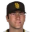

American Baseball League · Western Conference
San Diego Padres
24-17 .585 · 3rd in Western Conference, 2 GB
Run differential +61 (251 RS, 190 RA) · Pythagorean 26-15 · L10 7-3 · Streak W2 · Home 14-8 · Road 10-9
Petco Park (capacity 42,524)
PO Playoff (quarterfinal) pace
High Minors:  Tijuana Toros · Low Minors:
Tijuana Toros · Low Minors:  Long Beach Boobies
Long Beach Boobies
Depth chart & lineupsPayrollTransactionsLeague financesStaffBallparkRecord bookThis week's previewThe season so far
Season So Far games over .500 by date
Recent Results
Farm System automatic farm score
12th of 20 in the ABL with a farm score of 8.4 (51 players 25 or younger with stats at the affiliates). All farm systems →
Roster (28)
| # | Player | Pos | B/T | Age |
|---|---|---|---|---|
| 26 | Orlando Hernandez | SP | R/R | 36 |
| 16 | Jason Johnson | SP | R/R | 28 |
| 46 | Mike Maroth | SP | L/L | 24 |
| 20 |  Mark Mulder | SP | L/L | 24 |
| 29 | John Smoltz | SP | R/R | 34 |
| 54 | Steve Andrade | RP | R/R | 24 |
| 41 | RP | L/L | 24 | |
| 19 | Robert Ellis | RP | R/R | 31 |
| 57 | Jeremy Fikac | RP | R/R | 27 |
| 9 | RP | R/R | 30 | |
| 60 | RP | L/L | 25 | |
| 5 | Joey Dawley | CL | R/R | 30 |
| 25 | Robert Fick | C | L/R | 28 |
| 21 | C | R/R | 27 | |
| 12 | Hank Blalock | 1B | L/R | 21 |
| 37 | Damon Minor | 1B | L/L | 28 |
| 42 | 2B | R/R | 23 | |
| 3 | 2B | S/R | 22 | |
| 3 | 2B | S/R | 22 | |
| 8 | Randy Velarde | 2B | R/R | 39 |
| 22 | Brandon Larson | 3B | R/R | 25 |
| 23 | Phil Nevin | 3B | R/R | 31 |
| 10 | Jolbert Cabrera | SS | R/R | 29 |
| 59 | SS | R/R | 22 | |
| 6 | Brad Wilkerson | LF | L/L | 24 |
| 39 | Jose Macias | CF | S/R | 30 |
| 17 | CF | R/R | 25 | |
| 18 | RF | R/R | 26 |
2002 Batting
| Player | G | PA | AB | R | H | 2B | 3B | HR | RBI | BB | K | SB | AVG | OBP | SLG | OPS |
|---|---|---|---|---|---|---|---|---|---|---|---|---|---|---|---|---|
| Brad Wilkerson | 39 | 179 | 156 | 30 | 49 | 8 | 0 | 5 | 16 | 23 | 36 | 3 | .314 | .402 | .462 | .864 |
| Hank Blalock | 39 | 174 | 146 | 32 | 45 | 8 | 0 | 4 | 20 | 25 | 18 | 4 | .308 | .420 | .445 | .865 |
| Dustan Mohr | 38 | 165 | 146 | 20 | 43 | 9 | 1 | 4 | 28 | 18 | 37 | 0 | .295 | .370 | .452 | .822 |
| Phil Nevin | 37 | 164 | 140 | 34 | 50 | 8 | 0 | 8 | 35 | 22 | 24 | 1 | .357 | .439 | .586 | 1.025 |
| Randy Velarde | 36 | 160 | 136 | 33 | 45 | 9 | 0 | 8 | 24 | 19 | 22 | 3 | .331 | .415 | .574 | .989 |
| Gabe Kapler | 37 | 155 | 144 | 20 | 47 | 8 | 0 | 1 | 19 | 9 | 20 | 5 | .326 | .364 | .403 | .766 |
| Robert Fick | 33 | 143 | 128 | 21 | 34 | 10 | 0 | 6 | 30 | 12 | 21 | 0 | .266 | .329 | .484 | .813 |
| Jolbert Cabrera | 38 | 142 | 130 | 13 | 37 | 5 | 1 | 0 | 15 | 4 | 15 | 3 | .285 | .309 | .338 | .648 |
| Damon Minor | 31 | 116 | 103 | 21 | 30 | 7 | 0 | 7 | 26 | 13 | 25 | 0 | .291 | .371 | .563 | .934 |
| Jose Macias | 19 | 67 | 59 | 11 | 19 | 6 | 0 | 1 | 15 | 6 | 9 | 1 | .322 | .373 | .475 | .848 |
| Brandon Larson | 19 | 66 | 56 | 8 | 16 | 1 | 1 | 2 | 11 | 8 | 12 | 0 | .286 | .364 | .446 | .810 |
| Cesar Izturis | 12 | 48 | 46 | 3 | 10 | 0 | 0 | 0 | 2 | 2 | 5 | 1 | .217 | .250 | .217 | .467 |
| Nick Green | 7 | 16 | 16 | 1 | 4 | 0 | 0 | 1 | 2 | 0 | 2 | 0 | .250 | .250 | .438 | .688 |
| Brad King | 5 | 9 | 8 | 3 | 1 | 0 | 0 | 0 | 1 | 0 | 0 | 0 | .125 | .222 | .125 | .347 |
| Luis Ordaz | 3 | 6 | 5 | 1 | 2 | 1 | 0 | 0 | 0 | 1 | 0 | 0 | .400 | .500 | .600 | 1.100 |
| Tommy Whiteman | 5 | 5 | 5 | 0 | 0 | 0 | 0 | 0 | 0 | 0 | 2 | 0 | .000 | .000 | .000 | .000 |
| Team | 41 | 1615 | 1424 | 251 | 432 | 80 | 3 | 47 | 244 | 162 | 248 | 21 | .303 | .375 | .463 | .837 |
2002 Batting, Advanced
| Player | PA | AVG | OBP | SLG | OPS+ | ISO | BABIP | BB% | K% | WPA | UBR | WAR |
|---|---|---|---|---|---|---|---|---|---|---|---|---|
| Brad Wilkerson | 179 | .314 | .402 | .462 | 114 | .147 | .383 | 12.8% | 20.1% | 0.50 | 0.1 | 0.7 |
| Hank Blalock | 174 | .308 | .420 | .445 | 115 | .137 | .331 | 14.4% | 10.3% | 0.81 | -0.1 | 0.8 |
| Dustan Mohr | 165 | .295 | .370 | .452 | 103 | .158 | .368 | 10.9% | 22.4% | 0.24 | -0.5 | 1.1 |
| Phil Nevin | 164 | .357 | .439 | .586 | 152 | .229 | .382 | 13.4% | 14.6% | 0.41 | -1.3 | 1.5 |
| Randy Velarde | 160 | .331 | .415 | .574 | 142 | .243 | .343 | 11.9% | 13.8% | 0.75 | -1.0 | 1.1 |
| Gabe Kapler | 155 | .326 | .364 | .403 | 90 | .076 | .371 | 5.8% | 12.9% | -0.08 | 0.1 | 0.3 |
| Robert Fick | 143 | .266 | .329 | .484 | 99 | .219 | .272 | 8.4% | 14.7% | 1.09 | 0.1 | 0.7 |
| Jolbert Cabrera | 142 | .285 | .309 | .338 | 61 | .054 | .314 | 2.8% | 10.6% | -0.02 | -0.4 | -0.4 |
| Damon Minor | 116 | .291 | .371 | .563 | 128 | .272 | .324 | 11.2% | 21.6% | 1.07 | 0.3 | 0.5 |
| Jose Macias | 67 | .322 | .373 | .475 | 109 | .153 | .353 | 9.0% | 13.4% | 0.44 | -0.8 | 0.2 |
| Brandon Larson | 66 | .286 | .364 | .446 | 100 | .161 | .318 | 12.1% | 18.2% | 0.14 | -1.5 | 0.1 |
| Cesar Izturis | 48 | .217 | .250 | .217 | 18 | .000 | .244 | 4.2% | 10.4% | -0.52 | -0.7 | -0.2 |
| Nick Green | 16 | .250 | .250 | .438 | 66 | .188 | .231 | 0.0% | 12.5% | -0.12 | -0.4 | 0.0 |
| Brad King | 9 | .125 | .222 | .125 | -11 | .000 | .125 | 0.0% | 0.0% | 0.02 | 0.3 | -0.1 |
| Luis Ordaz | 6 | .400 | .500 | .600 | 172 | .200 | .400 | 16.7% | 0.0% | 0.01 | 0.0 | 0.1 |
| Tommy Whiteman | 5 | .000 | .000 | .000 | -100 | .000 | .000 | 0.0% | 40.0% | 0.00 | 0.0 | -0.1 |
| Team | 1615 | .303 | .375 | .463 | 107 | .159 | .337 | 10.0% | 15.4% | 4.74 | -5.8 | 6.4 |
2002 Pitching
| Pitcher | G | GS | W | L | SV | IP | H | R | ER | BB | K | HR | ERA | WHIP |
|---|---|---|---|---|---|---|---|---|---|---|---|---|---|---|
| John Smoltz | 9 | 9 | 7 | 0 | 0 | 68.1 | 57 | 20 | 20 | 15 | 72 | 4 | 2.63 | 1.05 |
| Mark Mulder | 9 | 9 | 4 | 3 | 0 | 66.1 | 76 | 29 | 26 | 13 | 48 | 8 | 3.53 | 1.34 |
| Orlando Hernandez | 8 | 8 | 4 | 4 | 0 | 46.1 | 47 | 21 | 21 | 16 | 54 | 5 | 4.08 | 1.36 |
| Jason Johnson | 8 | 8 | 3 | 5 | 0 | 40.1 | 54 | 37 | 33 | 11 | 27 | 4 | 7.36 | 1.61 |
| Mike Maroth | 7 | 7 | 2 | 1 | 0 | 38.1 | 45 | 25 | 19 | 13 | 22 | 3 | 4.46 | 1.51 |
| Mike Bacsik | 14 | 0 | 2 | 1 | 0 | 28.1 | 40 | 20 | 20 | 5 | 18 | 11 | 6.35 | 1.59 |
| Robert Ellis | 12 | 0 | 0 | 0 | 0 | 14.0 | 9 | 4 | 3 | 6 | 8 | 2 | 1.93 | 1.07 |
| Michael Tejera | 6 | 0 | 0 | 0 | 0 | 13.1 | 10 | 7 | 7 | 5 | 11 | 0 | 4.72 | 1.12 |
| Steve Andrade | 7 | 0 | 0 | 0 | 0 | 12.1 | 10 | 3 | 2 | 6 | 7 | 0 | 1.46 | 1.30 |
| Rob Stanifer | 7 | 0 | 0 | 0 | 0 | 12.0 | 17 | 9 | 9 | 3 | 10 | 1 | 6.75 | 1.67 |
| Joey Dawley | 12 | 0 | 2 | 2 | 8 | 11.0 | 10 | 10 | 10 | 2 | 6 | 3 | 8.18 | 1.09 |
| Jeremy Fikac | 9 | 0 | 0 | 1 | 0 | 10.2 | 8 | 5 | 4 | 2 | 8 | 3 | 3.38 | 0.94 |
| Team | 41 | 41 | 24 | 17 | 8 | 361.1 | 383 | 190 | 174 | 97 | 291 | 44 | 4.33 | 1.33 |
2002 Pitching, Advanced
| Pitcher | IP | ERA | WHIP | K/9 | BB/9 | HR/9 | K% | BB% | K-BB% | FIP | ERA+ | GB% | WPA | WAR |
|---|---|---|---|---|---|---|---|---|---|---|---|---|---|---|
| John Smoltz | 68.1 | 2.63 | 1.05 | 9.5 | 2.0 | 0.5 | 26.4% | 5.5% | 20.9% | 3.04 | 195 | 46.1% | 1.45 | 2.5 |
| Mark Mulder | 66.1 | 3.53 | 1.34 | 6.5 | 1.8 | 1.1 | 16.8% | 4.6% | 12.3% | 4.39 | 146 | 57.3% | 0.19 | 1.3 |
| Orlando Hernandez | 46.1 | 4.08 | 1.36 | 10.5 | 3.1 | 1.0 | 26.6% | 7.9% | 18.7% | 4.05 | 126 | 50.0% | 0.27 | 1.1 |
| Jason Johnson | 40.1 | 7.36 | 1.61 | 6.0 | 2.5 | 0.9 | 14.9% | 6.1% | 8.8% | 4.68 | 70 | 45.2% | -1.39 | 0.6 |
| Mike Maroth | 38.1 | 4.46 | 1.51 | 5.2 | 3.1 | 0.7 | 13.4% | 7.9% | 5.5% | 4.65 | 115 | 50.6% | -0.53 | 0.6 |
| Mike Bacsik | 28.1 | 6.35 | 1.59 | 5.7 | 1.6 | 3.5 | 14.3% | 4.0% | 10.3% | 7.99 | 81 | 44.4% | -1.04 | -0.8 |
| Robert Ellis | 14.0 | 1.93 | 1.07 | 5.1 | 3.9 | 1.3 | 14.3% | 10.7% | 3.6% | 5.69 | 266 | 45.2% | 0.38 | -0.1 |
| Michael Tejera | 13.1 | 4.72 | 1.12 | 7.4 | 3.4 | 0.0 | 19.3% | 8.8% | 10.5% | 3.39 | 109 | 51.7% | 0.02 | 0.3 |
| Steve Andrade | 12.1 | 1.46 | 1.30 | 5.1 | 4.4 | 0.0 | 12.7% | 10.9% | 1.8% | 4.25 | 352 | 58.6% | 0.10 | 0.1 |
| Rob Stanifer | 12.0 | 6.75 | 1.67 | 7.5 | 2.2 | 0.8 | 18.2% | 5.5% | 12.7% | 3.85 | 76 | 44.0% | -0.10 | 0.2 |
| Joey Dawley | 11.0 | 8.18 | 1.09 | 4.9 | 1.6 | 2.5 | 13.3% | 4.4% | 8.9% | 6.69 | 63 | 51.9% | -0.76 | -0.3 |
| Jeremy Fikac | 10.2 | 3.38 | 0.94 | 6.8 | 1.7 | 2.5 | 19.0% | 4.8% | 14.3% | 6.40 | 152 | 47.8% | -0.10 | -0.1 |
| Team | 361.1 | 4.33 | 1.33 | 7.2 | 2.4 | 1.1 | 18.9% | 6.3% | 12.6% | 4.56 | 118 | 49.8% | -1.49 | 5.5 |
2002 Fielding
| Player | Pos | G | GS | Inn | TC | PO | A | E | DP | FPct | ZR | Arm | Framing |
|---|---|---|---|---|---|---|---|---|---|---|---|---|---|
| Randy Jones | P | 40 | 40 | 315.1 | 112 | 31 | 81 | 0 | 12 | 1.000 | 0.0 | - | - |
| Randy Jones | P | 37 | 36 | 285.0 | 88 | 14 | 70 | 4 | 5 | .955 | 0.0 | - | - |
| Dave Roberts | P | 37 | 34 | 270.0 | 58 | 10 | 47 | 1 | 2 | .983 | 0.0 | - | - |
| Clay Kirby | P | 38 | 36 | 267.0 | 52 | 17 | 33 | 2 | 1 | .962 | 0.0 | - | - |
| Randy Jones | P | 39 | 39 | 263.0 | 78 | 15 | 60 | 3 | 2 | .962 | 0.0 | - | - |
| Gaylord Perry | P | 37 | 37 | 260.2 | 55 | 13 | 40 | 2 | 6 | .964 | 0.0 | - | - |
| Kevin Brown | P | 36 | 35 | 257.0 | 74 | 31 | 41 | 2 | 2 | .973 | 0.0 | - | - |
| Randy Jones | P | 37 | 36 | 253.0 | 70 | 15 | 51 | 4 | 5 | .943 | 0.0 | - | - |
| Pat Dobson | P | 40 | 34 | 251.0 | 48 | 17 | 31 | 0 | 2 | 1.000 | 0.0 | - | - |
| Mitchell Arlin | P | 38 | 37 | 250.0 | 54 | 17 | 34 | 3 | 1 | .944 | 0.0 | - | - |
| Bruce Hurst | P | 33 | 33 | 244.2 | 50 | 8 | 42 | 0 | 2 | 1.000 | 0.0 | - | - |
| Clay Kirby | P | 34 | 34 | 239.0 | 45 | 11 | 29 | 5 | 3 | .889 | 0.0 | - | - |
| Eric Show | P | 32 | 32 | 234.2 | 27 | 5 | 21 | 1 | 0 | .963 | 0.0 | - | - |
| Eric Show | P | 35 | 35 | 233.0 | 42 | 14 | 24 | 4 | 2 | .905 | 0.0 | - | - |
| Tim Lollar | P | 34 | 34 | 232.2 | 45 | 7 | 38 | 0 | 4 | 1.000 | 0.0 | - | - |
| Gaylord Perry | P | 32 | 32 | 232.2 | 54 | 11 | 41 | 2 | 2 | .963 | 0.0 | - | - |
| Andy Benes | P | 34 | 34 | 231.1 | 49 | 14 | 34 | 1 | 1 | .980 | 0.0 | - | - |
| Andy Benes | P | 34 | 34 | 230.2 | 32 | 17 | 14 | 1 | 2 | .969 | 0.0 | - | - |
| Mitchell Arlin | P | 36 | 34 | 228.0 | 42 | 18 | 23 | 1 | 3 | .976 | 0.0 | - | - |
| Andy Hawkins | P | 33 | 33 | 228.2 | 52 | 21 | 30 | 1 | 3 | .981 | 0.0 | - | - |
| Ed Whitson | P | 32 | 32 | 228.2 | 60 | 18 | 42 | 0 | 3 | 1.000 | 0.0 | - | - |
| Ed Whitson | P | 33 | 33 | 227.0 | 41 | 17 | 22 | 2 | 1 | .951 | 0.0 | - | - |
| Andy Ashby | P | 33 | 33 | 226.2 | 50 | 14 | 35 | 1 | 4 | .980 | 0.0 | - | - |
| Bill Greif | P | 43 | 35 | 226.0 | 49 | 13 | 33 | 3 | 4 | .939 | 0.0 | - | - |
| Bruce Hurst | P | 33 | 33 | 223.2 | 42 | 7 | 34 | 1 | 3 | .976 | 0.0 | - | - |
| Andy Benes | P | 33 | 33 | 223.0 | 37 | 8 | 29 | 0 | 3 | 1.000 | 0.0 | - | - |
| Bruce Hurst | P | 31 | 31 | 221.2 | 42 | 7 | 33 | 2 | 2 | .952 | 0.0 | - | - |
| Bruce Hurst | P | 32 | 32 | 217.1 | 43 | 10 | 32 | 1 | 0 | .977 | 0.0 | - | - |
| Andy Hawkins | P | 33 | 33 | 217.2 | 39 | 14 | 23 | 2 | 4 | .949 | 0.0 | - | - |
| Joey Hamilton | P | 34 | 34 | 217.1 | 48 | 15 | 30 | 3 | 3 | .938 | 0.0 | - | - |
| Clay Kirby | P | 35 | 35 | 215.2 | 44 | 17 | 23 | 4 | 4 | .909 | 0.0 | - | - |
| Clay Kirby | P | 36 | 34 | 215.0 | 31 | 6 | 23 | 2 | 1 | .935 | 0.0 | - | - |
| Bob Shirley | P | 39 | 35 | 214.0 | 50 | 10 | 37 | 3 | 2 | .940 | 0.0 | - | - |
| Dave Dravecky | P | 34 | 31 | 214.2 | 46 | 13 | 30 | 3 | 2 | .935 | 0.0 | - | - |
| Fred Norman | P | 42 | 28 | 212.0 | 35 | 9 | 24 | 2 | 4 | .943 | 0.0 | - | - |
| Dave Freisleben | P | 33 | 31 | 211.2 | 41 | 12 | 28 | 1 | 3 | .976 | 0.0 | - | - |
| Joey Hamilton | P | 34 | 33 | 211.2 | 45 | 17 | 27 | 1 | 2 | .978 | 0.0 | - | - |
| Brent Strom | P | 36 | 33 | 210.2 | 48 | 13 | 32 | 3 | 3 | .938 | 0.0 | - | - |
| LaMarr Hoyt | P | 31 | 31 | 210.1 | 53 | 12 | 40 | 1 | 4 | .981 | 0.0 | - | - |
| Andy Hawkins | P | 37 | 35 | 209.1 | 35 | 7 | 28 | 0 | 0 | 1.000 | 0.0 | - | - |
| Randy Jones | P | 40 | 34 | 208.1 | 53 | 7 | 44 | 2 | 3 | .962 | 0.0 | - | - |
| Woody Williams | P | 33 | 33 | 208.1 | 29 | 11 | 17 | 1 | 0 | .966 | 0.0 | - | - |
| Andy Ashby | P | 31 | 31 | 206.0 | 51 | 14 | 35 | 2 | 4 | .961 | 0.0 | - | - |
| Eric Show | P | 32 | 32 | 206.2 | 44 | 14 | 28 | 2 | 2 | .955 | 0.0 | - | - |
| Eric Show | P | 34 | 34 | 206.1 | 40 | 10 | 27 | 3 | 2 | .925 | 0.0 | - | - |
| Bob Tewksbury | P | 36 | 33 | 206.2 | 69 | 22 | 47 | 0 | 3 | 1.000 | 0.0 | - | - |
| Matt Clement | P | 34 | 34 | 205.0 | 57 | 27 | 26 | 4 | 4 | .930 | 0.0 | - | - |
| Sterling Hitchcock | P | 33 | 33 | 205.2 | 32 | 7 | 24 | 1 | 0 | .969 | 0.0 | - | - |
| Bob Shirley | P | 49 | 25 | 205.0 | 44 | 13 | 30 | 1 | 1 | .977 | 0.0 | - | - |
| Ed Whitson | P | 36 | 34 | 205.2 | 34 | 14 | 19 | 1 | 0 | .971 | 0.0 | - | - |
| Ed Whitson | P | 34 | 33 | 205.1 | 44 | 10 | 30 | 4 | 2 | .909 | 0.0 | - | - |
| Joey Hamilton | P | 31 | 30 | 204.1 | 48 | 12 | 30 | 6 | 1 | .875 | 0.0 | - | - |
| Bob Owchinko | P | 36 | 33 | 202.1 | 36 | 6 | 30 | 0 | 3 | 1.000 | 0.0 | - | - |
| Joe Niekro | P | 37 | 31 | 202.0 | 53 | 19 | 29 | 5 | 1 | .906 | 0.0 | - | - |
| Andy Ashby | P | 30 | 30 | 200.2 | 51 | 16 | 34 | 1 | 0 | .980 | 0.0 | - | - |
| Eric Show | P | 35 | 33 | 200.2 | 38 | 7 | 27 | 4 | 0 | .895 | 0.0 | - | - |
| Bill Greif | P | 36 | 31 | 199.1 | 36 | 11 | 24 | 1 | 0 | .972 | 0.0 | - | - |
| Bobby Jones | P | 33 | 33 | 195.0 | 35 | 7 | 28 | 0 | 0 | 1.000 | 0.0 | - | - |
| Tim Lollar | P | 31 | 31 | 195.2 | 23 | 1 | 22 | 0 | 1 | 1.000 | 0.0 | - | - |
| Kevin Jarvis | P | 32 | 32 | 193.1 | 54 | 20 | 33 | 1 | 0 | .981 | 0.0 | - | - |
| Andy Ashby | P | 31 | 31 | 192.2 | 28 | 6 | 21 | 1 | 0 | .964 | 0.0 | - | - |
| Joey Hamilton | P | 31 | 29 | 192.2 | 30 | 10 | 19 | 1 | 0 | .967 | 0.0 | - | - |
| Andy Benes | P | 32 | 31 | 192.1 | 25 | 15 | 9 | 1 | 1 | .960 | 0.0 | - | - |
| Clay Kirby | P | 34 | 31 | 191.2 | 31 | 9 | 19 | 3 | 1 | .903 | 0.0 | - | - |
| Mitchell Arlin | P | 34 | 27 | 189.0 | 32 | 11 | 21 | 0 | 4 | 1.000 | 0.0 | - | - |
| Ed Whitson | P | 31 | 31 | 189.0 | 46 | 11 | 35 | 0 | 3 | 1.000 | 0.0 | - | - |
| Danny Coombs | P | 35 | 27 | 188.0 | 24 | 4 | 20 | 0 | 1 | 1.000 | 0.0 | - | - |
| Dennis Rasmussen | P | 32 | 32 | 187.2 | 42 | 8 | 31 | 3 | 2 | .929 | 0.0 | - | - |
| John Curtis | P | 30 | 27 | 187.0 | 43 | 5 | 37 | 1 | 2 | .977 | 0.0 | - | - |
| John Montefusco | P | 32 | 32 | 184.1 | 43 | 11 | 29 | 3 | 0 | .930 | 0.0 | - | - |
| Al Santorini | P | 32 | 30 | 184.2 | 45 | 9 | 34 | 2 | 2 | .956 | 0.0 | - | - |
| Dennis Rasmussen | P | 33 | 33 | 183.2 | 33 | 6 | 27 | 0 | 3 | 1.000 | 0.0 | - | - |
| Joe McIntosh | P | 37 | 28 | 183.0 | 38 | 12 | 26 | 0 | 1 | 1.000 | 0.0 | - | - |
| Dave Dravecky | P | 28 | 28 | 183.2 | 43 | 7 | 35 | 1 | 3 | .977 | 0.0 | - | - |
| Dave Roberts | P | 43 | 21 | 182.0 | 35 | 5 | 29 | 1 | 3 | .971 | 0.0 | - | - |
| Dave Freisleben | P | 36 | 27 | 181.0 | 42 | 15 | 26 | 1 | 2 | .976 | 0.0 | - | - |
| Matt Clement | P | 31 | 31 | 180.2 | 26 | 12 | 12 | 2 | 0 | .923 | 0.0 | - | - |
| Jimmy Jones | P | 29 | 29 | 179.0 | 49 | 17 | 32 | 0 | 3 | 1.000 | 0.0 | - | - |
| Mark Thurmond | P | 32 | 29 | 178.2 | 49 | 11 | 38 | 0 | 3 | 1.000 | 0.0 | - | - |
| Juan Eichelberger | P | 31 | 24 | 177.2 | 35 | 9 | 25 | 1 | 0 | .971 | 0.0 | - | - |
| Sterling Hitchcock | P | 39 | 27 | 176.1 | 23 | 6 | 17 | 0 | 2 | 1.000 | 0.0 | - | - |
| Tim Lollar | P | 30 | 30 | 175.2 | 23 | 4 | 19 | 0 | 1 | 1.000 | 0.0 | - | - |
| Dave Freisleben | P | 34 | 24 | 172.0 | 51 | 16 | 33 | 2 | 2 | .961 | 0.0 | - | - |
| Andy Benes | P | 25 | 25 | 172.1 | 40 | 21 | 19 | 0 | 1 | 1.000 | 0.0 | - | - |
| Fernando Valenzuela | P | 33 | 31 | 171.2 | 50 | 11 | 38 | 1 | 0 | .980 | 0.0 | - | - |
| Bob Owchinko | P | 30 | 28 | 170.0 | 23 | 2 | 21 | 0 | 1 | 1.000 | 0.0 | - | - |
| Steve Mura | P | 37 | 23 | 168.2 | 36 | 9 | 26 | 1 | 3 | .972 | 0.0 | - | - |
| Woody Williams | P | 23 | 23 | 168.0 | 21 | 7 | 12 | 2 | 1 | .905 | 0.0 | - | - |
| Dan Spillner | P | 37 | 25 | 166.2 | 37 | 13 | 21 | 3 | 2 | .919 | 0.0 | - | - |
| Bob Shirley | P | 50 | 20 | 166.0 | 41 | 6 | 35 | 0 | 1 | 1.000 | 0.0 | - | - |
| Andy Ashby | P | 24 | 24 | 164.1 | 36 | 14 | 22 | 0 | 0 | 1.000 | 0.0 | - | - |
| Mike Caldwell | P | 42 | 20 | 164.0 | 58 | 9 | 47 | 2 | 3 | .966 | 0.0 | - | - |
| Craig Lefferts | P | 27 | 27 | 163.1 | 34 | 7 | 26 | 1 | 0 | .971 | 0.0 | - | - |
| Sterling Hitchcock | P | 32 | 28 | 161.0 | 27 | 4 | 21 | 2 | 1 | .926 | 0.0 | - | - |
| Dave Dravecky | P | 26 | 26 | 161.1 | 38 | 10 | 27 | 1 | 0 | .974 | 0.0 | - | - |
| LaMarr Hoyt | P | 35 | 25 | 159.0 | 27 | 8 | 17 | 2 | 1 | .926 | 0.0 | - | - |
| Eric Rasmussen | P | 45 | 21 | 156.2 | 31 | 6 | 24 | 1 | 1 | .968 | 0.0 | - | - |
| Dave Dravecky | P | 50 | 14 | 156.2 | 25 | 5 | 19 | 1 | 1 | .960 | 0.0 | - | - |
| Randy Jones | P | 24 | 24 | 154.1 | 51 | 12 | 38 | 1 | 0 | .980 | 0.0 | - | - |
| Rick Wise | P | 27 | 27 | 154.1 | 34 | 11 | 22 | 1 | 0 | .971 | 0.0 | - | - |
| Greg Harris | P | 22 | 22 | 152.0 | 37 | 13 | 23 | 1 | 3 | .973 | 0.0 | - | - |
| Rich Troedson | P | 50 | 18 | 152.1 | 39 | 5 | 34 | 0 | 0 | 1.000 | 0.0 | - | - |
| Tom Griffin | P | 38 | 20 | 151.1 | 25 | 6 | 16 | 3 | 2 | .880 | 0.0 | - | - |
| Andy Ashby | P | 24 | 24 | 150.2 | 41 | 10 | 29 | 2 | 3 | .951 | 0.0 | - | - |
| Eric Show | P | 47 | 14 | 150.0 | 42 | 4 | 35 | 3 | 1 | .929 | 0.0 | - | - |
| Gary Lucas | P | 46 | 18 | 150.0 | 32 | 9 | 23 | 0 | 4 | 1.000 | 0.0 | - | - |
| Mike Caldwell | P | 55 | 13 | 149.0 | 43 | 12 | 29 | 2 | 1 | .953 | 0.0 | - | - |
| Bob Owchinko | P | 42 | 20 | 149.1 | 28 | 2 | 24 | 2 | 2 | .929 | 0.0 | - | - |
| Dennis Rasmussen | P | 20 | 20 | 148.1 | 37 | 3 | 34 | 0 | 0 | 1.000 | 0.0 | - | - |
| Dan Spillner | P | 30 | 25 | 148.0 | 22 | 6 | 16 | 0 | 0 | 1.000 | 0.0 | - | - |
| Randy Jones | P | 27 | 25 | 147.1 | 57 | 8 | 47 | 2 | 0 | .965 | 0.0 | - | - |
| Dennis Rasmussen | P | 24 | 24 | 146.2 | 40 | 5 | 34 | 1 | 0 | .975 | 0.0 | - | - |
| Andy Hawkins | P | 36 | 22 | 146.0 | 28 | 10 | 16 | 2 | 1 | .929 | 0.0 | - | - |
| Eric Rasmussen | P | 27 | 24 | 146.1 | 40 | 11 | 28 | 1 | 1 | .975 | 0.0 | - | - |
| Jimmy Jones | P | 30 | 22 | 145.2 | 43 | 15 | 28 | 0 | 1 | 1.000 | 0.0 | - | - |
| Randy Jones | P | 20 | 19 | 145.0 | 28 | 3 | 24 | 1 | 0 | .964 | 0.0 | - | - |
| Woody Williams | P | 23 | 23 | 145.0 | 27 | 9 | 15 | 3 | 2 | .889 | 0.0 | - | - |
| Scott Sanders | P | 46 | 16 | 144.0 | 27 | 15 | 10 | 2 | 0 | .926 | 0.0 | - | - |
| Ed Whitson | P | 31 | 21 | 144.1 | 10 | 4 | 6 | 0 | 0 | 1.000 | 0.0 | - | - |
| Tommie Sisk | P | 53 | 13 | 143.0 | 39 | 15 | 24 | 0 | 0 | 1.000 | 0.0 | - | - |
| Rich Folkers | P | 45 | 15 | 142.0 | 33 | 10 | 20 | 3 | 0 | .909 | 0.0 | - | - |
| Juan Eichelberger | P | 25 | 24 | 141.1 | 45 | 10 | 28 | 7 | 4 | .844 | 0.0 | - | - |
| Mike Corkins | P | 47 | 9 | 140.0 | 32 | 8 | 22 | 2 | 0 | .938 | 0.0 | - | - |
| Chris Welsh | P | 28 | 20 | 139.1 | 38 | 7 | 29 | 2 | 4 | .947 | 0.0 | - | - |
| Dave Freisleben | P | 33 | 23 | 138.2 | 18 | 6 | 11 | 1 | 2 | .944 | 0.0 | - | - |
| Steve Mura | P | 23 | 22 | 138.2 | 41 | 14 | 26 | 1 | 0 | .976 | 0.0 | - | - |
| Mark Thurmond | P | 36 | 23 | 138.1 | 36 | 8 | 27 | 1 | 2 | .972 | 0.0 | - | - |
| Bob Shirley | P | 59 | 12 | 137.0 | 40 | 7 | 32 | 1 | 1 | .975 | 0.0 | - | - |
| Eric Show | P | 24 | 22 | 136.1 | 21 | 6 | 14 | 1 | 1 | .952 | 0.0 | - | - |
| Dick Kelley | P | 27 | 23 | 136.0 | 36 | 9 | 27 | 0 | 1 | 1.000 | 0.0 | - | - |
| Lance McCullers | P | 70 | 7 | 136.0 | 24 | 6 | 16 | 2 | 1 | .917 | 0.0 | - | - |
| Greg Harris | P | 56 | 8 | 135.0 | 33 | 12 | 21 | 0 | 2 | 1.000 | 0.0 | - | - |
| Adam Eaton | P | 22 | 22 | 135.0 | 26 | 7 | 18 | 1 | 2 | .962 | 0.0 | - | - |
| John D'Acquisto | P | 51 | 11 | 133.2 | 13 | 3 | 9 | 1 | 0 | .923 | 0.0 | - | - |
| Greg Harris | P | 20 | 20 | 133.0 | 25 | 10 | 14 | 1 | 0 | .960 | 0.0 | - | - |
| Tom Phoebus | P | 29 | 21 | 133.0 | 31 | 13 | 15 | 3 | 1 | .903 | 0.0 | - | - |
| Rollie Fingers | P | 78 | 0 | 132.1 | 27 | 5 | 19 | 3 | 0 | .889 | 0.0 | - | - |
| Doug Brocail | P | 24 | 24 | 128.1 | 30 | 8 | 20 | 2 | 1 | .933 | 0.0 | - | - |
| Fred Norman | P | 20 | 18 | 127.0 | 24 | 3 | 18 | 3 | 0 | .875 | 0.0 | - | - |
| Bill Greif | P | 34 | 22 | 125.0 | 21 | 5 | 12 | 4 | 0 | .810 | 0.0 | - | - |
| Brian Meadows | P | 22 | 22 | 124.2 | 28 | 9 | 18 | 1 | 2 | .964 | 0.0 | - | - |
| Chris Welsh | P | 22 | 19 | 123.2 | 33 | 3 | 30 | 0 | 0 | 1.000 | 0.0 | - | - |
| Dan Spillner | P | 76 | 0 | 123.0 | 15 | 5 | 9 | 1 | 1 | .933 | 0.0 | - | - |
| Butch Metzger | P | 77 | 0 | 123.1 | 23 | 5 | 17 | 1 | 0 | .957 | 0.0 | - | - |
| Walt Terrell | P | 19 | 19 | 123.1 | 43 | 13 | 30 | 0 | 3 | 1.000 | 0.0 | - | - |
| Lance McCullers | P | 78 | 0 | 123.1 | 28 | 9 | 17 | 2 | 1 | .929 | 0.0 | - | - |
| Mike Corkins | P | 47 | 11 | 122.2 | 20 | 8 | 8 | 4 | 0 | .800 | 0.0 | - | - |
| Tim Worrell | P | 50 | 11 | 121.0 | 19 | 8 | 9 | 2 | 0 | .895 | 0.0 | - | - |
| Brent Strom | P | 18 | 16 | 120.1 | 28 | 8 | 19 | 1 | 2 | .964 | 0.0 | - | - |
| Andy Hawkins | P | 21 | 19 | 119.2 | 32 | 13 | 18 | 1 | 2 | .969 | 0.0 | - | - |
| Greg Harris | P | 20 | 20 | 118.0 | 36 | 10 | 21 | 5 | 0 | .861 | 0.0 | - | - |
| Pete Smith | P | 37 | 15 | 118.0 | 31 | 6 | 24 | 1 | 1 | .968 | 0.0 | - | - |
| Brian Tollberg | P | 19 | 19 | 118.0 | 25 | 9 | 15 | 1 | 1 | .960 | 0.0 | - | - |
| Andy Benes | P | 19 | 19 | 118.2 | 15 | 7 | 7 | 1 | 1 | .933 | 0.0 | - | - |
| Greg Harris | P | 73 | 0 | 117.1 | 21 | 4 | 17 | 0 | 1 | 1.000 | 0.0 | - | - |
| Brian Tollberg | P | 19 | 19 | 117.1 | 28 | 6 | 20 | 2 | 1 | .929 | 0.0 | - | - |
| Andy Hawkins | P | 24 | 20 | 117.2 | 26 | 8 | 18 | 0 | 3 | 1.000 | 0.0 | - | - |
| John Curtis | P | 26 | 18 | 116.1 | 21 | 2 | 17 | 2 | 1 | .905 | 0.0 | - | - |
| Mark Grant | P | 50 | 0 | 116.1 | 24 | 9 | 14 | 1 | 1 | .958 | 0.0 | - | - |
| Adam Eaton | P | 17 | 17 | 116.2 | 33 | 13 | 18 | 2 | 2 | .939 | 0.0 | - | - |
| Mark Thurmond | P | 21 | 18 | 115.1 | 29 | 7 | 22 | 0 | 0 | 1.000 | 0.0 | - | - |
| Holbrook Blair | P | 40 | 12 | 114.0 | 21 | 6 | 13 | 2 | 1 | .905 | 0.0 | - | - |
| Brian Lawrence | P | 27 | 15 | 114.2 | 32 | 2 | 26 | 4 | 0 | .875 | 0.0 | - | - |
| Sean Bergman | P | 41 | 14 | 113.1 | 30 | 11 | 19 | 0 | 0 | 1.000 | 0.0 | - | - |
| Ron Herbel | P | 64 | 1 | 111.0 | 26 | 8 | 16 | 2 | 0 | .923 | 0.0 | - | - |
| Scott Sanders | P | 23 | 20 | 111.0 | 24 | 9 | 15 | 0 | 0 | 1.000 | 0.0 | - | - |
| Mike Corkins | P | 24 | 18 | 111.0 | 21 | 8 | 10 | 3 | 1 | .857 | 0.0 | - | - |
| Luis De Leon | P | 63 | 0 | 111.0 | 12 | 2 | 9 | 1 | 1 | .917 | 0.0 | - | - |
| Rick Sawyer | P | 56 | 9 | 111.0 | 29 | 3 | 24 | 2 | 2 | .931 | 0.0 | - | - |
| Eric Rasmussen | P | 40 | 14 | 111.1 | 25 | 8 | 15 | 2 | 2 | .920 | 0.0 | - | - |
| Gary Ross | P | 46 | 7 | 109.2 | 35 | 6 | 27 | 2 | 2 | .943 | 0.0 | - | - |
| Joey Hamilton | P | 16 | 16 | 108.2 | 24 | 7 | 16 | 1 | 3 | .958 | 0.0 | - | - |
| Rollie Fingers | P | 67 | 0 | 107.1 | 27 | 14 | 12 | 1 | 1 | .963 | 0.0 | - | - |
| Craig Lefferts | P | 83 | 0 | 107.2 | 27 | 3 | 24 | 0 | 3 | 1.000 | 0.0 | - | - |
| Tim Worrell | P | 60 | 10 | 106.1 | 30 | 8 | 18 | 4 | 2 | .867 | 0.0 | - | - |
| Dan Spillner | P | 32 | 14 | 106.2 | 31 | 7 | 21 | 3 | 3 | .903 | 0.0 | - | - |
| Eric Show | P | 16 | 16 | 106.1 | 15 | 4 | 10 | 1 | 1 | .933 | 0.0 | - | - |
| Eric Show | P | 39 | 12 | 106.1 | 20 | 7 | 12 | 1 | 1 | .950 | 0.0 | - | - |
| Wally Whitehurst | P | 21 | 19 | 105.2 | 23 | 3 | 18 | 2 | 2 | .913 | 0.0 | - | - |
| Dave Dravecky | P | 31 | 10 | 105.0 | 31 | 7 | 24 | 0 | 3 | 1.000 | 0.0 | - | - |
| Craig Lefferts | P | 62 | 0 | 105.2 | 16 | 5 | 10 | 1 | 2 | .938 | 0.0 | - | - |
| Calvin Schiraldi | P | 42 | 8 | 104.0 | 19 | 5 | 11 | 3 | 0 | .842 | 0.0 | - | - |
| Rollie Fingers | P | 66 | 0 | 103.0 | 21 | 9 | 11 | 1 | 0 | .952 | 0.0 | - | - |
| Luis De Leon | P | 61 | 0 | 102.0 | 34 | 13 | 18 | 3 | 1 | .912 | 0.0 | - | - |
| Mark Grant | P | 17 | 17 | 102.1 | 24 | 7 | 14 | 3 | 0 | .875 | 0.0 | - | - |
| Rich Gossage | P | 62 | 0 | 102.1 | 13 | 5 | 8 | 0 | 0 | 1.000 | 0.0 | - | - |
| Dave Tomlin | P | 76 | 0 | 101.2 | 28 | 7 | 21 | 0 | 2 | 1.000 | 0.0 | - | - |
| Larry Hardy | P | 76 | 1 | 101.2 | 30 | 6 | 22 | 2 | 2 | .933 | 0.0 | - | - |
| Frank Seminara | P | 19 | 18 | 100.1 | 34 | 9 | 23 | 2 | 1 | .941 | 0.0 | - | - |
| Tim Worrell | P | 21 | 16 | 100.2 | 18 | 6 | 11 | 1 | 0 | .944 | 0.0 | - | - |
| Sean Bergman | P | 44 | 9 | 99.0 | 28 | 5 | 20 | 3 | 0 | .893 | 0.0 | - | - |
| Mark Davis | P | 62 | 0 | 98.1 | 26 | 4 | 21 | 1 | 2 | .962 | 0.0 | - | - |
| Rick Wise | P | 18 | 18 | 98.0 | 24 | 3 | 21 | 0 | 0 | 1.000 | 0.0 | - | - |
| Gene Walter | P | 57 | 0 | 98.0 | 26 | 8 | 17 | 1 | 1 | .962 | 0.0 | - | - |
| Mike Maddux | P | 64 | 1 | 98.2 | 28 | 9 | 18 | 1 | 1 | .964 | 0.0 | - | - |
| Danny Frisella | P | 65 | 0 | 97.2 | 21 | 6 | 13 | 2 | 0 | .905 | 0.0 | - | - |
| Glenn Dishman | P | 19 | 16 | 97.0 | 17 | 4 | 13 | 0 | 1 | 1.000 | 0.0 | - | - |
| Mark Grant | P | 33 | 11 | 97.2 | 20 | 4 | 16 | 0 | 1 | 1.000 | 0.0 | - | - |
| Gary Lucas | P | 65 | 0 | 97.1 | 25 | 6 | 19 | 0 | 0 | 1.000 | 0.0 | - | - |
| Lance McCullers | P | 60 | 0 | 97.2 | 22 | 6 | 14 | 2 | 1 | .909 | 0.0 | - | - |
| Jim Deshaies | P | 15 | 15 | 96.0 | 24 | 2 | 22 | 0 | 1 | 1.000 | 0.0 | - | - |
| John Montefusco | P | 31 | 10 | 95.1 | 19 | 3 | 13 | 3 | 0 | .842 | 0.0 | - | - |
| Brian Boehringer | P | 33 | 11 | 94.1 | 18 | 8 | 9 | 1 | 0 | .944 | 0.0 | - | - |
| John D'Acquisto | P | 45 | 3 | 93.0 | 9 | 3 | 6 | 0 | 0 | 1.000 | 0.0 | - | - |
| Jose Melendez | P | 31 | 9 | 93.2 | 17 | 4 | 11 | 2 | 0 | .882 | 0.0 | - | - |
| Mark Davis | P | 70 | 0 | 92.2 | 15 | 1 | 11 | 3 | 0 | .800 | 0.0 | - | - |
| Gary Ross | P | 60 | 0 | 92.0 | 27 | 10 | 16 | 1 | 3 | .963 | 0.0 | - | - |
| Will Cunnane | P | 54 | 8 | 91.1 | 20 | 12 | 6 | 2 | 2 | .900 | 0.0 | - | - |
| Gary Lucas | P | 62 | 0 | 91.0 | 18 | 5 | 10 | 3 | 1 | .833 | 0.0 | - | - |
| Rich Rodriguez | P | 61 | 1 | 91.0 | 22 | 4 | 17 | 1 | 2 | .955 | 0.0 | - | - |
| Scott Sanders | P | 17 | 15 | 90.0 | 9 | 6 | 3 | 0 | 0 | 1.000 | 0.0 | - | - |
| Fernando Valenzuela | P | 29 | 15 | 90.1 | 34 | 7 | 27 | 0 | 2 | 1.000 | 0.0 | - | - |
| Gary Lucas | P | 57 | 0 | 90.0 | 20 | 5 | 15 | 0 | 0 | 1.000 | 0.0 | - | - |
| Ed Acosta | P | 46 | 2 | 89.0 | 14 | 3 | 10 | 1 | 1 | .929 | 0.0 | - | - |
| Jose Melendez | P | 56 | 3 | 89.1 | 11 | 2 | 8 | 1 | 1 | .909 | 0.0 | - | - |
| Holbrook Blair | P | 60 | 0 | 88.0 | 14 | 6 | 6 | 2 | 0 | .857 | 0.0 | - | - |
| Juan Eichelberger | P | 15 | 13 | 88.2 | 15 | 2 | 10 | 3 | 0 | .800 | 0.0 | - | - |
| Vicente Romo | P | 49 | 1 | 88.1 | 22 | 5 | 15 | 2 | 1 | .909 | 0.0 | - | - |
| Trevor Hoffman | P | 70 | 0 | 88.0 | 14 | 8 | 6 | 0 | 0 | 1.000 | 0.0 | - | - |
| Frank Reberger | P | 67 | 0 | 87.2 | 30 | 6 | 23 | 1 | 0 | .967 | 0.0 | - | - |
| Alan Foster | P | 26 | 11 | 86.2 | 18 | 9 | 9 | 0 | 1 | 1.000 | 0.0 | - | - |
| Mark Lee | P | 56 | 0 | 85.0 | 28 | 5 | 22 | 1 | 0 | .964 | 0.0 | - | - |
| Dave Tomlin | P | 67 | 0 | 83.0 | 37 | 7 | 27 | 3 | 3 | .919 | 0.0 | - | - |
| Rollie Fingers | P | 54 | 0 | 83.2 | 13 | 3 | 9 | 1 | 0 | .923 | 0.0 | - | - |
| Craig Lefferts | P | 60 | 0 | 83.1 | 15 | 4 | 11 | 0 | 1 | 1.000 | 0.0 | - | - |
| Ramistella Kinney | P | 50 | 0 | 82.2 | 15 | 2 | 13 | 0 | 0 | 1.000 | 0.0 | - | - |
| Rick Sawyer | P | 13 | 11 | 81.2 | 15 | 3 | 12 | 0 | 0 | 1.000 | 0.0 | - | - |
| Mark Langston | P | 22 | 16 | 81.1 | 19 | 2 | 16 | 1 | 1 | .947 | 0.0 | - | - |
| Trevor Hoffman | P | 70 | 0 | 81.1 | 8 | 2 | 5 | 1 | 0 | .875 | 0.0 | - | - |
| Rich Rodriguez | P | 64 | 1 | 80.0 | 15 | 2 | 13 | 0 | 1 | 1.000 | 0.0 | - | - |
| Floyd Chiffer | P | 51 | 0 | 79.1 | 15 | 5 | 10 | 0 | 0 | 1.000 | 0.0 | - | - |
| Mike Maddux | P | 50 | 1 | 79.2 | 28 | 9 | 18 | 1 | 1 | .964 | 0.0 | - | - |
| Randy Myers | P | 66 | 0 | 79.2 | 14 | 2 | 12 | 0 | 0 | 1.000 | 0.0 | - | - |
| Rich Gossage | P | 50 | 0 | 79.0 | 7 | 0 | 7 | 0 | 1 | 1.000 | 0.0 | - | - |
| Dave Dravecky | P | 30 | 10 | 79.0 | 17 | 5 | 11 | 1 | 1 | .941 | 0.0 | - | - |
| Ed Whitson | P | 13 | 12 | 78.2 | 14 | 5 | 9 | 0 | 0 | 1.000 | 0.0 | - | - |
| Craig Lefferts | P | 56 | 0 | 78.2 | 16 | 6 | 10 | 0 | 2 | 1.000 | 0.0 | - | - |
| Gill Baldschun | P | 61 | 0 | 77.0 | 17 | 6 | 10 | 1 | 0 | .941 | 0.0 | - | - |
| Carlos Reyes | P | 65 | 0 | 77.1 | 18 | 3 | 15 | 0 | 2 | 1.000 | 0.0 | - | - |
| Gary Ross | P | 58 | 0 | 77.2 | 18 | 8 | 10 | 0 | 2 | 1.000 | 0.0 | - | - |
| Brian Boehringer | P | 56 | 1 | 76.1 | 15 | 7 | 8 | 0 | 0 | 1.000 | 0.0 | - | - |
| Tim Lollar | P | 24 | 11 | 76.2 | 27 | 4 | 22 | 1 | 1 | .963 | 0.0 | - | - |
| Al Santorini | P | 21 | 12 | 76.0 | 9 | 2 | 7 | 0 | 1 | 1.000 | 0.0 | - | - |
| Ed Whitson | P | 17 | 12 | 75.2 | 21 | 6 | 13 | 2 | 1 | .905 | 0.0 | - | - |
| Fred Norman | P | 12 | 11 | 74.0 | 18 | 4 | 14 | 0 | 0 | 1.000 | 0.0 | - | - |
| Lowell Palmer | P | 22 | 8 | 73.0 | 11 | 1 | 9 | 1 | 1 | .909 | 0.0 | - | - |
| Steve Mura | P | 38 | 5 | 73.0 | 14 | 5 | 8 | 1 | 0 | .929 | 0.0 | - | - |
| Dave Tomlin | P | 49 | 1 | 73.0 | 31 | 8 | 21 | 2 | 1 | .935 | 0.0 | - | - |
| Trevor Hoffman | P | 66 | 0 | 73.0 | 7 | 3 | 4 | 0 | 1 | 1.000 | 0.0 | - | - |
| Dan Miceli | P | 67 | 0 | 72.2 | 7 | 4 | 3 | 0 | 1 | 1.000 | 0.0 | - | - |
| Elias Sosa | P | 41 | 1 | 72.1 | 12 | 7 | 5 | 0 | 0 | 1.000 | 0.0 | - | - |
| Bill Greif | P | 59 | 1 | 72.0 | 6 | 0 | 5 | 1 | 0 | .833 | 0.0 | - | - |
| Brian Williams | P | 44 | 6 | 72.0 | 15 | 6 | 9 | 0 | 0 | 1.000 | 0.0 | - | - |
| Trevor Hoffman | P | 70 | 0 | 72.1 | 9 | 2 | 7 | 0 | 0 | 1.000 | 0.0 | - | - |
| Vicente Romo | P | 54 | 1 | 71.0 | 25 | 2 | 21 | 2 | 1 | .920 | 0.0 | - | - |
| Mark Thurmond | P | 17 | 15 | 70.2 | 16 | 4 | 12 | 0 | 0 | 1.000 | 0.0 | - | - |
| Donne Wall | P | 46 | 1 | 70.1 | 14 | 4 | 10 | 0 | 2 | 1.000 | 0.0 | - | - |
| Donne Wall | P | 55 | 0 | 70.1 | 22 | 9 | 11 | 2 | 1 | .909 | 0.0 | - | - |
| Al Severinsen | P | 59 | 0 | 70.0 | 22 | 5 | 17 | 0 | 2 | 1.000 | 0.0 | - | - |
| Tom Griffin | P | 11 | 11 | 70.1 | 16 | 4 | 10 | 2 | 0 | .875 | 0.0 | - | - |
| Andy Ashby | P | 12 | 12 | 69.0 | 17 | 10 | 7 | 0 | 1 | 1.000 | 0.0 | - | - |
| Carlos Almanzar | P | 62 | 0 | 69.2 | 14 | 3 | 11 | 0 | 0 | 1.000 | 0.0 | - | - |
| Dave Wehrmeister | P | 30 | 6 | 69.2 | 18 | 7 | 9 | 2 | 1 | .889 | 0.0 | - | - |
| Tom Dukes | P | 53 | 0 | 69.0 | 11 | 2 | 8 | 1 | 1 | .909 | 0.0 | - | - |
| Craig Lefferts | P | 54 | 0 | 69.0 | 15 | 3 | 12 | 0 | 1 | 1.000 | 0.0 | - | - |
| Bryce Florie | P | 47 | 0 | 68.2 | 14 | 4 | 9 | 1 | 0 | .929 | 0.0 | - | - |
| Pedro Martinez | P | 48 | 1 | 68.1 | 26 | 5 | 17 | 4 | 1 | .846 | 0.0 | - | - |
| Dan Miceli | P | 66 | 0 | 68.2 | 11 | 4 | 6 | 1 | 0 | .909 | 0.0 | - | - |
| Sid Monge | P | 47 | 0 | 68.2 | 13 | 4 | 9 | 0 | 0 | 1.000 | 0.0 | - | - |
| Kerry Taylor | P | 36 | 7 | 68.1 | 11 | 4 | 7 | 0 | 0 | 1.000 | 0.0 | - | - |
| Greg Booker | P | 44 | 0 | 68.1 | 17 | 8 | 8 | 1 | 1 | .941 | 0.0 | - | - |
| John Smoltz | P | 9 | 9 | 68.1 | 6 | 1 | 5 | 0 | 0 | 1.000 | -0.4 | - | - |
| John D'Acquisto | P | 39 | 0 | 67.0 | 10 | 1 | 9 | 0 | 0 | 1.000 | 0.0 | - | - |
| Eric Nolte | P | 12 | 12 | 67.1 | 12 | 5 | 7 | 0 | 0 | 1.000 | 0.0 | - | - |
| Trevor Hoffman | P | 64 | 0 | 67.1 | 8 | 3 | 5 | 0 | 0 | 1.000 | 0.0 | - | - |
| Fernando Valenzuela | P | 13 | 13 | 66.1 | 21 | 4 | 16 | 1 | 0 | .952 | 0.0 | - | - |
| Kevin Walker | P | 70 | 0 | 66.2 | 10 | 2 | 8 | 0 | 0 | 1.000 | 0.0 | - | - |
| John Curtis | P | 28 | 8 | 66.2 | 13 | 0 | 12 | 1 | 1 | .923 | 0.0 | - | - |
| Mark Mulder | P | 9 | 9 | 66.1 | 13 | 7 | 6 | 0 | 0 | 1.000 | -0.2 | - | - |
| Andy Benes | P | 10 | 10 | 66.2 | 12 | 4 | 8 | 0 | 1 | 1.000 | 0.0 | - | - |
| Doug Bochtler | P | 63 | 0 | 65.2 | 4 | 2 | 2 | 0 | 0 | 1.000 | 0.0 | - | - |
| Sterling Hitchcock | P | 11 | 11 | 65.2 | 9 | 0 | 9 | 0 | 0 | 1.000 | 0.0 | - | - |
| Mark Lee | P | 46 | 0 | 65.0 | 18 | 3 | 14 | 1 | 1 | .944 | 0.0 | - | - |
| Earl Wilson | P | 15 | 9 | 65.0 | 8 | 2 | 5 | 1 | 0 | .875 | 0.0 | - | - |
| Mitchell Arlin | P | 16 | 12 | 64.0 | 16 | 8 | 7 | 1 | 0 | .938 | 0.0 | - | - |
| John Littlefield | P | 42 | 0 | 64.0 | 16 | 6 | 9 | 1 | 1 | .938 | 0.0 | - | - |
| Bob Miller | P | 38 | 0 | 64.0 | 20 | 9 | 11 | 0 | 2 | 1.000 | 0.0 | - | - |
| Johnny Podres | P | 17 | 9 | 64.2 | 10 | 1 | 9 | 0 | 0 | 1.000 | 0.0 | - | - |
| Wally Whitehurst | P | 13 | 13 | 64.0 | 15 | 4 | 10 | 1 | 0 | .933 | 0.0 | - | - |
| Rich Gossage | P | 45 | 0 | 64.2 | 7 | 2 | 5 | 0 | 0 | 1.000 | 0.0 | - | - |
| Pena Boone | P | 37 | 0 | 63.1 | 22 | 7 | 14 | 1 | 1 | .955 | 0.0 | - | - |
| Andy Hawkins | P | 15 | 10 | 63.2 | 13 | 6 | 6 | 1 | 0 | .923 | 0.0 | - | - |
| Greg Booker | P | 34 | 2 | 63.2 | 18 | 6 | 12 | 0 | 0 | 1.000 | 0.0 | - | - |
| Mark Davis | P | 43 | 0 | 62.1 | 15 | 4 | 10 | 1 | 2 | .933 | 0.0 | - | - |
| Storm Davis | P | 21 | 10 | 62.2 | 17 | 7 | 9 | 1 | 0 | .941 | 0.0 | - | - |
| Gary Ross | P | 33 | 2 | 62.0 | 15 | 3 | 12 | 0 | 1 | 1.000 | 0.0 | - | - |
| Dave LaPoint | P | 24 | 4 | 61.1 | 12 | 3 | 8 | 1 | 1 | .917 | 0.0 | - | - |
| Doug Bochtler | P | 54 | 0 | 60.1 | 11 | 4 | 5 | 2 | 0 | .818 | 0.0 | - | - |
| Derek Lilliquist | P | 16 | 7 | 60.1 | 4 | 1 | 3 | 0 | 0 | 1.000 | 0.0 | - | - |
| Tim Stoddard | P | 44 | 0 | 60.0 | 8 | 3 | 5 | 0 | 0 | 1.000 | 0.0 | - | - |
| Dick Kelley | P | 48 | 1 | 60.0 | 13 | 5 | 8 | 0 | 1 | 1.000 | 0.0 | - | - |
| Jay Witasick | P | 11 | 11 | 60.2 | 15 | 5 | 10 | 0 | 1 | 1.000 | 0.0 | - | - |
| Trevor Hoffman | P | 62 | 0 | 60.1 | 9 | 5 | 4 | 0 | 0 | 1.000 | 0.0 | - | - |
| Rich Folkers | P | 33 | 3 | 59.2 | 12 | 4 | 8 | 0 | 0 | 1.000 | 0.0 | - | - |
| Gene Harris | P | 59 | 0 | 59.1 | 15 | 5 | 10 | 0 | 0 | 1.000 | 0.0 | - | - |
| Dave Tomlin | P | 47 | 0 | 58.0 | 16 | 5 | 11 | 0 | 1 | 1.000 | 0.0 | - | - |
| Billy McCool | P | 54 | 0 | 58.2 | 11 | 0 | 10 | 1 | 0 | .909 | 0.0 | - | - |
| Danny Coombs | P | 19 | 7 | 58.0 | 17 | 2 | 15 | 0 | 1 | 1.000 | 0.0 | - | - |
| Greg Booker | P | 32 | 1 | 57.1 | 17 | 9 | 7 | 1 | 1 | .941 | 0.0 | - | - |
| Ron Willis | P | 42 | 0 | 56.0 | 22 | 9 | 13 | 0 | 1 | 1.000 | 0.0 | - | - |
| Mike Corkins | P | 25 | 2 | 56.1 | 6 | 1 | 5 | 0 | 0 | 1.000 | 0.0 | - | - |
| Trevor Hoffman | P | 47 | 0 | 56.0 | 9 | 4 | 5 | 0 | 1 | 1.000 | 0.0 | - | - |
| Ricky Bones | P | 11 | 11 | 54.0 | 3 | 1 | 2 | 0 | 0 | 1.000 | 0.0 | - | - |
| Dave Leiper | P | 35 | 0 | 54.0 | 12 | 3 | 9 | 0 | 1 | 1.000 | 0.0 | - | - |
| Adam Peterson | P | 13 | 11 | 54.2 | 9 | 4 | 5 | 0 | 1 | 1.000 | 0.0 | - | - |
| Jerry Johnson | P | 21 | 4 | 54.0 | 12 | 6 | 5 | 1 | 0 | .917 | 0.0 | - | - |
| Trevor Hoffman | P | 39 | 0 | 54.1 | 8 | 4 | 4 | 0 | 0 | 1.000 | 0.0 | - | - |
| Donne Wall | P | 44 | 0 | 53.2 | 6 | 1 | 5 | 0 | 0 | 1.000 | 0.0 | - | - |
| Trevor Hoffman | P | 55 | 0 | 53.1 | 6 | 5 | 1 | 0 | 0 | 1.000 | 0.0 | - | - |
| Scott Sanders | P | 9 | 9 | 52.1 | 5 | 3 | 2 | 0 | 0 | 1.000 | 0.0 | - | - |
| Rich Gossage | P | 40 | 0 | 52.0 | 7 | 2 | 5 | 0 | 0 | 1.000 | 0.0 | - | - |
| Jose Antonio Nunez | P | 56 | 0 | 51.2 | 7 | 0 | 6 | 1 | 0 | .857 | 0.0 | - | - |
| Craig Lefferts | P | 33 | 0 | 51.1 | 8 | 2 | 5 | 1 | 1 | .875 | 0.0 | - | - |
| Heath Murray | P | 22 | 8 | 50.0 | 8 | 0 | 8 | 0 | 0 | 1.000 | 0.0 | - | - |
| Roger Mason | P | 34 | 0 | 50.0 | 8 | 2 | 6 | 0 | 0 | 1.000 | 0.0 | - | - |
| Bryce Florie | P | 39 | 0 | 49.1 | 14 | 6 | 7 | 1 | 0 | .929 | 0.0 | - | - |
| Tim Mauser | P | 35 | 0 | 49.0 | 7 | 2 | 5 | 0 | 2 | 1.000 | 0.0 | - | - |
| Stan Spencer | P | 8 | 8 | 49.2 | 9 | 5 | 4 | 0 | 0 | 1.000 | 0.0 | - | - |
| John Urrea | P | 38 | 0 | 49.0 | 7 | 0 | 6 | 1 | 0 | .857 | 0.0 | - | - |
| Danny Jackson | P | 13 | 9 | 49.0 | 9 | 3 | 5 | 1 | 0 | .889 | 0.0 | - | - |
| Mickey Lolich | P | 27 | 5 | 49.1 | 9 | 0 | 9 | 0 | 0 | 1.000 | 0.0 | - | - |
| Dave Eiland | P | 10 | 9 | 48.1 | 13 | 4 | 8 | 1 | 2 | .923 | 0.0 | - | - |
| Dave Roberts | P | 22 | 5 | 48.2 | 14 | 5 | 9 | 0 | 1 | 1.000 | 0.0 | - | - |
| David Lee | P | 41 | 0 | 48.2 | 4 | 2 | 2 | 0 | 0 | 1.000 | 0.0 | - | - |
| Rengifo Andersen | P | 38 | 0 | 47.0 | 13 | 5 | 7 | 1 | 0 | .923 | 0.0 | - | - |
| Rodney Myers | P | 37 | 0 | 47.1 | 13 | 4 | 7 | 2 | 0 | .846 | 0.0 | - | - |
| Rich Rodriguez | P | 32 | 0 | 47.2 | 11 | 1 | 10 | 0 | 1 | 1.000 | 0.0 | - | - |
| A.J. Sager | P | 22 | 3 | 46.2 | 21 | 6 | 15 | 0 | 1 | 1.000 | 0.0 | - | - |
| Frank Seminara | P | 18 | 7 | 46.1 | 16 | 8 | 6 | 2 | 0 | .875 | 0.0 | - | - |
| Wascar Serrano | P | 20 | 5 | 46.2 | 13 | 2 | 11 | 0 | 0 | 1.000 | 0.0 | - | - |
| Ed Acosta | P | 8 | 6 | 46.0 | 10 | 7 | 3 | 0 | 0 | 1.000 | 0.0 | - | - |
| Orlando Hernandez | P | 8 | 8 | 46.1 | 4 | 1 | 3 | 0 | 0 | 1.000 | -1.2 | - | - |
| Doug Bochtler | P | 34 | 0 | 45.1 | 8 | 1 | 7 | 0 | 1 | 1.000 | 0.0 | - | - |
| Tim Stoddard | P | 30 | 0 | 45.1 | 9 | 1 | 7 | 1 | 1 | .889 | 0.0 | - | - |
| Cabrera American Baseball League | P | 37 | 0 | 44.1 | 6 | 4 | 1 | 1 | 0 | .833 | 0.0 | - | - |
| John D'Acquisto | P | 17 | 12 | 44.0 | 12 | 4 | 6 | 2 | 3 | .833 | 0.0 | - | - |
| Alan Foster | P | 17 | 4 | 44.2 | 14 | 4 | 8 | 2 | 0 | .857 | 0.0 | - | - |
| Paul Menhart | P | 9 | 8 | 44.0 | 10 | 6 | 4 | 0 | 2 | 1.000 | 0.0 | - | - |
| Jim Bruske | P | 28 | 0 | 44.2 | 6 | 2 | 4 | 0 | 1 | 1.000 | 0.0 | - | - |
| Bill Laxton | P | 30 | 1 | 44.2 | 6 | 2 | 4 | 0 | 0 | 1.000 | 0.0 | - | - |
| Pete Smith | P | 10 | 8 | 43.1 | 8 | 3 | 5 | 0 | 2 | 1.000 | 0.0 | - | - |
| Luis De Leon | P | 32 | 0 | 42.2 | 9 | 4 | 4 | 1 | 1 | .889 | 0.0 | - | - |
| Junior Herndon | P | 12 | 8 | 42.2 | 12 | 2 | 10 | 0 | 2 | 1.000 | 0.0 | - | - |
| Ed Wojna | P | 15 | 7 | 42.0 | 15 | 4 | 8 | 3 | 1 | .800 | 0.0 | - | - |
| Jim McAndrew | P | 15 | 5 | 41.2 | 5 | 0 | 5 | 0 | 0 | 1.000 | 0.0 | - | - |
| Bill Krueger | P | 8 | 7 | 41.0 | 8 | 1 | 7 | 0 | 0 | 1.000 | 0.0 | - | - |
| Mark Schaeffer | P | 41 | 0 | 41.0 | 11 | 5 | 6 | 0 | 3 | 1.000 | 0.0 | - | - |
| Wollscheid Jackson | P | 22 | 2 | 40.0 | 11 | 5 | 5 | 1 | 0 | .909 | 0.0 | - | - |
| Jason Johnson | P | 8 | 8 | 40.1 | 4 | 2 | 2 | 0 | 0 | 1.000 | -0.4 | - | - |
| Mark Grant | P | 26 | 0 | 39.0 | 11 | 1 | 10 | 0 | 1 | 1.000 | 0.0 | - | - |
| Jerry Johnson | P | 24 | 1 | 39.0 | 8 | 4 | 3 | 1 | 0 | .875 | 0.0 | - | - |
| Ed Wojna | P | 7 | 7 | 39.0 | 8 | 1 | 5 | 2 | 0 | .750 | 0.0 | - | - |
| Pat Clements | P | 23 | 1 | 39.0 | 9 | 1 | 8 | 0 | 1 | 1.000 | 0.0 | - | - |
| Mike Maroth | P | 7 | 7 | 38.1 | 6 | 0 | 6 | 0 | 1 | 1.000 | 1.2 | - | - |
| Mark Davis | P | 35 | 0 | 38.1 | 10 | 3 | 5 | 2 | 1 | .800 | 0.0 | - | - |
| Will Cunnane | P | 27 | 3 | 38.1 | 8 | 4 | 4 | 0 | 0 | 1.000 | 0.0 | - | - |
| Stan Spencer | P | 9 | 8 | 38.1 | 5 | 3 | 2 | 0 | 0 | 1.000 | 0.0 | - | - |
| Tom Davey | P | 39 | 0 | 38.0 | 8 | 2 | 6 | 0 | 0 | 1.000 | 0.0 | - | - |
| Luis De Leon | P | 29 | 0 | 38.2 | 6 | 1 | 5 | 0 | 0 | 1.000 | 0.0 | - | - |
| Al Santorini | P | 18 | 3 | 38.0 | 9 | 3 | 3 | 3 | 0 | .667 | 0.0 | - | - |
| Jay Witasick | P | 31 | 0 | 38.2 | 8 | 1 | 5 | 2 | 1 | .750 | 0.0 | - | - |
| Carlos Almanzar | P | 28 | 0 | 37.1 | 7 | 2 | 3 | 2 | 1 | .714 | 0.0 | - | - |
| Pedro Martinez | P | 32 | 0 | 37.0 | 7 | 2 | 4 | 1 | 0 | .857 | 0.0 | - | - |
| Tim Mauser | P | 28 | 0 | 37.2 | 11 | 2 | 8 | 1 | 1 | .909 | 0.0 | - | - |
| Tim Scott | P | 34 | 0 | 37.2 | 4 | 0 | 4 | 0 | 0 | 1.000 | 0.0 | - | - |
| Tim Scott | P | 24 | 0 | 37.2 | 8 | 1 | 6 | 1 | 0 | .875 | 0.0 | - | - |
| Matt Whiteside | P | 28 | 0 | 37.0 | 12 | 4 | 7 | 1 | 0 | .917 | 0.0 | - | - |
| Jeff Tabaka | P | 34 | 0 | 37.0 | 7 | 2 | 4 | 1 | 0 | .857 | 0.0 | - | - |
| Joe McIntosh | P | 10 | 5 | 37.1 | 5 | 1 | 4 | 0 | 1 | 1.000 | 0.0 | - | - |
| Buddy Carlyle | P | 7 | 7 | 37.2 | 3 | 0 | 3 | 0 | 1 | 1.000 | 0.0 | - | - |
| Keith Comstock | P | 26 | 0 | 36.0 | 1 | 0 | 1 | 0 | 0 | 1.000 | 0.0 | - | - |
| Greg Harris | P | 19 | 1 | 36.2 | 7 | 2 | 4 | 1 | 0 | .857 | 0.0 | - | - |
| Jeremy Hernandez | P | 26 | 0 | 36.2 | 8 | 2 | 6 | 0 | 2 | 1.000 | 0.0 | - | - |
| Rengifo Andersen | P | 34 | 0 | 35.0 | 10 | 4 | 5 | 1 | 0 | .900 | 0.0 | - | - |
| John Costello | P | 27 | 0 | 35.0 | 5 | 0 | 5 | 0 | 0 | 1.000 | 0.0 | - | - |
| Rusty Gerhardt | P | 23 | 1 | 35.2 | 5 | 0 | 4 | 1 | 1 | .800 | 0.0 | - | - |
| Lance McCullers | P | 21 | 0 | 35.0 | 10 | 2 | 6 | 2 | 0 | .800 | 0.0 | - | - |
| Jeremy Hernandez | P | 21 | 0 | 34.1 | 6 | 0 | 6 | 0 | 0 | 1.000 | 0.0 | - | - |
| Mickey Lolich | P | 20 | 2 | 34.2 | 7 | 1 | 6 | 0 | 0 | 1.000 | 0.0 | - | - |
| Donnie Elliott | P | 30 | 1 | 33.0 | 6 | 4 | 2 | 0 | 1 | 1.000 | 0.0 | - | - |
| Heath Murray | P | 17 | 3 | 33.1 | 3 | 1 | 2 | 0 | 1 | 1.000 | 0.0 | - | - |
| Ken Reynolds | P | 19 | 2 | 32.1 | 6 | 2 | 3 | 1 | 0 | .833 | 0.0 | - | - |
| Pat Gomez | P | 27 | 1 | 31.2 | 4 | 0 | 3 | 1 | 0 | .750 | 0.0 | - | - |
| Will Cunnane | P | 24 | 0 | 31.0 | 5 | 1 | 4 | 0 | 0 | 1.000 | 0.0 | - | - |
| Dustin Hermanson | P | 26 | 0 | 31.2 | 8 | 4 | 4 | 0 | 2 | 1.000 | 0.0 | - | - |
| Bob Miller | P | 18 | 0 | 30.2 | 2 | 0 | 2 | 0 | 0 | 1.000 | 0.0 | - | - |
| Scott Sanders | P | 23 | 0 | 30.2 | 9 | 5 | 3 | 1 | 0 | .889 | 0.0 | - | - |
| Stan Spencer | P | 6 | 5 | 30.2 | 2 | 1 | 1 | 0 | 0 | 1.000 | 0.0 | - | - |
| Rich Rodriguez | P | 34 | 0 | 30.0 | 4 | 3 | 1 | 0 | 0 | 1.000 | 0.0 | - | - |
| Todd Erdos | P | 22 | 0 | 29.2 | 5 | 1 | 4 | 0 | 0 | 1.000 | 0.0 | - | - |
| Fred Kuhaulua | P | 5 | 4 | 29.1 | 1 | 0 | 1 | 0 | 0 | 1.000 | 0.0 | - | - |
| Dario Veras | P | 23 | 0 | 29.0 | 6 | 0 | 6 | 0 | 0 | 1.000 | 0.0 | - | - |
| Chuck McElroy | P | 31 | 0 | 29.2 | 9 | 3 | 6 | 0 | 0 | 1.000 | 0.0 | - | - |
| Mike Bacsik | P | 13 | 0 | 28.1 | 3 | 0 | 3 | 0 | 0 | 1.000 | 0.7 | - | - |
| Floyd Chiffer | P | 15 | 1 | 28.0 | 2 | 0 | 2 | 0 | 0 | 1.000 | 0.0 | - | - |
| Dave Leiper | P | 22 | 0 | 28.2 | 12 | 4 | 7 | 1 | 0 | .917 | 0.0 | - | - |
| Mike Dunne | P | 10 | 6 | 28.2 | 9 | 4 | 5 | 0 | 1 | 1.000 | 0.0 | - | - |
| Bill Laxton | P | 18 | 0 | 28.0 | 5 | 1 | 4 | 0 | 0 | 1.000 | 0.0 | - | - |
| Dave Eiland | P | 7 | 7 | 27.0 | 6 | 1 | 5 | 0 | 0 | 1.000 | 0.0 | - | - |
| Carlos Reyes | P | 22 | 0 | 27.2 | 6 | 2 | 4 | 0 | 0 | 1.000 | 0.0 | - | - |
| Frank Snook | P | 18 | 0 | 27.1 | 9 | 2 | 7 | 0 | 0 | 1.000 | 0.0 | - | - |
| Dave Freisleben | P | 12 | 4 | 26.2 | 9 | 3 | 4 | 2 | 0 | .778 | 0.0 | - | - |
| Jeremy Fikac | P | 23 | 0 | 26.1 | 4 | 0 | 4 | 0 | 0 | 1.000 | 0.0 | - | - |
| Steve Fireovid | P | 5 | 4 | 26.1 | 5 | 0 | 5 | 0 | 0 | 1.000 | 0.0 | - | - |
| Sonny Siebert | P | 6 | 6 | 26.2 | 8 | 1 | 5 | 2 | 1 | .750 | 0.0 | - | - |
| Dan Spillner | P | 17 | 0 | 25.2 | 3 | 1 | 2 | 0 | 1 | 1.000 | 0.0 | - | - |
| Ron Villone | P | 19 | 0 | 25.2 | 2 | 0 | 2 | 0 | 0 | 1.000 | 0.0 | - | - |
| Rodrigo Lopez | P | 6 | 6 | 24.2 | 8 | 4 | 4 | 0 | 1 | 1.000 | 0.0 | - | - |
| Rudy Seanez | P | 26 | 0 | 24.0 | 6 | 4 | 2 | 0 | 0 | 1.000 | 0.0 | - | - |
| Don Schulze | P | 7 | 4 | 24.1 | 10 | 4 | 5 | 1 | 0 | .900 | 0.0 | - | - |
| Dario Veras | P | 23 | 0 | 24.2 | 0 | 0 | 0 | 0 | 0 | - | 0.0 | - | - |
| Gary Ross | P | 13 | 0 | 24.0 | 6 | 3 | 3 | 0 | 0 | 1.000 | 0.0 | - | - |
| Brett Jodie | P | 7 | 2 | 23.1 | 1 | 0 | 1 | 0 | 0 | 1.000 | 0.0 | - | - |
| Eric Show | P | 15 | 0 | 23.0 | 5 | 0 | 4 | 1 | 0 | .800 | 0.0 | - | - |
| Candy Sierra | P | 15 | 0 | 23.2 | 3 | 1 | 2 | 0 | 0 | 1.000 | 0.0 | - | - |
| Pat Clements | P | 27 | 0 | 23.2 | 8 | 1 | 7 | 0 | 0 | 1.000 | 0.0 | - | - |
| Bob Stoddard | P | 18 | 0 | 23.1 | 3 | 0 | 3 | 0 | 0 | 1.000 | 0.0 | - | - |
| Floyd Chiffer | P | 15 | 0 | 22.2 | 7 | 3 | 4 | 0 | 0 | 1.000 | 0.0 | - | - |
| Eric Nolte | P | 6 | 6 | 22.0 | 3 | 0 | 3 | 0 | 0 | 1.000 | 0.0 | - | - |
| Gene Walter | P | 15 | 0 | 22.0 | 5 | 1 | 4 | 0 | 0 | 1.000 | 0.0 | - | - |
| Tom Dukes | P | 13 | 0 | 22.1 | 4 | 0 | 4 | 0 | 0 | 1.000 | 0.0 | - | - |
| Bill Greif | P | 5 | 5 | 22.1 | 7 | 4 | 3 | 0 | 0 | 1.000 | 0.0 | - | - |
| Butch Metzger | P | 17 | 1 | 22.2 | 3 | 0 | 3 | 0 | 0 | 1.000 | 0.0 | - | - |
| Dick Selma | P | 4 | 3 | 22.0 | 5 | 1 | 4 | 0 | 0 | 1.000 | 0.0 | - | - |
| Tom Tellmann | P | 6 | 2 | 22.1 | 5 | 1 | 4 | 0 | 1 | 1.000 | 0.0 | - | - |
| Greg Booker | P | 17 | 0 | 22.1 | 5 | 1 | 3 | 1 | 0 | .800 | 0.0 | - | - |
| Juan Eichelberger | P | 3 | 3 | 21.0 | 2 | 0 | 2 | 0 | 0 | 1.000 | 0.0 | - | - |
| Mike Johnson | P | 18 | 0 | 21.1 | 2 | 0 | 2 | 0 | 1 | 1.000 | 0.0 | - | - |
| Calvin Schiraldi | P | 5 | 4 | 21.1 | 3 | 3 | 0 | 0 | 0 | 1.000 | 0.0 | - | - |
| Matt Whisenant | P | 24 | 0 | 21.1 | 4 | 1 | 3 | 0 | 0 | 1.000 | 0.0 | - | - |
| Al Severinsen | P | 17 | 0 | 21.0 | 5 | 0 | 5 | 0 | 0 | 1.000 | 0.0 | - | - |
| Gene Harris | P | 14 | 1 | 21.1 | 5 | 0 | 4 | 1 | 0 | .800 | 0.0 | - | - |
| Victor Bernal | P | 15 | 0 | 20.1 | 4 | 1 | 2 | 1 | 0 | .750 | 0.0 | - | - |
| Wes Gardner | P | 14 | 0 | 20.1 | 4 | 0 | 4 | 0 | 0 | 1.000 | 0.0 | - | - |
| Sterling Hitchcock | P | 3 | 3 | 19.0 | 2 | 0 | 2 | 0 | 0 | 1.000 | 0.0 | - | - |
| David Lundquist | P | 17 | 0 | 19.2 | 4 | 1 | 3 | 0 | 0 | 1.000 | 0.0 | - | - |
| Jason Middlebrook | P | 4 | 3 | 19.1 | 2 | 0 | 2 | 0 | 0 | 1.000 | 0.0 | - | - |
| Dave Wehrmeister | P | 7 | 4 | 19.1 | 5 | 1 | 4 | 0 | 1 | 1.000 | 0.0 | - | - |
| Heathcliff Slocumb | P | 22 | 0 | 19.0 | 6 | 2 | 4 | 0 | 0 | 1.000 | 0.0 | - | - |
| Atlee Hammaker | P | 9 | 1 | 19.1 | 3 | 2 | 1 | 0 | 0 | 1.000 | 0.0 | - | - |
| Greg Booker | P | 11 | 0 | 19.0 | 5 | 3 | 2 | 0 | 0 | 1.000 | 0.0 | - | - |
| Ramistella Kinney | P | 13 | 0 | 18.0 | 3 | 0 | 2 | 1 | 0 | .667 | 0.0 | - | - |
| Greg Harris | P | 3 | 1 | 18.0 | 2 | 0 | 2 | 0 | 1 | 1.000 | 0.0 | - | - |
| Jimmy Jones | P | 3 | 3 | 18.0 | 3 | 1 | 2 | 0 | 0 | 1.000 | 0.0 | - | - |
| Carlos Reyes | P | 12 | 0 | 18.0 | 2 | 1 | 1 | 0 | 0 | 1.000 | 0.0 | - | - |
| Tim Scott | P | 14 | 0 | 18.1 | 8 | 4 | 4 | 0 | 0 | 1.000 | 0.0 | - | - |
| Rich Troedson | P | 15 | 1 | 18.2 | 7 | 1 | 5 | 1 | 0 | .857 | 0.0 | - | - |
| Gary Ross | P | 9 | 0 | 18.0 | 5 | 1 | 4 | 0 | 0 | 1.000 | 0.0 | - | - |
| Ed Wojna | P | 5 | 3 | 18.1 | 8 | 3 | 5 | 0 | 0 | 1.000 | 0.0 | - | - |
| Mark Ettles | P | 14 | 0 | 18.0 | 4 | 0 | 4 | 0 | 0 | 1.000 | 0.0 | - | - |
| Ron Villone | P | 21 | 0 | 18.1 | 6 | 1 | 4 | 1 | 0 | .833 | 0.0 | - | - |
| Doug Brocail | P | 12 | 0 | 17.0 | 4 | 1 | 2 | 1 | 0 | .750 | 0.0 | - | - |
| Mike Corkins | P | 6 | 4 | 17.0 | 4 | 1 | 3 | 0 | 0 | 1.000 | 0.0 | - | - |
| Pena Boone | P | 10 | 0 | 16.0 | 5 | 0 | 4 | 1 | 0 | .800 | 0.0 | - | - |
| Mark Davis | P | 20 | 0 | 16.1 | 3 | 0 | 3 | 0 | 0 | 1.000 | 0.0 | - | - |
| Dave Leiper | P | 12 | 0 | 16.0 | 3 | 0 | 2 | 1 | 0 | .667 | 0.0 | - | - |
| Brent Strom | P | 8 | 3 | 16.2 | 3 | 1 | 2 | 0 | 0 | 1.000 | 0.0 | - | - |
| Roberto Rodriguez | P | 10 | 0 | 16.0 | 3 | 0 | 3 | 0 | 0 | 1.000 | 0.0 | - | - |
| Brian Boehringer | P | 7 | 3 | 15.2 | 0 | 0 | 0 | 0 | 0 | - | 0.0 | - | - |
| Mike Dupree | P | 12 | 0 | 15.2 | 5 | 1 | 4 | 0 | 0 | 1.000 | 0.0 | - | - |
| Leon Everitt | P | 5 | 0 | 15.2 | 5 | 0 | 5 | 0 | 0 | 1.000 | 0.0 | - | - |
| Sid Monge | P | 13 | 0 | 15.0 | 2 | 1 | 1 | 0 | 0 | 1.000 | 0.0 | - | - |
| Yankosky High Minors | P | 11 | 0 | 14.1 | 2 | 1 | 0 | 1 | 0 | .500 | 0.0 | - | - |
| Roberto Ramirez | P | 21 | 0 | 14.2 | 1 | 0 | 1 | 0 | 0 | 1.000 | 0.0 | - | - |
| Doug Brocail | P | 3 | 3 | 14.0 | 3 | 1 | 1 | 1 | 0 | .667 | 0.0 | - | - |
| Hindman Blair | P | 5 | 1 | 14.0 | 0 | 0 | 0 | 0 | 0 | - | 0.0 | - | - |
| Robert Ellis | P | 12 | 0 | 14.0 | 0 | 0 | 0 | 0 | 0 | - | 0.0 | - | - |
| Derek Lilliquist | P | 6 | 2 | 14.1 | 5 | 1 | 4 | 0 | 0 | 1.000 | 0.0 | - | - |
| Brandon Kolb | P | 11 | 0 | 14.0 | 2 | 0 | 1 | 1 | 0 | .500 | 0.0 | - | - |
| Dave Maurer | P | 14 | 0 | 14.2 | 2 | 2 | 0 | 0 | 0 | 1.000 | 0.0 | - | - |
| Chris Welsh | P | 7 | 1 | 14.1 | 5 | 1 | 2 | 2 | 0 | .600 | 0.0 | - | - |
| Tim Worrell | P | 3 | 3 | 14.2 | 6 | 4 | 2 | 0 | 0 | 1.000 | 0.0 | - | - |
| Matt Whisenant | P | 19 | 0 | 14.2 | 4 | 2 | 2 | 0 | 0 | 1.000 | 0.0 | - | - |
| Freddie Toliver | P | 9 | 0 | 14.0 | 2 | 1 | 1 | 0 | 0 | 1.000 | 0.0 | - | - |
| Mike Couchee | P | 8 | 0 | 14.0 | 2 | 1 | 1 | 0 | 0 | 1.000 | 0.0 | - | - |
| Jeremy Hernandez | P | 9 | 0 | 14.1 | 3 | 0 | 3 | 0 | 1 | 1.000 | 0.0 | - | - |
| Randy Myers | P | 21 | 0 | 14.1 | 2 | 0 | 2 | 0 | 0 | 1.000 | 0.0 | - | - |
| Pat Clements | P | 12 | 0 | 14.1 | 3 | 0 | 3 | 0 | 1 | 1.000 | 0.0 | - | - |
| Matt Clement | P | 4 | 2 | 13.2 | 0 | 0 | 0 | 0 | 0 | - | 0.0 | - | - |
| Gill Baldschun | P | 12 | 0 | 13.0 | 1 | 0 | 1 | 0 | 0 | 1.000 | 0.0 | - | - |
| Mitchell Arlin | P | 2 | 2 | 13.0 | 4 | 0 | 4 | 0 | 0 | 1.000 | 0.0 | - | - |
| Todd Erdos | P | 11 | 0 | 13.2 | 4 | 2 | 2 | 0 | 0 | 1.000 | 0.0 | - | - |
| Jim Lewis | P | 12 | 0 | 13.0 | 6 | 0 | 5 | 1 | 0 | .833 | 0.0 | - | - |
| Dustin Hermanson | P | 8 | 0 | 13.2 | 5 | 2 | 2 | 1 | 2 | .800 | 0.0 | - | - |
| Dennis Rasmussen | P | 4 | 1 | 13.2 | 4 | 0 | 4 | 0 | 1 | 1.000 | 0.0 | - | - |
| Tim Worrell | P | 9 | 0 | 13.1 | 2 | 0 | 2 | 0 | 0 | 1.000 | 0.0 | - | - |
| Don Wengert | P | 10 | 0 | 13.2 | 1 | 0 | 1 | 0 | 0 | 1.000 | 0.0 | - | - |
| Michael Tejera | P | 6 | 0 | 13.1 | 1 | 1 | 0 | 0 | 0 | 1.000 | -0.1 | - | - |
| Mike Corkins | P | 8 | 0 | 13.0 | 2 | 2 | 0 | 0 | 0 | 1.000 | 0.0 | - | - |
| Ed Vosberg | P | 5 | 3 | 13.2 | 2 | 0 | 1 | 1 | 0 | .500 | 0.0 | - | - |
| Pat Clements | P | 9 | 0 | 13.0 | 5 | 3 | 2 | 0 | 0 | 1.000 | 0.0 | - | - |
| Yankosky High Minors | P | 10 | 0 | 12.0 | 0 | 0 | 0 | 0 | 0 | - | 0.0 | - | - |
| Blaney Batchelor | P | 13 | 0 | 12.2 | 4 | 3 | 1 | 0 | 0 | 1.000 | 0.0 | - | - |
| Jose Miguel Martinez | P | 4 | 1 | 12.0 | 2 | 0 | 2 | 0 | 0 | 1.000 | 0.0 | - | - |
| Kevin Walker | P | 16 | 0 | 12.0 | 1 | 0 | 1 | 0 | 0 | 1.000 | 0.0 | - | - |
| Rob Stanifer | P | 6 | 0 | 12.0 | 2 | 1 | 1 | 0 | 1 | 1.000 | 0.0 | - | - |
| Tom Davey | P | 11 | 0 | 12.2 | 5 | 1 | 4 | 0 | 0 | 1.000 | 0.0 | - | - |
| Gene Harris | P | 13 | 0 | 12.1 | 1 | 0 | 1 | 0 | 0 | 1.000 | 0.0 | - | - |
| Steve Andrade | P | 7 | 0 | 12.1 | 2 | 0 | 2 | 0 | 0 | 1.000 | 0.1 | - | - |
| Marc Kroon | P | 12 | 0 | 11.1 | 0 | 0 | 0 | 0 | 0 | - | 0.0 | - | - |
| Tom Gorman | P | 6 | 0 | 11.0 | 0 | 0 | 0 | 0 | 0 | - | 0.0 | - | - |
| Steve Rosenberg | P | 10 | 0 | 11.2 | 1 | 0 | 1 | 0 | 0 | 1.000 | 0.0 | - | - |
| Matt Whiteside | P | 10 | 0 | 11.0 | 3 | 0 | 3 | 0 | 0 | 1.000 | 0.0 | - | - |
| George Stablein | P | 4 | 2 | 11.2 | 2 | 1 | 1 | 0 | 0 | 1.000 | 0.0 | - | - |
| Steve Simpson | P | 9 | 0 | 11.0 | 1 | 0 | 1 | 0 | 0 | 1.000 | 0.0 | - | - |
| Joey Dawley | P | 12 | 0 | 11.0 | 1 | 1 | 0 | 0 | 0 | 1.000 | 0.0 | - | - |
| Joey Long | P | 10 | 0 | 11.0 | 3 | 2 | 1 | 0 | 0 | 1.000 | 0.0 | - | - |
| Greg Booker | P | 6 | 1 | 11.2 | 3 | 0 | 3 | 0 | 0 | 1.000 | 0.0 | - | - |
| Greg Booker | P | 9 | 0 | 11.0 | 3 | 1 | 1 | 1 | 0 | .667 | 0.0 | - | - |
| Hancock Burrows | P | 13 | 0 | 10.1 | 2 | 1 | 1 | 0 | 0 | 1.000 | 0.0 | - | - |
| Mitchell Arlin | P | 4 | 1 | 10.2 | 1 | 0 | 1 | 0 | 0 | 1.000 | 0.0 | - | - |
| Jeremy Fikac | P | 9 | 0 | 10.2 | 2 | 0 | 1 | 1 | 0 | .500 | -0.6 | - | - |
| Ralph Garcia | P | 8 | 0 | 10.1 | 3 | 1 | 2 | 0 | 0 | 1.000 | 0.0 | - | - |
| Mike Griffin | P | 7 | 0 | 10.1 | 1 | 0 | 1 | 0 | 0 | 1.000 | 0.0 | - | - |
| Ray Hayward | P | 3 | 3 | 10.0 | 2 | 0 | 1 | 1 | 0 | .500 | 0.0 | - | - |
| Vicente Palacios | P | 7 | 0 | 10.2 | 3 | 0 | 3 | 0 | 1 | 1.000 | 0.0 | - | - |
| Lowry American Baseball League | P | 6 | 0 | 9.1 | 1 | 0 | 1 | 0 | 0 | 1.000 | 0.0 | - | - |
| Bryce Florie | P | 9 | 0 | 9.1 | 5 | 2 | 3 | 0 | 0 | 1.000 | 0.0 | - | - |
| Eric Nolte | P | 3 | 1 | 9.0 | 3 | 0 | 3 | 0 | 0 | 1.000 | 0.0 | - | - |
| Cahill Campbell | P | 3 | 2 | 8.1 | 0 | 0 | 0 | 0 | 0 | - | 0.0 | - | - |
| Keith Comstock | P | 7 | 0 | 8.0 | 2 | 1 | 1 | 0 | 0 | 1.000 | 0.0 | - | - |
| Pete Walker | P | 1 | 0 | 8.2 | 0 | 0 | 0 | 0 | 0 | - | 0.0 | - | - |
| Marty Decker | P | 4 | 0 | 8.2 | 3 | 0 | 2 | 1 | 0 | .667 | 0.0 | - | - |
| Ed Vosberg | P | 15 | 0 | 8.1 | 5 | 1 | 3 | 1 | 0 | .800 | 0.0 | - | - |
| Ramistella Kinney | P | 7 | 0 | 7.0 | 0 | 0 | 0 | 0 | 0 | - | 0.0 | - | - |
| Steve Mura | P | 5 | 2 | 7.2 | 3 | 0 | 1 | 2 | 0 | .333 | 0.0 | - | - |
| Dave Wehrmeister | P | 4 | 0 | 7.1 | 0 | 0 | 0 | 0 | 0 | - | 0.0 | - | - |
| Mark Wiley | P | 4 | 1 | 7.2 | 1 | 0 | 1 | 0 | 0 | 1.000 | 0.0 | - | - |
| Mike Caldwell | P | 6 | 0 | 7.0 | 3 | 1 | 2 | 0 | 0 | 1.000 | 0.0 | - | - |
| Jim Bruske | P | 4 | 0 | 7.0 | 0 | 0 | 0 | 0 | 0 | - | 0.0 | - | - |
| Paul Doyle | P | 9 | 0 | 7.0 | 6 | 0 | 6 | 0 | 1 | 1.000 | 0.0 | - | - |
| Bill Krueger | P | 6 | 0 | 7.2 | 1 | 0 | 1 | 0 | 0 | 1.000 | 0.0 | - | - |
| Roberto Rivera | P | 12 | 0 | 7.0 | 3 | 0 | 3 | 0 | 0 | 1.000 | 0.0 | - | - |
| Mike Oquist | P | 8 | 0 | 7.2 | 1 | 0 | 1 | 0 | 0 | 1.000 | 0.0 | - | - |
| Al McBean | P | 1 | 1 | 7.0 | 1 | 0 | 1 | 0 | 0 | 1.000 | 0.0 | - | - |
| Ray Hayward | P | 4 | 0 | 6.0 | 4 | 1 | 3 | 0 | 1 | 1.000 | 0.0 | - | - |
| Dan Murphy | P | 7 | 0 | 6.1 | 1 | 0 | 1 | 0 | 0 | 1.000 | 0.0 | - | - |
| Jeff Tabaka | P | 10 | 0 | 6.1 | 0 | 0 | 0 | 0 | 0 | - | 0.0 | - | - |
| Tom Phoebus | P | 1 | 1 | 6.0 | 3 | 1 | 2 | 0 | 0 | 1.000 | 0.0 | - | - |
| Jay Franklin | P | 3 | 1 | 6.0 | 2 | 0 | 2 | 0 | 0 | 1.000 | 0.0 | - | - |
| Domingo Guzman | P | 7 | 0 | 5.0 | 5 | 1 | 3 | 1 | 0 | .800 | 0.0 | - | - |
| Steve Fireovid | P | 3 | 0 | 5.0 | 1 | 0 | 1 | 0 | 0 | 1.000 | 0.0 | - | - |
| Ralph Garcia | P | 3 | 0 | 5.0 | 2 | 0 | 2 | 0 | 0 | 1.000 | 0.0 | - | - |
| Dave Maurer | P | 3 | 0 | 5.0 | 2 | 1 | 1 | 0 | 0 | 1.000 | 0.0 | - | - |
| Tim Mauser | P | 5 | 0 | 5.2 | 0 | 0 | 0 | 0 | 0 | - | 0.0 | - | - |
| Steve Montgomery | P | 7 | 0 | 5.2 | 1 | 0 | 1 | 0 | 0 | 1.000 | 0.0 | - | - |
| Jerry Nyman | P | 2 | 2 | 5.0 | 0 | 0 | 0 | 0 | 0 | - | 0.0 | - | - |
| Rafael Valdez | P | 3 | 0 | 5.2 | 0 | 0 | 0 | 0 | 0 | - | 0.0 | - | - |
| Ron Taylor | P | 4 | 0 | 5.0 | 1 | 0 | 1 | 0 | 0 | 1.000 | 0.0 | - | - |
| Carlton Loewer | P | 2 | 2 | 4.1 | 0 | 0 | 0 | 0 | 0 | - | 0.0 | - | - |
| Bruce Hurst | P | 2 | 2 | 4.1 | 1 | 0 | 1 | 0 | 0 | 1.000 | 0.0 | - | - |
| Atlee Hammaker | P | 1 | 1 | 4.2 | 1 | 0 | 1 | 0 | 0 | 1.000 | 0.0 | - | - |
| Butch Metzger | P | 4 | 0 | 4.2 | 1 | 0 | 1 | 0 | 0 | 1.000 | 0.0 | - | - |
| Al Osuna | P | 10 | 0 | 4.0 | 2 | 1 | 1 | 0 | 0 | 1.000 | 0.0 | - | - |
| Bob Owchinko | P | 2 | 2 | 4.1 | 1 | 0 | 1 | 0 | 0 | 1.000 | 0.0 | - | - |
| Bob Patterson | P | 3 | 0 | 4.0 | 0 | 0 | 0 | 0 | 0 | - | 0.0 | - | - |
| Kerry Taylor | P | 1 | 1 | 4.1 | 0 | 0 | 0 | 0 | 0 | - | 0.0 | - | - |
| Mike Kilkenny | P | 5 | 0 | 4.0 | 1 | 0 | 1 | 0 | 0 | 1.000 | 0.0 | - | - |
| Cabrera American Baseball League | P | 3 | 0 | 3.1 | 0 | 0 | 0 | 0 | 0 | - | 0.0 | - | - |
| Dan Serafini | P | 3 | 0 | 3.0 | 1 | 1 | 0 | 0 | 0 | 1.000 | 0.0 | - | - |
| Juan Eichelberger | P | 3 | 0 | 3.1 | 1 | 1 | 0 | 0 | 0 | 1.000 | 0.0 | - | - |
| Will Cunnane | P | 3 | 0 | 3.0 | 1 | 0 | 1 | 0 | 0 | 1.000 | 0.0 | - | - |
| Dane Iorg | P | 2 | 0 | 3.0 | 0 | 0 | 0 | 0 | 0 | - | 0.0 | - | - |
| Eric Nolte | P | 2 | 0 | 3.0 | 0 | 0 | 0 | 0 | 0 | - | 0.0 | - | - |
| Rudy Seanez | P | 3 | 0 | 3.1 | 1 | 0 | 1 | 0 | 0 | 1.000 | 0.0 | - | - |
| Paul Siebert | P | 4 | 0 | 3.2 | 0 | 0 | 0 | 0 | 0 | - | 0.0 | - | - |
| Buddy Carlyle | P | 4 | 0 | 3.0 | 1 | 1 | 0 | 0 | 0 | 1.000 | 0.0 | - | - |
| Marc Kroon | P | 2 | 0 | 2.1 | 0 | 0 | 0 | 0 | 0 | - | 0.0 | - | - |
| Donnie Elliott | P | 1 | 0 | 2.0 | 0 | 0 | 0 | 0 | 0 | - | 0.0 | - | - |
| Glenn Dishman | P | 3 | 0 | 2.1 | 0 | 0 | 0 | 0 | 0 | - | 0.0 | - | - |
| Rodney Myers | P | 3 | 0 | 2.0 | 0 | 0 | 0 | 0 | 0 | - | 0.0 | - | - |
| Rick Wise | P | 1 | 0 | 2.0 | 2 | 2 | 0 | 0 | 0 | 1.000 | 0.0 | - | - |
| Ben Van Ryn | P | 6 | 0 | 2.2 | 0 | 0 | 0 | 0 | 0 | - | 0.0 | - | - |
| Larry Hardy | P | 3 | 0 | 2.2 | 1 | 0 | 0 | 1 | 0 | .000 | 0.0 | - | - |
| Jimmy Osting | P | 3 | 0 | 2.0 | 0 | 0 | 0 | 0 | 0 | - | 0.0 | - | - |
| Luis Salazar | P | 2 | 0 | 2.0 | 1 | 0 | 1 | 0 | 0 | 1.000 | 0.0 | - | - |
| Tom Tellmann | P | 1 | 0 | 2.2 | 2 | 1 | 1 | 0 | 0 | 1.000 | 0.0 | - | - |
| Darrin Jackson | P | 1 | 0 | 2.0 | 0 | 0 | 0 | 0 | 0 | - | 0.0 | - | - |
| Marc Kroon | P | 2 | 0 | 1.2 | 0 | 0 | 0 | 0 | 0 | - | 0.0 | - | - |
| Domingo Guzman | P | 1 | 0 | 1.0 | 0 | 0 | 0 | 0 | 0 | - | 0.0 | - | - |
| Tim Scott | P | 2 | 0 | 1.0 | 0 | 0 | 0 | 0 | 0 | - | 0.0 | - | - |
| Ed Giovanola | P | 1 | 0 | 1.1 | 0 | 0 | 0 | 0 | 0 | - | 0.0 | - | - |
| Benito Santiago | C | 151 | 148 | 1305.1 | 944 | 830 | 100 | 14 | 14 | .985 | 0.4 | 0.0 | 0.0 |
| Terry Kennedy | C | 143 | 142 | 1240.0 | 873 | 782 | 79 | 12 | 8 | .986 | 0.6 | 0.0 | 0.0 |
| Benito Santiago | C | 146 | 140 | 1220.2 | 919 | 817 | 80 | 22 | 12 | .976 | -3.2 | 0.0 | 0.0 |
| Terry Kennedy | C | 147 | 141 | 1208.0 | 776 | 708 | 54 | 14 | 6 | .982 | -0.2 | 0.0 | 0.0 |
| Phillips Kendall | C | 138 | 135 | 1205.0 | 826 | 749 | 64 | 13 | 7 | .984 | 0.3 | 0.0 | 0.0 |
| Terry Kennedy | C | 139 | 133 | 1198.2 | 729 | 666 | 56 | 7 | 11 | .990 | 0.0 | 0.0 | 0.0 |
| Phillips Kendall | C | 146 | 135 | 1181.1 | 640 | 582 | 54 | 4 | 6 | .994 | 0.7 | 0.0 | 0.0 |
| Terry Kennedy | C | 140 | 134 | 1181.2 | 731 | 654 | 67 | 10 | 12 | .986 | 1.2 | 0.0 | 0.0 |
| Benito Santiago | C | 136 | 128 | 1168.1 | 812 | 725 | 75 | 12 | 11 | .985 | -0.1 | 0.0 | 0.0 |
| Walker High Minors | C | 132 | 128 | 1102.2 | 722 | 644 | 69 | 9 | 8 | .988 | -1.4 | 0.0 | 0.0 |
| Benito Santiago | C | 127 | 122 | 1087.2 | 786 | 685 | 81 | 20 | 10 | .975 | -1.5 | 0.0 | 0.0 |
| Ben Davis | C | 135 | 122 | 1076.2 | 914 | 845 | 60 | 9 | 14 | .990 | 0.0 | 0.0 | 0.0 |
| John Flaherty | C | 124 | 119 | 1030.1 | 829 | 753 | 65 | 11 | 13 | .987 | 0.4 | 0.0 | 0.0 |
| Phillips Kendall | C | 133 | 111 | 1016.0 | 707 | 631 | 64 | 12 | 12 | .983 | 1.2 | 0.0 | 0.0 |
| Terry Kennedy | C | 123 | 114 | 999.0 | 770 | 692 | 70 | 8 | 13 | .990 | -0.4 | 0.0 | 0.0 |
| Littleton Low Minors | C | 119 | 111 | 988.0 | 780 | 698 | 67 | 15 | 10 | .981 | 1.1 | 0.0 | 0.0 |
| Carlos Hernandez | C | 122 | 102 | 907.2 | 854 | 794 | 53 | 7 | 6 | .992 | -1.5 | 0.0 | 0.0 |
| Benito Santiago | C | 103 | 98 | 885.1 | 649 | 584 | 53 | 12 | 6 | .982 | 1.7 | 0.0 | 0.0 |
| Walker High Minors | C | 110 | 100 | 882.0 | 615 | 559 | 44 | 12 | 5 | .980 | 1.2 | 0.0 | 0.0 |
| Terry Kennedy | C | 100 | 98 | 877.2 | 548 | 465 | 63 | 20 | 12 | .964 | 0.6 | 0.0 | 0.0 |
| Brad Ausmus | C | 99 | 94 | 833.2 | 749 | 683 | 59 | 7 | 2 | .991 | -0.2 | 0.0 | 0.0 |
| Brad Ausmus | C | 100 | 92 | 821.0 | 725 | 656 | 63 | 6 | 14 | .992 | 0.8 | 0.0 | 0.0 |
| Benito Santiago | C | 98 | 89 | 799.2 | 601 | 538 | 51 | 12 | 6 | .980 | 0.0 | 0.0 | 0.0 |
| Gene Tenace | C | 99 | 89 | 791.1 | 596 | 523 | 61 | 12 | 9 | .980 | -2.0 | 0.0 | 0.0 |
| Gene Tenace | C | 104 | 82 | 752.1 | 471 | 415 | 46 | 10 | 7 | .979 | 0.7 | 0.0 | 0.0 |
| Wiki Gonzalez | C | 87 | 72 | 680.2 | 572 | 525 | 42 | 5 | 13 | .991 | -0.5 | 0.0 | 0.0 |
| Gene Tenace | C | 94 | 77 | 680.0 | 465 | 413 | 51 | 1 | 10 | .998 | -0.7 | 0.0 | 0.0 |
| Phillips Kendall | C | 85 | 72 | 674.0 | 384 | 337 | 38 | 9 | 6 | .977 | 0.5 | 0.0 | 0.0 |
| Phillips Kendall | C | 82 | 70 | 657.0 | 548 | 504 | 41 | 3 | 11 | .995 | -0.3 | 0.0 | 0.0 |
| Ben Davis | C | 74 | 71 | 628.1 | 507 | 471 | 29 | 7 | 7 | .986 | 0.2 | 0.0 | 0.0 |
| John Flaherty | C | 72 | 65 | 594.1 | 505 | 471 | 29 | 5 | 3 | .990 | 0.1 | 0.0 | 0.0 |
| Bill Fahey | C | 85 | 66 | 579.0 | 351 | 309 | 34 | 8 | 6 | .977 | 0.3 | 0.0 | 0.0 |
| Mayfield Sweet | C | 76 | 63 | 566.2 | 376 | 337 | 33 | 6 | 3 | .984 | -0.9 | 0.0 | 0.0 |
| Brian Johnson | C | 66 | 59 | 521.2 | 476 | 450 | 21 | 5 | 3 | .989 | -0.3 | 0.0 | 0.0 |
| Bill Fahey | C | 68 | 54 | 520.0 | 312 | 277 | 33 | 2 | 5 | .994 | 0.2 | 0.0 | 0.0 |
| Gene Tenace | C | 71 | 56 | 490.0 | 321 | 276 | 42 | 3 | 7 | .991 | -0.1 | 0.0 | 0.0 |
| Littleton Low Minors | C | 59 | 57 | 482.0 | 377 | 347 | 28 | 2 | 5 | .995 | 0.7 | 0.0 | 0.0 |
| Mark Parent | C | 60 | 55 | 473.2 | 358 | 324 | 31 | 3 | 6 | .992 | 0.6 | 0.0 | 0.0 |
| Brian Johnson | C | 55 | 52 | 463.2 | 429 | 394 | 32 | 3 | 2 | .993 | -0.4 | 0.0 | 0.0 |
| Carlos Hernandez | C | 54 | 54 | 448.2 | 381 | 343 | 33 | 5 | 3 | .987 | 0.1 | 0.0 | 0.0 |
| Romo Walters | C | 55 | 49 | 432.1 | 357 | 329 | 25 | 3 | 5 | .992 | 0.3 | 0.0 | 0.0 |
| Nystrom Higgins | C | 59 | 47 | 412.1 | 345 | 308 | 31 | 6 | 1 | .983 | -1.7 | 0.0 | 0.0 |
| Dave Roberts | C | 63 | 42 | 411.2 | 283 | 254 | 24 | 5 | 2 | .982 | -1.0 | 0.0 | 0.0 |
| Randy Hundley | C | 51 | 46 | 408.1 | 265 | 237 | 20 | 8 | 3 | .970 | 0.5 | 0.0 | 0.0 |
| Brad Ausmus | C | 49 | 47 | 402.1 | 314 | 272 | 34 | 8 | 5 | .975 | 0.3 | 0.0 | 0.0 |
| Brad Ausmus | C | 46 | 38 | 372.0 | 328 | 300 | 22 | 6 | 0 | .982 | -0.6 | 0.0 | 0.0 |
| Bob Geren | C | 49 | 41 | 361.0 | 279 | 251 | 26 | 2 | 6 | .993 | -0.3 | 0.0 | 0.0 |
| Greg Myers | C | 52 | 38 | 357.2 | 309 | 276 | 29 | 4 | 4 | .987 | 0.2 | 0.0 | 0.0 |
| Wilkins High Minors | C | 43 | 41 | 350.0 | 216 | 195 | 18 | 3 | 4 | .986 | -0.1 | 0.0 | 0.0 |
| Wiki Gonzalez | C | 47 | 37 | 330.1 | 270 | 246 | 21 | 3 | 3 | .989 | -0.9 | 0.0 | 0.0 |
| Brecken High Minors | C | 43 | 35 | 329.0 | 268 | 245 | 21 | 2 | 3 | .993 | 0.1 | 0.0 | 0.0 |
| Mark Parent | C | 41 | 36 | 328.2 | 258 | 241 | 17 | 0 | 2 | 1.000 | 0.6 | 0.0 | 0.0 |
| Ben Davis | C | 38 | 34 | 303.2 | 254 | 236 | 17 | 1 | 2 | .996 | -0.2 | 0.0 | 0.0 |
| Carlos Hernandez | C | 44 | 32 | 294.2 | 263 | 234 | 26 | 3 | 1 | .989 | 0.3 | 0.0 | 0.0 |
| Robert Fick | C | 33 | 33 | 291.1 | 266 | 236 | 30 | 0 | 1 | 1.000 | -0.1 | 0.0 | 1.2 |
| Downing High Minors | C | 48 | 30 | 285.1 | 226 | 202 | 22 | 2 | 3 | .991 | 0.0 | 0.0 | 0.0 |
| Greg Myers | C | 41 | 33 | 281.0 | 216 | 199 | 14 | 3 | 0 | .986 | 0.5 | 0.0 | 0.0 |
| Mark Parent | C | 36 | 33 | 280.2 | 221 | 203 | 15 | 3 | 3 | .986 | 0.0 | 0.0 | 0.0 |
| Downing High Minors | C | 46 | 28 | 269.2 | 161 | 148 | 11 | 2 | 2 | .988 | 0.0 | 0.0 | 0.0 |
| Wilkins High Minors | C | 46 | 31 | 263.1 | 159 | 136 | 19 | 4 | 2 | .975 | 0.5 | 0.0 | 0.0 |
| Phillips Kendall | C | 40 | 30 | 253.0 | 176 | 154 | 18 | 4 | 3 | .977 | 0.2 | 0.0 | 0.0 |
| Dave Roberts | C | 41 | 30 | 251.2 | 151 | 135 | 13 | 3 | 0 | .980 | -0.3 | 0.0 | 0.0 |
| Phillips Kendall | C | 39 | 27 | 247.0 | 189 | 176 | 13 | 0 | 1 | 1.000 | 0.5 | 0.0 | 0.0 |
| Littleton Low Minors | C | 29 | 29 | 243.0 | 185 | 170 | 13 | 2 | 1 | .989 | 0.2 | 0.0 | 0.0 |
| Wilkins High Minors | C | 47 | 26 | 238.0 | 144 | 120 | 19 | 5 | 1 | .965 | -0.3 | 0.0 | 0.0 |
| Littleton Low Minors | C | 29 | 28 | 237.2 | 206 | 179 | 23 | 4 | 3 | .981 | 0.4 | 0.0 | 0.0 |
| Romo Walters | C | 26 | 26 | 234.2 | 164 | 138 | 21 | 5 | 1 | .970 | -0.6 | 0.0 | 0.0 |
| Downing High Minors | C | 36 | 20 | 229.1 | 161 | 147 | 12 | 2 | 2 | .988 | 0.4 | 0.0 | 0.0 |
| Brecken High Minors | C | 28 | 22 | 206.0 | 138 | 130 | 6 | 2 | 1 | .986 | -0.9 | 0.0 | 0.0 |
| Brian Johnson | C | 24 | 23 | 197.2 | 197 | 182 | 15 | 0 | 1 | 1.000 | -0.4 | 0.0 | 0.0 |
| Walker High Minors | C | 26 | 23 | 192.0 | 141 | 126 | 12 | 3 | 2 | .979 | 0.4 | 0.0 | 0.0 |
| Phil Nevin | C | 31 | 20 | 187.2 | 170 | 155 | 14 | 1 | 0 | .994 | -0.6 | 0.0 | 0.0 |
| Jim Leyritz | C | 24 | 21 | 171.2 | 167 | 150 | 16 | 1 | 0 | .994 | -1.2 | 0.0 | 0.0 |
| McGee Swisher | C | 26 | 18 | 168.1 | 104 | 93 | 9 | 2 | 0 | .981 | 0.1 | 0.0 | 0.0 |
| Walker High Minors | C | 19 | 19 | 164.0 | 121 | 114 | 6 | 1 | 2 | .992 | -0.2 | 0.0 | 0.0 |
| Jim Leyritz | C | 24 | 20 | 163.1 | 152 | 139 | 11 | 2 | 1 | .987 | 0.1 | 0.0 | 0.0 |
| Downing High Minors | C | 23 | 18 | 157.1 | 106 | 95 | 7 | 4 | 0 | .962 | 0.3 | 0.0 | 0.0 |
| Wiki Gonzalez | C | 17 | 17 | 151.2 | 125 | 109 | 15 | 1 | 2 | .992 | 0.0 | 0.0 | 0.0 |
| Feliz American Baseball League | C | 32 | 13 | 149.2 | 103 | 95 | 5 | 3 | 0 | .971 | 0.0 | 0.0 | 0.0 |
| Shaffer Hriniak | C | 19 | 17 | 149.0 | 104 | 95 | 7 | 2 | 0 | .981 | -0.7 | 0.0 | 0.0 |
| Tom Lampkin | C | 20 | 15 | 144.1 | 104 | 91 | 10 | 3 | 1 | .971 | -0.2 | 0.0 | 0.0 |
| Benito Santiago | C | 17 | 15 | 137.2 | 92 | 80 | 7 | 5 | 2 | .946 | -0.5 | 0.0 | 0.0 |
| Joe Goddard | C | 12 | 12 | 101.0 | 74 | 67 | 5 | 2 | 1 | .973 | -0.3 | 0.0 | 0.0 |
| Mandy Romero | C | 19 | 9 | 100.2 | 104 | 96 | 8 | 0 | 0 | 1.000 | -0.1 | 0.0 | 0.0 |
| Wilkins High Minors | C | 16 | 10 | 99.1 | 50 | 43 | 5 | 2 | 0 | .960 | 0.2 | 0.0 | 0.0 |
| Dann Bilardello | C | 14 | 10 | 94.0 | 82 | 73 | 9 | 0 | 2 | 1.000 | 0.2 | 0.0 | 0.0 |
| Craig Stimac | C | 11 | 10 | 84.0 | 56 | 46 | 9 | 1 | 1 | .982 | 0.2 | 0.0 | 0.0 |
| Tom Lampkin | C | 11 | 8 | 80.0 | 54 | 49 | 5 | 0 | 0 | 1.000 | -0.1 | 0.0 | 0.0 |
| Downing High Minors | C | 11 | 8 | 75.0 | 56 | 51 | 5 | 0 | 0 | 1.000 | -0.1 | 0.0 | 0.0 |
| Freites Blefary | C | 12 | 7 | 71.0 | 55 | 51 | 3 | 1 | 0 | .982 | -0.1 | 0.0 | 0.0 |
| Phil Nevin | C | 8 | 8 | 70.0 | 76 | 67 | 8 | 1 | 1 | .987 | 0.4 | 0.0 | 0.4 |
| Feliz American Baseball League | C | 13 | 6 | 67.2 | 45 | 40 | 5 | 0 | 3 | 1.000 | 0.1 | 0.0 | 0.0 |
| Dann Bilardello | C | 13 | 6 | 67.1 | 65 | 59 | 6 | 0 | 1 | 1.000 | 0.1 | 0.0 | 0.0 |
| Sonny Ruberto | C | 15 | 6 | 64.2 | 44 | 38 | 6 | 0 | 3 | 1.000 | 0.1 | 0.0 | 0.0 |
| Phillips Kendall | C | 9 | 6 | 62.0 | 42 | 37 | 5 | 0 | 0 | 1.000 | -0.4 | 0.0 | 0.0 |
| Troilo Slocum | C | 19 | 3 | 61.0 | 45 | 42 | 2 | 1 | 0 | .978 | 0.1 | 0.0 | 0.0 |
| Dowdy Tingley | C | 8 | 7 | 60.0 | 46 | 40 | 4 | 2 | 1 | .957 | -0.1 | 0.0 | 0.0 |
| McGee Swisher | C | 10 | 6 | 56.2 | 35 | 33 | 1 | 1 | 0 | .971 | -0.1 | 0.0 | 0.0 |
| Mark Parent | C | 10 | 4 | 55.1 | 39 | 36 | 3 | 0 | 0 | 1.000 | 0.1 | 0.0 | 0.0 |
| Phillips Kendall | C | 14 | 5 | 51.0 | 32 | 30 | 0 | 2 | 0 | .938 | 0.1 | 0.0 | 0.0 |
| Tom Lampkin | C | 7 | 5 | 49.2 | 33 | 30 | 3 | 0 | 0 | 1.000 | 0.1 | 0.0 | 0.0 |
| Feliz American Baseball League | C | 7 | 4 | 44.0 | 36 | 34 | 2 | 0 | 0 | 1.000 | 0.1 | 0.0 | 0.0 |
| Chris Krug | C | 7 | 5 | 44.0 | 32 | 28 | 2 | 2 | 0 | .938 | -0.2 | 0.0 | 0.0 |
| Ronn Reynolds | C | 8 | 3 | 42.0 | 28 | 26 | 2 | 0 | 0 | 1.000 | 0.1 | 0.0 | 0.0 |
| Sandy Alomar Jr. | C | 6 | 4 | 41.0 | 34 | 33 | 1 | 0 | 1 | 1.000 | 0.1 | 0.0 | 0.0 |
| Mike Ivie | C | 6 | 4 | 39.0 | 24 | 22 | 2 | 0 | 0 | 1.000 | 0.1 | 0.0 | 0.0 |
| Wilkins High Minors | C | 5 | 5 | 36.0 | 34 | 32 | 0 | 2 | 0 | .941 | -0.2 | 0.0 | 0.0 |
| Rick Wilkins | C | 7 | 3 | 33.2 | 38 | 38 | 0 | 0 | 0 | 1.000 | -0.2 | 0.0 | 0.0 |
| Jerry Moses | C | 5 | 3 | 30.0 | 20 | 17 | 1 | 2 | 0 | .900 | 0.1 | 0.0 | 0.0 |
| Pena Low Minors | C | 11 | 1 | 27.1 | 28 | 23 | 4 | 1 | 1 | .964 | 0.1 | 0.0 | 0.0 |
| Meadows High Minors | C | 5 | 3 | 26.0 | 20 | 16 | 3 | 1 | 0 | .950 | -0.2 | 0.0 | 0.0 |
| George Williams | C | 6 | 2 | 26.1 | 18 | 16 | 2 | 0 | 0 | 1.000 | 0.0 | 0.0 | 0.0 |
| Don Slaught | C | 6 | 2 | 24.1 | 18 | 15 | 3 | 0 | 0 | 1.000 | 0.0 | 0.0 | 0.0 |
| Feliz American Baseball League | C | 6 | 1 | 23.0 | 27 | 25 | 1 | 1 | 0 | .963 | -0.5 | 0.0 | 0.0 |
| Mandy Romero | C | 6 | 2 | 23.2 | 27 | 24 | 2 | 1 | 0 | .963 | -0.2 | 0.0 | 0.0 |
| Mark Parent | C | 3 | 3 | 21.1 | 18 | 16 | 0 | 2 | 0 | .889 | 0.0 | 0.0 | 0.0 |
| Phillips Kendall | C | 2 | 2 | 15.0 | 6 | 5 | 1 | 0 | 0 | 1.000 | 0.0 | 0.0 | 0.0 |
| Pena Low Minors | C | 5 | 0 | 14.1 | 9 | 8 | 1 | 0 | 0 | 1.000 | -0.2 | 0.0 | 0.0 |
| Mike Ivie | C | 2 | 1 | 13.0 | 13 | 11 | 0 | 2 | 0 | .846 | 0.0 | 0.0 | 0.0 |
| Joe Lefebvre | C | 3 | 0 | 5.0 | 2 | 2 | 0 | 0 | 0 | 1.000 | 0.0 | 0.0 | 0.0 |
| Joe Lefebvre | C | 2 | 0 | 3.0 | 3 | 3 | 0 | 0 | 1 | 1.000 | 0.0 | 0.0 | 0.0 |
| Dave Roberts | C | 1 | 0 | 3.0 | 1 | 1 | 0 | 0 | 0 | 1.000 | 0.0 | 0.0 | 0.0 |
| Joey Cora | C | 1 | 0 | 2.0 | 3 | 3 | 0 | 0 | 0 | 1.000 | 0.0 | 0.0 | 0.0 |
| Ben Davis | C | 1 | 0 | 2.1 | 2 | 2 | 0 | 0 | 0 | 1.000 | 0.0 | 0.0 | 0.0 |
| Archi Cianfrocco | C | 1 | 0 | 1.0 | 0 | 0 | 0 | 0 | 0 | - | 0.0 | 0.0 | 0.0 |
| Mike Ivie | C | 1 | 0 | 1.0 | 1 | 1 | 0 | 0 | 0 | 1.000 | 0.0 | 0.0 | 0.0 |
| Steve Garvey | 1B | 162 | 162 | 1418.1 | 1539 | 1442 | 92 | 5 | 138 | .997 | 0.0 | - | - |
| Ardoin American Baseball League | 1B | 153 | 153 | 1363.0 | 1488 | 1372 | 106 | 10 | 125 | .993 | 0.0 | - | - |
| Ardoin American Baseball League | 1B | 150 | 149 | 1363.0 | 1399 | 1290 | 103 | 6 | 119 | .996 | 0.0 | - | - |
| Fred McGriff | 1B | 153 | 153 | 1347.0 | 1471 | 1370 | 87 | 14 | 111 | .990 | 0.0 | - | - |
| Fred McGriff | 1B | 151 | 151 | 1335.0 | 1339 | 1219 | 108 | 12 | 95 | .991 | 0.0 | - | - |
| Ardoin American Baseball League | 1B | 153 | 151 | 1332.0 | 1510 | 1406 | 90 | 14 | 126 | .991 | 0.0 | - | - |
| Steve Garvey | 1B | 159 | 159 | 1329.2 | 1319 | 1232 | 87 | 0 | 117 | 1.000 | 0.0 | - | - |
| Ardoin American Baseball League | 1B | 144 | 144 | 1258.2 | 1409 | 1300 | 98 | 11 | 124 | .992 | 0.0 | - | - |
| Ryan Klesko | 1B | 145 | 143 | 1240.0 | 1231 | 1135 | 85 | 11 | 92 | .991 | 0.0 | - | - |
| Steve Garvey | 1B | 148 | 138 | 1190.0 | 1220 | 1160 | 53 | 7 | 94 | .994 | 0.0 | - | - |
| Ardoin American Baseball League | 1B | 134 | 128 | 1128.1 | 1317 | 1217 | 87 | 13 | 96 | .990 | 0.0 | - | - |
| Ryan Klesko | 1B | 136 | 128 | 1126.0 | 1128 | 1028 | 91 | 9 | 104 | .992 | 0.0 | - | - |
| Rick High Minors | 1B | 131 | 129 | 1095.2 | 1238 | 1135 | 88 | 15 | 99 | .988 | 0.0 | - | - |
| Willie Montanez | 1B | 124 | 122 | 1094.1 | 1277 | 1185 | 84 | 8 | 105 | .994 | 0.0 | - | - |
| Morel Joyner | 1B | 131 | 122 | 1045.2 | 1120 | 1027 | 89 | 4 | 82 | .996 | 0.0 | - | - |
| Morel Joyner | 1B | 119 | 115 | 1044.0 | 1151 | 1059 | 89 | 3 | 85 | .997 | 0.0 | - | - |
| Morel Joyner | 1B | 127 | 113 | 1013.2 | 1073 | 985 | 81 | 7 | 101 | .993 | 0.0 | - | - |
| Mike Ivie | 1B | 135 | 103 | 954.2 | 1095 | 1020 | 70 | 5 | 89 | .995 | 0.0 | - | - |
| Willie McCovey | 1B | 115 | 115 | 916.0 | 1067 | 979 | 73 | 15 | 94 | .986 | 0.0 | - | - |
| Rick High Minors | 1B | 109 | 106 | 888.2 | 930 | 855 | 69 | 6 | 72 | .994 | 0.0 | - | - |
| Steve Garvey | 1B | 100 | 100 | 867.2 | 943 | 888 | 49 | 6 | 69 | .994 | 0.0 | - | - |
| Mike Ivie | 1B | 105 | 94 | 862.1 | 926 | 863 | 56 | 7 | 76 | .992 | 0.0 | - | - |
| Willie McCovey | 1B | 104 | 103 | 841.0 | 873 | 815 | 47 | 11 | 59 | .987 | 0.0 | - | - |
| John Kruk | 1B | 101 | 93 | 819.2 | 949 | 870 | 75 | 4 | 74 | .996 | 0.0 | - | - |
| Morel Joyner | 1B | 105 | 88 | 779.1 | 801 | 731 | 66 | 4 | 83 | .995 | 0.0 | - | - |
| Broderick Perkins | 1B | 98 | 83 | 771.1 | 886 | 817 | 64 | 5 | 61 | .994 | 0.0 | - | - |
| Fred McGriff | 1B | 83 | 83 | 708.1 | 699 | 640 | 47 | 12 | 50 | .983 | 0.0 | - | - |
| Keith Moreland | 1B | 73 | 73 | 617.1 | 693 | 637 | 52 | 4 | 55 | .994 | 0.0 | - | - |
| Eddie Williams | 1B | 81 | 77 | 608.2 | 627 | 571 | 49 | 7 | 53 | .989 | 0.0 | - | - |
| Gene Tenace | 1B | 80 | 67 | 589.2 | 710 | 668 | 37 | 5 | 61 | .993 | 0.0 | - | - |
| Broderick Perkins | 1B | 80 | 56 | 548.2 | 638 | 598 | 38 | 2 | 56 | .997 | 0.0 | - | - |
| Gene Tenace | 1B | 72 | 58 | 512.0 | 621 | 582 | 32 | 7 | 55 | .989 | 0.0 | - | - |
| John Kruk | 1B | 63 | 56 | 511.2 | 571 | 535 | 33 | 3 | 45 | .995 | 0.0 | - | - |
| Ardoin American Baseball League | 1B | 79 | 49 | 503.0 | 566 | 510 | 49 | 7 | 43 | .988 | 0.0 | - | - |
| Broderick Perkins | 1B | 59 | 52 | 461.0 | 583 | 538 | 41 | 4 | 56 | .993 | 0.0 | - | - |
| Carmelo Martinez | 1B | 65 | 50 | 458.0 | 516 | 475 | 36 | 5 | 41 | .990 | 0.0 | - | - |
| Mike Ivie | 1B | 78 | 37 | 416.2 | 532 | 490 | 36 | 6 | 47 | .989 | 0.0 | - | - |
| Willie McCovey | 1B | 51 | 51 | 388.0 | 468 | 420 | 44 | 4 | 39 | .991 | 0.0 | - | - |
| Service American Baseball League | 1B | 50 | 45 | 384.1 | 428 | 390 | 35 | 3 | 38 | .993 | 0.0 | - | - |
| Fiedler Stephenson | 1B | 60 | 35 | 383.0 | 382 | 345 | 36 | 1 | 33 | .997 | 0.0 | - | - |
| Eddie Williams | 1B | 46 | 45 | 372.2 | 417 | 383 | 29 | 5 | 28 | .988 | 0.0 | - | - |
| Alan Wiggins | 1B | 45 | 44 | 360.1 | 365 | 330 | 29 | 6 | 30 | .984 | 0.0 | - | - |
| Glessner Briggs | 1B | 50 | 35 | 306.2 | 359 | 326 | 28 | 5 | 20 | .986 | 0.0 | - | - |
| Scott Livingstone | 1B | 43 | 39 | 295.0 | 317 | 297 | 17 | 3 | 25 | .991 | 0.0 | - | - |
| Mike Hargrove | 1B | 37 | 33 | 277.1 | 345 | 323 | 17 | 5 | 24 | .986 | 0.0 | - | - |
| Carmelo Martinez | 1B | 41 | 27 | 274.0 | 316 | 287 | 26 | 3 | 29 | .991 | 0.0 | - | - |
| Gene Tenace | 1B | 36 | 28 | 270.1 | 308 | 280 | 27 | 1 | 20 | .997 | 0.0 | - | - |
| Roberto Petagine | 1B | 51 | 22 | 262.1 | 285 | 262 | 22 | 1 | 21 | .996 | 0.0 | - | - |
| Trzesniak Low Minors | 1B | 41 | 27 | 254.2 | 285 | 258 | 23 | 4 | 19 | .986 | 0.0 | - | - |
| Guillermo Velasquez | 1B | 38 | 26 | 238.0 | 246 | 221 | 21 | 4 | 20 | .984 | 0.0 | - | - |
| Gene Richards | 1B | 32 | 29 | 237.0 | 250 | 223 | 22 | 5 | 23 | .980 | 0.0 | - | - |
| Kurt Bevacqua | 1B | 30 | 23 | 227.1 | 272 | 253 | 16 | 3 | 13 | .989 | 0.0 | - | - |
| Hank Blalock | 1B | 24 | 24 | 207.0 | 201 | 187 | 13 | 1 | 13 | .995 | 0.0 | - | - |
| Archi Cianfrocco | 1B | 39 | 22 | 204.1 | 242 | 219 | 19 | 4 | 16 | .983 | 0.0 | - | - |
| Rob Nelson | 1B | 31 | 21 | 202.2 | 226 | 201 | 23 | 2 | 17 | .991 | 0.0 | - | - |
| Gene Richards | 1B | 25 | 24 | 198.0 | 241 | 223 | 12 | 6 | 17 | .975 | 0.0 | - | - |
| Gene Richards | 1B | 26 | 22 | 195.0 | 232 | 211 | 12 | 9 | 23 | .961 | 0.0 | - | - |
| Archi Cianfrocco | 1B | 33 | 17 | 184.1 | 183 | 168 | 15 | 0 | 13 | 1.000 | 0.0 | - | - |
| Tope Magadan | 1B | 42 | 19 | 183.1 | 204 | 186 | 15 | 3 | 19 | .985 | 0.0 | - | - |
| Jackson Murrell | 1B | 24 | 17 | 175.1 | 196 | 180 | 14 | 2 | 14 | .990 | 0.0 | - | - |
| Kurt Bevacqua | 1B | 27 | 13 | 173.0 | 198 | 185 | 12 | 1 | 14 | .995 | 0.0 | - | - |
| Ed Sprague | 1B | 24 | 20 | 171.2 | 192 | 175 | 10 | 7 | 14 | .964 | 0.0 | - | - |
| Archi Cianfrocco | 1B | 31 | 18 | 170.2 | 170 | 150 | 19 | 1 | 15 | .994 | 0.0 | - | - |
| John Vander Wal | 1B | 28 | 19 | 164.2 | 165 | 156 | 8 | 1 | 14 | .994 | 0.0 | - | - |
| Pena Low Minors | 1B | 24 | 18 | 157.0 | 168 | 144 | 20 | 4 | 12 | .976 | 0.0 | - | - |
| Dave Staton | 1B | 20 | 20 | 151.2 | 172 | 152 | 20 | 0 | 9 | 1.000 | 0.0 | - | - |
| Pena Low Minors | 1B | 24 | 17 | 148.0 | 129 | 115 | 13 | 1 | 14 | .992 | 0.0 | - | - |
| Jay Johnstone | 1B | 22 | 17 | 146.0 | 142 | 125 | 14 | 3 | 10 | .979 | 0.0 | - | - |
| Broderick Perkins | 1B | 28 | 12 | 144.0 | 168 | 155 | 10 | 3 | 16 | .982 | 0.0 | - | - |
| Steve Garvey | 1B | 20 | 19 | 143.2 | 149 | 138 | 11 | 0 | 10 | 1.000 | 0.0 | - | - |
| Broderick Perkins | 1B | 20 | 15 | 141.2 | 160 | 149 | 9 | 2 | 14 | .988 | 0.0 | - | - |
| Jim Leyritz | 1B | 20 | 17 | 139.2 | 143 | 134 | 8 | 1 | 12 | .993 | 0.0 | - | - |
| Scott Livingstone | 1B | 22 | 15 | 134.2 | 149 | 138 | 10 | 1 | 15 | .993 | 0.0 | - | - |
| Mark Sweeney | 1B | 21 | 13 | 131.2 | 134 | 128 | 5 | 1 | 11 | .993 | 0.0 | - | - |
| Jim Leyritz | 1B | 19 | 14 | 129.1 | 125 | 116 | 7 | 2 | 10 | .984 | 0.0 | - | - |
| Derrek Lee | 1B | 21 | 12 | 128.2 | 144 | 131 | 13 | 0 | 12 | 1.000 | 0.0 | - | - |
| Bobby Tolan | 1B | 27 | 10 | 126.2 | 121 | 106 | 15 | 0 | 7 | 1.000 | 0.0 | - | - |
| Brink Thompson | 1B | 13 | 13 | 112.1 | 111 | 94 | 13 | 4 | 6 | .964 | 0.0 | - | - |
| Carmelo Martinez | 1B | 32 | 9 | 111.0 | 135 | 122 | 13 | 0 | 10 | 1.000 | 0.0 | - | - |
| Joe Carter | 1B | 14 | 13 | 111.0 | 116 | 107 | 3 | 6 | 15 | .948 | 0.0 | - | - |
| Gene Tenace | 1B | 19 | 11 | 111.0 | 136 | 125 | 10 | 1 | 9 | .993 | 0.0 | - | - |
| Service American Baseball League | 1B | 15 | 14 | 106.2 | 135 | 127 | 6 | 2 | 10 | .985 | 0.0 | - | - |
| Corrado Webster | 1B | 15 | 11 | 105.0 | 108 | 99 | 7 | 2 | 14 | .981 | 0.0 | - | - |
| Terry Kennedy | 1B | 12 | 12 | 105.0 | 123 | 111 | 10 | 2 | 7 | .984 | 0.0 | - | - |
| Alex Arias | 1B | 17 | 11 | 102.2 | 102 | 91 | 9 | 2 | 6 | .980 | 0.0 | - | - |
| Tim Pyznarski | 1B | 13 | 13 | 102.2 | 129 | 118 | 8 | 3 | 11 | .977 | 0.0 | - | - |
| Bill Davis | 1B | 14 | 13 | 102.0 | 120 | 114 | 5 | 1 | 11 | .992 | 0.0 | - | - |
| Patterson Low Minors | 1B | 16 | 9 | 96.2 | 91 | 85 | 5 | 1 | 4 | .989 | 0.0 | - | - |
| Hillaert Pena | 1B | 12 | 11 | 93.2 | 122 | 111 | 11 | 0 | 5 | 1.000 | 0.0 | - | - |
| Archi Cianfrocco | 1B | 30 | 4 | 93.0 | 83 | 76 | 7 | 0 | 7 | 1.000 | 0.0 | - | - |
| Archi Cianfrocco | 1B | 19 | 9 | 92.2 | 102 | 91 | 11 | 0 | 11 | 1.000 | 0.0 | - | - |
| Joe Vitiello | 1B | 17 | 9 | 91.2 | 87 | 77 | 7 | 3 | 11 | .966 | 0.0 | - | - |
| Larry Stahl | 1B | 13 | 9 | 88.1 | 102 | 88 | 13 | 1 | 8 | .990 | 0.0 | - | - |
| Derrel Thomas | 1B | 14 | 12 | 88.0 | 121 | 113 | 6 | 2 | 9 | .983 | 0.0 | - | - |
| Goerdt Kingman | 1B | 13 | 11 | 87.2 | 104 | 92 | 11 | 1 | 4 | .990 | 0.0 | - | - |
| Kurt Bevacqua | 1B | 20 | 2 | 81.1 | 71 | 66 | 5 | 0 | 8 | 1.000 | 0.0 | - | - |
| Eric Owens | 1B | 12 | 12 | 81.0 | 81 | 77 | 4 | 0 | 7 | 1.000 | 0.0 | - | - |
| Mike Ivie | 1B | 11 | 9 | 80.0 | 73 | 67 | 5 | 1 | 9 | .986 | 0.0 | - | - |
| Patterson Low Minors | 1B | 15 | 8 | 79.0 | 82 | 76 | 6 | 0 | 3 | 1.000 | 0.0 | - | - |
| Dave Staton | 1B | 12 | 10 | 79.0 | 80 | 66 | 14 | 0 | 10 | 1.000 | 0.0 | - | - |
| Phil Nevin | 1B | 11 | 10 | 78.1 | 84 | 74 | 9 | 1 | 5 | .988 | 0.0 | - | - |
| Carmelo Martinez | 1B | 26 | 4 | 77.2 | 68 | 59 | 9 | 0 | 4 | 1.000 | 0.0 | - | - |
| Phil Nevin | 1B | 9 | 9 | 77.1 | 79 | 73 | 6 | 0 | 6 | 1.000 | 0.6 | - | - |
| Bill Bean | 1B | 16 | 6 | 69.0 | 55 | 50 | 5 | 0 | 3 | 1.000 | 0.0 | - | - |
| Barry Evans | 1B | 10 | 9 | 69.0 | 78 | 75 | 2 | 1 | 7 | .987 | 0.0 | - | - |
| Conrad High Minors | 1B | 14 | 7 | 65.0 | 64 | 60 | 3 | 1 | 11 | .984 | 0.0 | - | - |
| Service American Baseball League | 1B | 9 | 7 | 63.1 | 74 | 70 | 4 | 0 | 8 | 1.000 | 0.0 | - | - |
| Kevin Witt | 1B | 9 | 6 | 59.0 | 72 | 69 | 3 | 0 | 4 | 1.000 | 0.0 | - | - |
| Rick Lancellotti | 1B | 7 | 6 | 56.0 | 61 | 59 | 2 | 0 | 7 | 1.000 | 0.0 | - | - |
| Larry Stahl | 1B | 7 | 6 | 56.0 | 61 | 60 | 1 | 0 | 3 | 1.000 | 0.0 | - | - |
| Westhoff Lansford | 1B | 9 | 7 | 54.0 | 73 | 69 | 3 | 1 | 9 | .986 | 0.0 | - | - |
| Damon Minor | 1B | 6 | 6 | 53.0 | 54 | 48 | 4 | 2 | 4 | .963 | -1.0 | - | - |
| Bill Bean | 1B | 12 | 5 | 53.0 | 54 | 51 | 3 | 0 | 5 | 1.000 | 0.0 | - | - |
| Johnny Grubb | 1B | 9 | 5 | 52.0 | 67 | 64 | 3 | 0 | 7 | 1.000 | 0.0 | - | - |
| Patterson Low Minors | 1B | 11 | 4 | 50.0 | 59 | 59 | 0 | 0 | 1 | 1.000 | 0.0 | - | - |
| Champ Summers | 1B | 8 | 1 | 47.0 | 54 | 53 | 1 | 0 | 8 | 1.000 | 0.0 | - | - |
| Kurt Bevacqua | 1B | 8 | 6 | 46.0 | 43 | 38 | 4 | 1 | 4 | .977 | 0.0 | - | - |
| Rob Nelson | 1B | 5 | 5 | 46.0 | 54 | 48 | 5 | 1 | 5 | .981 | 0.0 | - | - |
| Fiedler Stephenson | 1B | 8 | 3 | 44.0 | 44 | 39 | 4 | 1 | 3 | .977 | 0.0 | - | - |
| Tope Magadan | 1B | 8 | 4 | 43.2 | 57 | 47 | 10 | 0 | 7 | 1.000 | 0.0 | - | - |
| Archi Cianfrocco | 1B | 16 | 2 | 43.2 | 43 | 37 | 6 | 0 | 4 | 1.000 | 0.0 | - | - |
| Eddie Williams | 1B | 7 | 6 | 43.0 | 50 | 47 | 3 | 0 | 3 | 1.000 | 0.0 | - | - |
| Freites Blefary | 1B | 6 | 4 | 38.0 | 39 | 34 | 4 | 1 | 3 | .974 | 0.0 | - | - |
| Dane Iorg | 1B | 10 | 4 | 38.2 | 40 | 39 | 1 | 0 | 3 | 1.000 | 0.0 | - | - |
| Bobby Valentine | 1B | 4 | 3 | 35.2 | 41 | 37 | 4 | 0 | 1 | 1.000 | 0.0 | - | - |
| John Kruk | 1B | 9 | 3 | 34.1 | 40 | 37 | 2 | 1 | 3 | .975 | 0.0 | - | - |
| Badgley Teufel | 1B | 5 | 4 | 32.1 | 33 | 29 | 4 | 0 | 2 | 1.000 | 0.0 | - | - |
| Mark Sweeney | 1B | 7 | 3 | 30.1 | 28 | 24 | 3 | 1 | 4 | .964 | 0.0 | - | - |
| Fiedler Stephenson | 1B | 7 | 2 | 29.0 | 35 | 31 | 3 | 1 | 2 | .971 | 0.0 | - | - |
| Tope Magadan | 1B | 9 | 1 | 28.0 | 27 | 24 | 2 | 1 | 2 | .963 | 0.0 | - | - |
| Terry Kennedy | 1B | 4 | 3 | 28.0 | 28 | 25 | 3 | 0 | 4 | 1.000 | 0.0 | - | - |
| Shouse American Baseball League | 1B | 5 | 3 | 26.0 | 23 | 19 | 3 | 1 | 1 | .957 | 0.0 | - | - |
| Dave Roberts | 1B | 8 | 1 | 25.0 | 16 | 15 | 1 | 0 | 0 | 1.000 | 0.0 | - | - |
| Badgley Teufel | 1B | 8 | 2 | 24.2 | 24 | 21 | 2 | 1 | 0 | .958 | 0.0 | - | - |
| Kurt Bevacqua | 1B | 9 | 0 | 22.0 | 22 | 16 | 4 | 2 | 1 | .909 | 0.0 | - | - |
| Romprey Shipley | 1B | 4 | 2 | 20.2 | 30 | 28 | 0 | 2 | 0 | .933 | 0.0 | - | - |
| John Vander Wal | 1B | 3 | 2 | 18.0 | 16 | 14 | 2 | 0 | 1 | 1.000 | 0.0 | - | - |
| Guillermo Velasquez | 1B | 3 | 1 | 15.0 | 15 | 13 | 1 | 1 | 1 | .933 | 0.0 | - | - |
| Bobby Tolan | 1B | 5 | 0 | 13.0 | 12 | 10 | 2 | 0 | 2 | 1.000 | 0.0 | - | - |
| Matty Alou | 1B | 2 | 1 | 13.2 | 15 | 15 | 0 | 0 | 0 | 1.000 | 0.0 | - | - |
| Westhoff Lansford | 1B | 8 | 0 | 12.2 | 12 | 11 | 1 | 0 | 1 | 1.000 | 0.0 | - | - |
| Scott Livingstone | 1B | 2 | 1 | 12.2 | 17 | 16 | 1 | 0 | 1 | 1.000 | 0.0 | - | - |
| Brandon Larson | 1B | 3 | 1 | 12.0 | 12 | 11 | 1 | 0 | 1 | 1.000 | 0.3 | - | - |
| Brad King | 1B | 3 | 1 | 12.0 | 5 | 5 | 0 | 0 | 0 | 1.000 | 0.1 | - | - |
| Kaup Low Minors | 1B | 2 | 1 | 11.0 | 9 | 7 | 2 | 0 | 2 | 1.000 | 0.0 | - | - |
| Kaup Low Minors | 1B | 3 | 1 | 11.0 | 10 | 10 | 0 | 0 | 0 | 1.000 | 0.0 | - | - |
| Marc Newfield | 1B | 2 | 1 | 10.0 | 11 | 9 | 1 | 1 | 0 | .909 | 0.0 | - | - |
| Ben Davis | 1B | 2 | 1 | 10.0 | 10 | 9 | 1 | 0 | 0 | 1.000 | 0.0 | - | - |
| Andy Sheets | 1B | 2 | 1 | 10.0 | 9 | 9 | 0 | 0 | 2 | 1.000 | 0.0 | - | - |
| Dave Winfield | 1B | 2 | 1 | 10.0 | 8 | 7 | 1 | 0 | 0 | 1.000 | 0.0 | - | - |
| Pena Low Minors | 1B | 2 | 1 | 9.0 | 7 | 7 | 0 | 0 | 1 | 1.000 | 0.0 | - | - |
| Jackson Murrell | 1B | 2 | 1 | 9.0 | 16 | 15 | 1 | 0 | 3 | 1.000 | 0.0 | - | - |
| Ed Sprague | 1B | 1 | 1 | 9.0 | 6 | 6 | 0 | 0 | 0 | 1.000 | 0.0 | - | - |
| Von Joshua | 1B | 2 | 1 | 9.0 | 9 | 8 | 1 | 0 | 1 | 1.000 | 0.0 | - | - |
| Rob Nelson | 1B | 2 | 0 | 9.0 | 14 | 14 | 0 | 0 | 1 | 1.000 | 0.0 | - | - |
| Lane Low Minors | 1B | 1 | 0 | 8.2 | 1 | 0 | 1 | 0 | 0 | 1.000 | 0.0 | - | - |
| Phillips Kendall | 1B | 1 | 1 | 8.0 | 7 | 7 | 0 | 0 | 0 | 1.000 | 0.0 | - | - |
| Phillips Kendall | 1B | 2 | 0 | 8.0 | 9 | 8 | 1 | 0 | 0 | 1.000 | 0.0 | - | - |
| Romprey Shipley | 1B | 1 | 0 | 8.1 | 0 | 0 | 0 | 0 | 0 | - | 0.0 | - | - |
| David Newhan | 1B | 1 | 0 | 8.0 | 0 | 0 | 0 | 0 | 0 | - | 0.0 | - | - |
| Garcia Sutherland | 1B | 4 | 0 | 8.0 | 8 | 7 | 0 | 1 | 2 | .875 | 0.0 | - | - |
| John Mabry | 1B | 2 | 1 | 8.0 | 9 | 8 | 1 | 0 | 0 | 1.000 | 0.0 | - | - |
| Terry Kennedy | 1B | 5 | 0 | 7.0 | 9 | 8 | 1 | 0 | 0 | 1.000 | 0.0 | - | - |
| Carlos Hernandez | 1B | 4 | 0 | 7.2 | 8 | 5 | 3 | 0 | 0 | 1.000 | 0.0 | - | - |
| Brian Johnson | 1B | 2 | 0 | 7.0 | 10 | 9 | 0 | 1 | 0 | .900 | 0.0 | - | - |
| Nystrom Higgins | 1B | 3 | 0 | 6.0 | 5 | 5 | 0 | 0 | 1 | 1.000 | 0.0 | - | - |
| Melvin Nieves | 1B | 2 | 1 | 6.1 | 12 | 11 | 0 | 1 | 1 | .917 | 0.0 | - | - |
| George Arias | 1B | 1 | 1 | 5.0 | 4 | 4 | 0 | 0 | 1 | 1.000 | 0.0 | - | - |
| Velez High Minors | 1B | 2 | 0 | 5.0 | 5 | 4 | 1 | 0 | 0 | 1.000 | 0.0 | - | - |
| John Roskos | 1B | 2 | 0 | 5.1 | 1 | 0 | 1 | 0 | 0 | 1.000 | 0.0 | - | - |
| Quatraro Low Minors | 1B | 1 | 0 | 4.0 | 5 | 5 | 0 | 0 | 0 | 1.000 | 0.0 | - | - |
| Carmelo Martinez | 1B | 3 | 0 | 4.0 | 5 | 4 | 1 | 0 | 2 | 1.000 | 0.0 | - | - |
| Ted Kubiak | 1B | 1 | 0 | 4.0 | 2 | 1 | 1 | 0 | 0 | 1.000 | 0.0 | - | - |
| Smith High Minors | 1B | 2 | 0 | 3.0 | 3 | 2 | 1 | 0 | 0 | 1.000 | 0.0 | - | - |
| Carlos Hernandez | 1B | 1 | 0 | 3.0 | 2 | 2 | 0 | 0 | 0 | 1.000 | 0.0 | - | - |
| Brian Johnson | 1B | 5 | 0 | 3.2 | 3 | 3 | 0 | 0 | 1 | 1.000 | 0.0 | - | - |
| Brian Johnson | 1B | 1 | 1 | 3.0 | 6 | 6 | 0 | 0 | 1 | 1.000 | 0.0 | - | - |
| Rich Morales | 1B | 1 | 0 | 3.0 | 5 | 5 | 0 | 0 | 0 | 1.000 | 0.0 | - | - |
| Luis Salazar | 1B | 1 | 0 | 3.0 | 3 | 3 | 0 | 0 | 0 | 1.000 | 0.0 | - | - |
| Brad Ausmus | 1B | 1 | 0 | 2.0 | 3 | 3 | 0 | 0 | 0 | 1.000 | 0.0 | - | - |
| Brad Ausmus | 1B | 1 | 0 | 2.0 | 0 | 0 | 0 | 0 | 0 | - | 0.0 | - | - |
| Roque Low Minors | 1B | 1 | 0 | 2.0 | 1 | 1 | 0 | 0 | 1 | 1.000 | 0.0 | - | - |
| Phillips Kendall | 1B | 1 | 0 | 2.0 | 1 | 1 | 0 | 0 | 0 | 1.000 | 0.0 | - | - |
| Phillips Kendall | 1B | 1 | 0 | 2.0 | 2 | 2 | 0 | 0 | 0 | 1.000 | 0.0 | - | - |
| Carlos Baerga | 1B | 2 | 0 | 2.1 | 0 | 0 | 0 | 0 | 0 | - | 0.0 | - | - |
| Carmelo Martinez | 1B | 2 | 0 | 2.1 | 5 | 5 | 0 | 0 | 0 | 1.000 | 0.0 | - | - |
| Mark Parent | 1B | 1 | 0 | 2.0 | 5 | 5 | 0 | 0 | 0 | 1.000 | 0.0 | - | - |
| Carlos Garcia | 1B | 1 | 0 | 2.0 | 2 | 2 | 0 | 0 | 0 | 1.000 | 0.0 | - | - |
| Ted Kubiak | 1B | 1 | 0 | 2.0 | 1 | 1 | 0 | 0 | 0 | 1.000 | 0.0 | - | - |
| Luis Salazar | 1B | 2 | 0 | 2.0 | 2 | 2 | 0 | 0 | 2 | 1.000 | 0.0 | - | - |
| Dave Winfield | 1B | 1 | 0 | 2.0 | 1 | 1 | 0 | 0 | 0 | 1.000 | 0.0 | - | - |
| Boone American Baseball League | 1B | 1 | 0 | 1.0 | 0 | 0 | 0 | 0 | 0 | - | 0.0 | - | - |
| Trzesniak Low Minors | 1B | 1 | 0 | 1.1 | 2 | 1 | 1 | 0 | 0 | 1.000 | 0.0 | - | - |
| Phillips Kendall | 1B | 1 | 0 | 1.2 | 2 | 1 | 1 | 0 | 0 | 1.000 | 0.0 | - | - |
| Jackson Murrell | 1B | 1 | 0 | 1.0 | 1 | 1 | 0 | 0 | 1 | 1.000 | 0.0 | - | - |
| Reyes Arcia | 1B | 1 | 0 | 1.0 | 2 | 1 | 0 | 1 | 0 | .500 | 0.0 | - | - |
| Kurt Bevacqua | 1B | 1 | 0 | 1.0 | 0 | 0 | 0 | 0 | 0 | - | 0.0 | - | - |
| Carlos Hernandez | 1B | 1 | 0 | 1.0 | 1 | 1 | 0 | 0 | 0 | 1.000 | 0.0 | - | - |
| Rick Wilkins | 1B | 1 | 0 | 1.0 | 1 | 1 | 0 | 0 | 0 | 1.000 | 0.0 | - | - |
| Larry Stahl | 1B | 1 | 0 | 1.0 | 2 | 2 | 0 | 0 | 0 | 1.000 | 0.0 | - | - |
| Bob Geren | 1B | 1 | 0 | 1.0 | 1 | 1 | 0 | 0 | 0 | 1.000 | 0.0 | - | - |
| Bobby Valentine | 1B | 1 | 0 | 1.0 | 1 | 1 | 0 | 0 | 1 | 1.000 | 0.0 | - | - |
| Dave Edwards | 1B | 1 | 0 | 1.0 | 0 | 0 | 0 | 0 | 0 | - | 0.0 | - | - |
| Barry Evans | 1B | 1 | 0 | 1.0 | 2 | 2 | 0 | 0 | 1 | 1.000 | 0.0 | - | - |
| Roberto Alomar | 2B | 157 | 157 | 1399.1 | 841 | 341 | 472 | 28 | 91 | .967 | 0.0 | - | - |
| Alan Wiggins | 2B | 157 | 155 | 1346.2 | 833 | 391 | 410 | 32 | 95 | .962 | 0.0 | - | - |
| Juan Bonilla | 2B | 149 | 147 | 1305.0 | 760 | 335 | 414 | 11 | 95 | .986 | 0.0 | - | - |
| Kaup Low Minors | 2B | 153 | 144 | 1267.0 | 836 | 359 | 455 | 22 | 96 | .974 | 0.0 | - | - |
| Tito Fuentes | 2B | 142 | 141 | 1264.0 | 863 | 389 | 448 | 26 | 105 | .970 | 0.0 | - | - |
| Davies Reed | 2B | 145 | 137 | 1245.0 | 695 | 275 | 411 | 9 | 86 | .987 | 0.0 | - | - |
| Roberto Alomar | 2B | 143 | 137 | 1244.1 | 794 | 319 | 459 | 16 | 88 | .980 | 0.0 | - | - |
| Mike Champion | 2B | 149 | 142 | 1239.2 | 666 | 301 | 348 | 17 | 82 | .974 | 0.0 | - | - |
| Roberto Alomar | 2B | 137 | 136 | 1226.1 | 720 | 311 | 392 | 17 | 73 | .976 | 0.0 | - | - |
| Quilvio Veras | 2B | 142 | 134 | 1192.1 | 694 | 276 | 407 | 11 | 65 | .984 | 0.0 | - | - |
| Quilvio Veras | 2B | 131 | 130 | 1131.0 | 672 | 258 | 405 | 9 | 89 | .987 | 0.0 | - | - |
| Tito Fuentes | 2B | 127 | 126 | 1117.1 | 748 | 339 | 387 | 22 | 91 | .971 | 0.0 | - | - |
| Bret Boone | 2B | 126 | 126 | 1097.1 | 641 | 292 | 334 | 15 | 83 | .977 | 0.0 | - | - |
| Davies Reed | 2B | 130 | 118 | 1066.2 | 669 | 303 | 362 | 4 | 79 | .994 | 0.0 | - | - |
| Quilvio Veras | 2B | 118 | 118 | 1003.0 | 617 | 271 | 334 | 12 | 78 | .981 | 0.0 | - | - |
| Damian Jackson | 2B | 118 | 115 | 1001.2 | 572 | 241 | 323 | 8 | 68 | .986 | 0.0 | - | - |
| Gall High Minors | 2B | 123 | 107 | 958.2 | 624 | 290 | 326 | 8 | 72 | .987 | 0.0 | - | - |
| Gabriel Stillwell | 2B | 111 | 109 | 938.2 | 532 | 250 | 266 | 16 | 66 | .970 | 0.0 | - | - |
| Tim Flannery | 2B | 121 | 101 | 938.2 | 561 | 261 | 287 | 13 | 72 | .977 | 0.0 | - | - |
| Jeff Gardner | 2B | 133 | 96 | 905.2 | 516 | 213 | 294 | 9 | 48 | .983 | 0.0 | - | - |
| Juan Bonilla | 2B | 97 | 97 | 869.1 | 532 | 229 | 290 | 13 | 72 | .976 | 0.0 | - | - |
| Tim Flannery | 2B | 104 | 94 | 857.2 | 494 | 221 | 260 | 13 | 46 | .974 | 0.0 | - | - |
| Derrel Thomas | 2B | 104 | 97 | 850.0 | 539 | 232 | 294 | 13 | 45 | .976 | 0.0 | - | - |
| Fernando Gonzalez | 2B | 94 | 86 | 756.2 | 454 | 190 | 256 | 8 | 68 | .982 | 0.0 | - | - |
| Tim Flannery | 2B | 108 | 84 | 755.1 | 458 | 209 | 246 | 3 | 52 | .993 | 0.0 | - | - |
| Fernando Gonzalez | 2B | 103 | 84 | 753.0 | 453 | 217 | 225 | 11 | 52 | .976 | 0.0 | - | - |
| Derrel Thomas | 2B | 83 | 80 | 734.0 | 451 | 197 | 239 | 15 | 52 | .967 | 0.0 | - | - |
| Don Mason | 2B | 90 | 75 | 715.0 | 434 | 188 | 231 | 15 | 47 | .965 | 0.0 | - | - |
| Bip Roberts | 2B | 90 | 85 | 715.0 | 378 | 148 | 221 | 9 | 42 | .976 | 0.0 | - | - |
| Rich Morales | 2B | 79 | 75 | 630.2 | 420 | 176 | 239 | 5 | 45 | .988 | 0.0 | - | - |
| Tim Flannery | 2B | 84 | 65 | 597.2 | 351 | 139 | 207 | 5 | 40 | .986 | 0.0 | - | - |
| Bip Roberts | 2B | 68 | 64 | 563.1 | 320 | 128 | 185 | 7 | 35 | .978 | 0.0 | - | - |
| Bip Roberts | 2B | 87 | 65 | 561.1 | 348 | 166 | 172 | 10 | 33 | .971 | 0.0 | - | - |
| Kaup Low Minors | 2B | 69 | 68 | 554.0 | 347 | 136 | 200 | 11 | 42 | .968 | 0.0 | - | - |
| Reyes Arcia | 2B | 68 | 60 | 517.0 | 346 | 162 | 176 | 8 | 33 | .977 | 0.0 | - | - |
| Joey Cora | 2B | 66 | 58 | 512.0 | 318 | 118 | 192 | 8 | 31 | .975 | 0.0 | - | - |
| John Sipin | 2B | 60 | 54 | 477.0 | 286 | 106 | 173 | 7 | 41 | .976 | 0.0 | - | - |
| Badgley Teufel | 2B | 65 | 48 | 457.2 | 226 | 101 | 122 | 3 | 22 | .987 | 0.0 | - | - |
| Bill Almon | 2B | 61 | 49 | 434.0 | 270 | 116 | 150 | 4 | 37 | .985 | 0.0 | - | - |
| Jerry Royster | 2B | 58 | 50 | 410.1 | 284 | 112 | 165 | 7 | 33 | .975 | 0.0 | - | - |
| Juan Bonilla | 2B | 45 | 45 | 402.2 | 239 | 99 | 134 | 6 | 26 | .975 | 0.0 | - | - |
| Badgley Teufel | 2B | 52 | 43 | 390.1 | 223 | 95 | 125 | 3 | 20 | .987 | 0.0 | - | - |
| Tim Flannery | 2B | 53 | 41 | 380.2 | 249 | 115 | 131 | 3 | 31 | .988 | 0.0 | - | - |
| Jackson Jestadt | 2B | 48 | 37 | 370.0 | 198 | 90 | 97 | 11 | 23 | .944 | 0.0 | - | - |
| Badgley Teufel | 2B | 52 | 47 | 353.2 | 204 | 85 | 117 | 2 | 22 | .990 | 0.0 | - | - |
| Carbonara Ready | 2B | 51 | 39 | 323.2 | 192 | 65 | 124 | 3 | 24 | .984 | 0.0 | - | - |
| Derrel Thomas | 2B | 47 | 32 | 308.0 | 198 | 96 | 97 | 5 | 27 | .975 | 0.0 | - | - |
| Damian Jackson | 2B | 36 | 33 | 307.2 | 179 | 70 | 104 | 5 | 24 | .972 | 0.0 | - | - |
| Hadad Beckert | 2B | 36 | 35 | 283.0 | 160 | 70 | 80 | 10 | 16 | .938 | 0.0 | - | - |
| Derrel Thomas | 2B | 40 | 36 | 278.1 | 194 | 90 | 98 | 6 | 25 | .969 | 0.0 | - | - |
| Hillaert Pena | 2B | 33 | 32 | 258.1 | 151 | 72 | 76 | 3 | 18 | .980 | 0.0 | - | - |
| Parra High Minors | 2B | 36 | 28 | 244.0 | 161 | 67 | 92 | 2 | 18 | .988 | 0.0 | - | - |
| Cesar Crespo | 2B | 34 | 25 | 242.2 | 133 | 62 | 67 | 4 | 12 | .970 | 0.0 | - | - |
| Dave Hilton | 2B | 23 | 23 | 219.0 | 94 | 39 | 53 | 2 | 8 | .979 | 0.0 | - | - |
| Ted Kubiak | 2B | 25 | 25 | 215.0 | 118 | 56 | 61 | 1 | 16 | .992 | 0.0 | - | - |
| Kaup Low Minors | 2B | 27 | 24 | 212.1 | 144 | 68 | 73 | 3 | 18 | .979 | 0.0 | - | - |
| Joe Pittman | 2B | 30 | 22 | 203.2 | 111 | 39 | 68 | 4 | 14 | .964 | 0.0 | - | - |
| Ed Giovanola | 2B | 36 | 17 | 185.2 | 124 | 45 | 78 | 1 | 12 | .992 | 0.0 | - | - |
| Randy Velarde | 2B | 23 | 21 | 184.1 | 94 | 46 | 45 | 3 | 9 | .968 | -2.5 | - | - |
| Carbonara Ready | 2B | 26 | 22 | 181.2 | 110 | 53 | 54 | 3 | 10 | .973 | 0.0 | - | - |
| Bip Roberts | 2B | 25 | 23 | 181.0 | 107 | 37 | 68 | 2 | 11 | .981 | 0.0 | - | - |
| Luis M Lopez | 2B | 29 | 17 | 177.1 | 94 | 35 | 56 | 3 | 3 | .968 | 0.0 | - | - |
| Jackson Jestadt | 2B | 23 | 18 | 169.0 | 93 | 39 | 50 | 4 | 7 | .957 | 0.0 | - | - |
| Tim Flannery | 2B | 21 | 19 | 165.0 | 106 | 45 | 60 | 1 | 16 | .991 | 0.0 | - | - |
| Damian Jackson | 2B | 21 | 18 | 152.0 | 82 | 37 | 44 | 1 | 13 | .988 | 0.0 | - | - |
| Horace Clarke | 2B | 21 | 14 | 140.0 | 89 | 40 | 47 | 2 | 6 | .978 | 0.0 | - | - |
| Dave Roberts | 2B | 20 | 17 | 139.0 | 59 | 29 | 28 | 2 | 7 | .966 | 0.0 | - | - |
| McCullough Stanley | 2B | 21 | 16 | 135.0 | 93 | 45 | 47 | 1 | 13 | .989 | 0.0 | - | - |
| Andy Sheets | 2B | 22 | 15 | 135.0 | 79 | 38 | 39 | 2 | 7 | .975 | 0.0 | - | - |
| Garcia Sutherland | 2B | 30 | 11 | 130.1 | 70 | 26 | 40 | 4 | 10 | .943 | 0.0 | - | - |
| Tim Flannery | 2B | 21 | 13 | 130.2 | 80 | 31 | 49 | 0 | 6 | 1.000 | 0.0 | - | - |
| Reyes Arcia | 2B | 20 | 14 | 124.0 | 84 | 44 | 40 | 0 | 15 | 1.000 | 0.0 | - | - |
| Barry Evans | 2B | 19 | 15 | 121.2 | 76 | 33 | 42 | 1 | 9 | .987 | 0.0 | - | - |
| Jerry Royster | 2B | 21 | 13 | 118.2 | 80 | 39 | 37 | 4 | 7 | .950 | 0.0 | - | - |
| Mike Champion | 2B | 20 | 12 | 117.0 | 73 | 24 | 44 | 5 | 12 | .932 | 0.0 | - | - |
| Conrad High Minors | 2B | 18 | 13 | 116.2 | 67 | 33 | 32 | 2 | 9 | .970 | 0.0 | - | - |
| Luis M Lopez | 2B | 22 | 10 | 112.1 | 53 | 19 | 32 | 2 | 7 | .962 | 0.0 | - | - |
| Chuck Baker | 2B | 24 | 9 | 111.1 | 83 | 37 | 42 | 4 | 11 | .952 | 0.0 | - | - |
| Joey Cora | 2B | 15 | 12 | 110.0 | 80 | 43 | 32 | 5 | 12 | .938 | 0.0 | - | - |
| Luis M Lopez | 2B | 15 | 13 | 106.2 | 58 | 23 | 34 | 1 | 5 | .983 | 0.0 | - | - |
| Romprey Shipley | 2B | 16 | 12 | 104.0 | 61 | 24 | 36 | 1 | 8 | .984 | 0.0 | - | - |
| Romprey Shipley | 2B | 17 | 12 | 103.1 | 66 | 26 | 39 | 1 | 6 | .985 | 0.0 | - | - |
| Tim Flannery | 2B | 22 | 6 | 102.2 | 54 | 17 | 34 | 3 | 4 | .944 | 0.0 | - | - |
| Hector Torres | 2B | 16 | 11 | 100.0 | 61 | 24 | 36 | 1 | 10 | .984 | 0.0 | - | - |
| Kurt Bevacqua | 2B | 16 | 8 | 95.0 | 61 | 27 | 32 | 2 | 4 | .967 | 0.0 | - | - |
| Ed Giovanola | 2B | 19 | 8 | 95.0 | 55 | 26 | 28 | 1 | 9 | .982 | 0.0 | - | - |
| David Newhan | 2B | 19 | 9 | 94.2 | 66 | 28 | 36 | 2 | 10 | .970 | 0.0 | - | - |
| Jerry DaVanon | 2B | 15 | 9 | 94.1 | 59 | 27 | 28 | 4 | 4 | .932 | 0.0 | - | - |
| Rich Morales | 2B | 18 | 8 | 91.1 | 58 | 31 | 24 | 3 | 7 | .948 | 0.0 | - | - |
| Cesar Izturis | 2B | 11 | 11 | 90.0 | 45 | 12 | 33 | 0 | 2 | 1.000 | 2.3 | - | - |
| Jose Mota | 2B | 13 | 10 | 89.2 | 53 | 24 | 27 | 2 | 5 | .962 | 0.0 | - | - |
| Romprey Shipley | 2B | 14 | 10 | 86.0 | 55 | 18 | 36 | 1 | 8 | .982 | 0.0 | - | - |
| Mike Champion | 2B | 11 | 10 | 85.2 | 50 | 23 | 24 | 3 | 2 | .940 | 0.0 | - | - |
| Pat Scanlon | 2B | 15 | 9 | 84.1 | 46 | 18 | 26 | 2 | 4 | .957 | 0.0 | - | - |
| Alan Wiggins | 2B | 9 | 9 | 82.0 | 43 | 22 | 21 | 0 | 4 | 1.000 | 0.0 | - | - |
| Dave Hilton | 2B | 15 | 8 | 81.1 | 42 | 19 | 19 | 4 | 4 | .905 | 0.0 | - | - |
| Romprey Shipley | 2B | 13 | 8 | 79.0 | 41 | 21 | 19 | 1 | 5 | .976 | 0.0 | - | - |
| Alex Arias | 2B | 13 | 9 | 78.0 | 39 | 19 | 19 | 1 | 3 | .974 | 0.0 | - | - |
| Romprey Shipley | 2B | 11 | 6 | 74.1 | 41 | 18 | 23 | 0 | 5 | 1.000 | 0.0 | - | - |
| Dave Roberts | 2B | 12 | 8 | 74.0 | 50 | 15 | 31 | 4 | 6 | .920 | 0.0 | - | - |
| Adam Riggs | 2B | 11 | 9 | 72.1 | 32 | 12 | 20 | 0 | 5 | 1.000 | 0.0 | - | - |
| Carlos Baerga | 2B | 13 | 9 | 72.2 | 36 | 16 | 20 | 0 | 7 | 1.000 | 0.0 | - | - |
| Archi Cianfrocco | 2B | 12 | 7 | 68.2 | 38 | 15 | 23 | 0 | 7 | 1.000 | 0.0 | - | - |
| Bip Roberts | 2B | 8 | 8 | 65.1 | 38 | 10 | 25 | 3 | 6 | .921 | 0.0 | - | - |
| Mike Phillips | 2B | 9 | 8 | 64.0 | 47 | 23 | 23 | 1 | 6 | .979 | 0.0 | - | - |
| Parra High Minors | 2B | 7 | 6 | 60.0 | 38 | 20 | 18 | 0 | 3 | 1.000 | 0.0 | - | - |
| Ted Kubiak | 2B | 11 | 6 | 59.0 | 29 | 14 | 15 | 0 | 3 | 1.000 | 0.0 | - | - |
| Terry Shumpert | 2B | 7 | 7 | 58.0 | 37 | 21 | 15 | 1 | 4 | .973 | 0.0 | - | - |
| Romprey Shipley | 2B | 12 | 5 | 55.2 | 31 | 11 | 19 | 1 | 1 | .968 | 0.0 | - | - |
| Bill Almon | 2B | 7 | 6 | 53.2 | 33 | 21 | 11 | 1 | 2 | .970 | 0.0 | - | - |
| Jose Macias | 2B | 6 | 6 | 52.0 | 32 | 15 | 17 | 0 | 2 | 1.000 | -0.6 | - | - |
| Bip Roberts | 2B | 9 | 5 | 52.0 | 41 | 17 | 23 | 1 | 7 | .976 | 0.0 | - | - |
| Ricky Gutierrez | 2B | 7 | 5 | 47.0 | 24 | 8 | 16 | 0 | 1 | 1.000 | 0.0 | - | - |
| Troilo Slocum | 2B | 9 | 4 | 46.0 | 35 | 13 | 22 | 0 | 4 | 1.000 | 0.0 | - | - |
| Jeff Gardner | 2B | 11 | 3 | 45.0 | 31 | 11 | 20 | 0 | 3 | 1.000 | 0.0 | - | - |
| Van Kelly | 2B | 10 | 4 | 44.2 | 20 | 5 | 13 | 2 | 0 | .900 | 0.0 | - | - |
| Tim Flannery | 2B | 7 | 3 | 37.2 | 20 | 7 | 12 | 1 | 1 | .950 | 0.0 | - | - |
| Dave Roberts | 2B | 5 | 4 | 36.1 | 20 | 14 | 5 | 1 | 2 | .950 | 0.0 | - | - |
| Chris Gomez | 2B | 8 | 3 | 34.2 | 20 | 9 | 11 | 0 | 5 | 1.000 | 0.0 | - | - |
| Edwin Rodriguez | 2B | 5 | 3 | 31.0 | 15 | 7 | 8 | 0 | 2 | 1.000 | 0.0 | - | - |
| Nick Green | 2B | 6 | 3 | 31.0 | 17 | 6 | 11 | 0 | 2 | 1.000 | 0.9 | - | - |
| Troilo Slocum | 2B | 4 | 3 | 28.0 | 16 | 3 | 12 | 1 | 0 | .938 | 0.0 | - | - |
| Archi Cianfrocco | 2B | 6 | 3 | 28.1 | 12 | 5 | 6 | 1 | 1 | .917 | 0.0 | - | - |
| Barry Evans | 2B | 6 | 2 | 28.0 | 22 | 13 | 9 | 0 | 2 | 1.000 | 0.0 | - | - |
| Keith Lockhart | 2B | 5 | 2 | 27.1 | 20 | 5 | 14 | 1 | 2 | .950 | 0.0 | - | - |
| Jorge Velandia | 2B | 5 | 2 | 25.0 | 14 | 7 | 6 | 1 | 1 | .929 | 0.0 | - | - |
| Mario Ramirez | 2B | 7 | 2 | 20.1 | 7 | 3 | 4 | 0 | 0 | 1.000 | 0.0 | - | - |
| Don Mason | 2B | 3 | 2 | 19.0 | 13 | 3 | 6 | 4 | 0 | .692 | 0.0 | - | - |
| Greg LaRocca | 2B | 2 | 2 | 18.0 | 11 | 3 | 6 | 2 | 0 | .818 | 0.0 | - | - |
| Archi Cianfrocco | 2B | 3 | 2 | 17.0 | 13 | 7 | 6 | 0 | 1 | 1.000 | 0.0 | - | - |
| Kevin Nicholson | 2B | 4 | 1 | 16.1 | 12 | 2 | 8 | 2 | 2 | .833 | 0.0 | - | - |
| McClain High Minors | 2B | 7 | 1 | 15.2 | 6 | 3 | 3 | 0 | 1 | 1.000 | 0.0 | - | - |
| Ricky Gutierrez | 2B | 6 | 1 | 14.0 | 15 | 1 | 14 | 0 | 0 | 1.000 | 0.0 | - | - |
| Hector Torres | 2B | 3 | 1 | 14.1 | 8 | 5 | 3 | 0 | 1 | 1.000 | 0.0 | - | - |
| Parra High Minors | 2B | 4 | 1 | 13.0 | 8 | 4 | 4 | 0 | 1 | 1.000 | 0.0 | - | - |
| Marty Barrett | 2B | 2 | 2 | 12.0 | 11 | 7 | 4 | 0 | 2 | 1.000 | 0.0 | - | - |
| Chris Gomez | 2B | 3 | 0 | 11.0 | 6 | 3 | 3 | 0 | 2 | 1.000 | 0.0 | - | - |
| Mario Ramirez | 2B | 2 | 1 | 11.0 | 2 | 2 | 0 | 0 | 1 | 1.000 | 0.0 | - | - |
| Conrad High Minors | 2B | 4 | 0 | 10.0 | 6 | 2 | 3 | 1 | 0 | .833 | 0.0 | - | - |
| Santiago Perez | 2B | 2 | 1 | 10.1 | 6 | 4 | 2 | 0 | 0 | 1.000 | 0.0 | - | - |
| Tim Flannery | 2B | 2 | 1 | 10.0 | 1 | 1 | 0 | 0 | 0 | 1.000 | 0.0 | - | - |
| Dickie Thon | 2B | 2 | 1 | 10.0 | 4 | 2 | 2 | 0 | 1 | 1.000 | 0.0 | - | - |
| Wren Manuel | 2B | 1 | 1 | 9.0 | 1 | 1 | 0 | 0 | 1 | 1.000 | 0.0 | - | - |
| Kaup Low Minors | 2B | 1 | 1 | 7.0 | 7 | 4 | 3 | 0 | 0 | 1.000 | 0.0 | - | - |
| David Newhan | 2B | 3 | 0 | 6.2 | 6 | 3 | 3 | 0 | 0 | 1.000 | 0.0 | - | - |
| Whitmer Perlozzo | 2B | 2 | 1 | 5.0 | 2 | 1 | 0 | 1 | 0 | .500 | 0.0 | - | - |
| Pierre Asadoor | 2B | 2 | 0 | 5.0 | 3 | 1 | 2 | 0 | 0 | 1.000 | 0.0 | - | - |
| Luis Ordaz | 2B | 2 | 0 | 4.0 | 4 | 1 | 3 | 0 | 1 | 1.000 | -0.3 | - | - |
| Steve Huntz | 2B | 2 | 0 | 4.0 | 2 | 2 | 0 | 0 | 0 | 1.000 | 0.0 | - | - |
| Scott Livingstone | 2B | 4 | 0 | 4.1 | 5 | 2 | 3 | 0 | 1 | 1.000 | 0.0 | - | - |
| Carbonara Ready | 2B | 2 | 0 | 3.0 | 0 | 0 | 0 | 0 | 0 | - | 0.0 | - | - |
| Kurt Bevacqua | 2B | 2 | 0 | 3.1 | 3 | 2 | 1 | 0 | 0 | 1.000 | 0.0 | - | - |
| Tommy Dean | 2B | 2 | 0 | 3.0 | 2 | 2 | 0 | 0 | 0 | 1.000 | 0.0 | - | - |
| Van Kelly | 2B | 1 | 0 | 3.0 | 3 | 1 | 2 | 0 | 1 | 1.000 | 0.0 | - | - |
| Eric Owens | 2B | 1 | 0 | 3.0 | 1 | 1 | 0 | 0 | 0 | 1.000 | 0.0 | - | - |
| Mark Wasinger | 2B | 1 | 0 | 3.0 | 1 | 1 | 0 | 0 | 0 | 1.000 | 0.0 | - | - |
| Archi Cianfrocco | 2B | 3 | 0 | 3.0 | 4 | 3 | 1 | 0 | 1 | 1.000 | 0.0 | - | - |
| Don Mason | 2B | 1 | 0 | 3.0 | 4 | 1 | 2 | 1 | 1 | .750 | 0.0 | - | - |
| Jose Moreno | 2B | 1 | 0 | 3.0 | 3 | 2 | 1 | 0 | 1 | 1.000 | 0.0 | - | - |
| Bip Roberts | 2B | 1 | 0 | 3.0 | 4 | 2 | 2 | 0 | 1 | 1.000 | 0.0 | - | - |
| Nystrom Higgins | 2B | 1 | 0 | 2.0 | 0 | 0 | 0 | 0 | 0 | - | 0.0 | - | - |
| Paul Dade | 2B | 1 | 0 | 2.0 | 1 | 0 | 1 | 0 | 0 | 1.000 | 0.0 | - | - |
| Tim Flannery | 2B | 1 | 0 | 2.0 | 1 | 0 | 1 | 0 | 0 | 1.000 | 0.0 | - | - |
| Scott Livingstone | 2B | 1 | 0 | 2.0 | 3 | 0 | 3 | 0 | 0 | 1.000 | 0.0 | - | - |
| Mario Ramirez | 2B | 1 | 0 | 2.0 | 1 | 0 | 1 | 0 | 0 | 1.000 | 0.0 | - | - |
| Dave Roberts | 2B | 2 | 0 | 2.0 | 1 | 0 | 1 | 0 | 0 | 1.000 | 0.0 | - | - |
| Tope Magadan | 2B | 1 | 0 | 1.0 | 0 | 0 | 0 | 0 | 0 | - | 0.0 | - | - |
| Ed Sprague | 2B | 1 | 0 | 1.0 | 1 | 0 | 1 | 0 | 0 | 1.000 | 0.0 | - | - |
| Tommy Dean | 2B | 1 | 0 | 1.0 | 0 | 0 | 0 | 0 | 0 | - | 0.0 | - | - |
| Eric Owens | 2B | 1 | 0 | 1.0 | 0 | 0 | 0 | 0 | 0 | - | 0.0 | - | - |
| Alan Wiggins | 2B | 1 | 0 | 1.0 | 0 | 0 | 0 | 0 | 0 | - | 0.0 | - | - |
| Joey Cora | 2B | 1 | 0 | 1.0 | 1 | 1 | 0 | 0 | 0 | 1.000 | 0.0 | - | - |
| Barry Evans | 2B | 1 | 0 | 1.0 | 1 | 0 | 1 | 0 | 0 | 1.000 | 0.0 | - | - |
| Crider Caminiti | 3B | 145 | 142 | 1274.0 | 433 | 103 | 310 | 20 | 28 | .954 | 0.0 | - | - |
| Gary Sheffield | 3B | 144 | 144 | 1247.2 | 414 | 99 | 299 | 16 | 25 | .961 | 0.0 | - | - |
| Phil Nevin | 3B | 145 | 144 | 1228.2 | 388 | 96 | 265 | 27 | 26 | .930 | 0.0 | - | - |
| Crider Caminiti | 3B | 143 | 142 | 1226.0 | 424 | 102 | 295 | 27 | 28 | .936 | 0.0 | - | - |
| Phil Nevin | 3B | 142 | 141 | 1212.2 | 364 | 96 | 242 | 26 | 22 | .929 | 0.0 | - | - |
| Doug Rader | 3B | 137 | 136 | 1192.2 | 447 | 109 | 318 | 20 | 22 | .955 | 0.0 | - | - |
| Luis Salazar | 3B | 129 | 123 | 1121.1 | 421 | 104 | 291 | 26 | 28 | .938 | 0.0 | - | - |
| Crider Caminiti | 3B | 133 | 133 | 1117.0 | 405 | 90 | 291 | 24 | 20 | .941 | 0.0 | - | - |
| Tavarez Nettles | 3B | 130 | 123 | 1078.1 | 366 | 122 | 229 | 15 | 16 | .959 | 0.0 | - | - |
| Crider Caminiti | 3B | 126 | 126 | 1049.0 | 305 | 77 | 207 | 21 | 16 | .931 | 0.0 | - | - |
| Dave Roberts | 3B | 111 | 111 | 999.0 | 342 | 77 | 245 | 20 | 25 | .942 | 0.0 | - | - |
| Luis Salazar | 3B | 118 | 110 | 988.2 | 371 | 102 | 250 | 19 | 17 | .949 | 0.0 | - | - |
| Mike Pagliarulo | 3B | 116 | 103 | 950.0 | 292 | 79 | 200 | 13 | 16 | .955 | 0.0 | - | - |
| Tavarez Nettles | 3B | 119 | 109 | 945.2 | 314 | 93 | 201 | 20 | 14 | .936 | 0.0 | - | - |
| Bill Almon | 3B | 114 | 99 | 882.2 | 314 | 72 | 221 | 21 | 20 | .933 | 0.0 | - | - |
| Tavarez Nettles | 3B | 114 | 99 | 847.1 | 273 | 83 | 174 | 16 | 14 | .941 | 0.0 | - | - |
| Ed Spiezio | 3B | 98 | 92 | 832.1 | 310 | 93 | 198 | 19 | 10 | .939 | 0.0 | - | - |
| Dave Roberts | 3B | 103 | 89 | 810.1 | 265 | 83 | 170 | 12 | 15 | .955 | 0.0 | - | - |
| Luis Salazar | 3B | 94 | 88 | 766.0 | 264 | 63 | 189 | 12 | 16 | .955 | 0.0 | - | - |
| Dave Roberts | 3B | 84 | 82 | 755.0 | 245 | 62 | 166 | 17 | 20 | .931 | 0.0 | - | - |
| Ed Spiezio | 3B | 93 | 83 | 742.0 | 256 | 66 | 178 | 12 | 10 | .953 | 0.0 | - | - |
| Ed Spiezio | 3B | 91 | 87 | 728.0 | 234 | 57 | 168 | 9 | 12 | .962 | 0.0 | - | - |
| Chris Brown | 3B | 72 | 70 | 591.1 | 195 | 54 | 131 | 10 | 15 | .949 | 0.0 | - | - |
| Paul Dade | 3B | 70 | 64 | 583.2 | 217 | 44 | 162 | 11 | 12 | .949 | 0.0 | - | - |
| Conrad High Minors | 3B | 74 | 65 | 564.1 | 189 | 32 | 145 | 12 | 14 | .937 | 0.0 | - | - |
| Gary Sheffield | 3B | 67 | 67 | 564.2 | 158 | 41 | 102 | 15 | 11 | .905 | 0.0 | - | - |
| Phil Nevin | 3B | 67 | 61 | 532.2 | 170 | 36 | 131 | 3 | 12 | .982 | 0.0 | - | - |
| Archi Cianfrocco | 3B | 64 | 61 | 492.0 | 133 | 48 | 76 | 9 | 8 | .932 | 0.0 | - | - |
| Aurelio Rodriguez | 3B | 88 | 57 | 483.1 | 172 | 38 | 128 | 6 | 12 | .965 | 0.0 | - | - |
| Kurt Bevacqua | 3B | 64 | 53 | 471.0 | 173 | 45 | 120 | 8 | 13 | .954 | 0.0 | - | - |
| Luis Salazar | 3B | 72 | 42 | 459.1 | 158 | 37 | 116 | 5 | 10 | .968 | 0.0 | - | - |
| Scott Coolbaugh | 3B | 54 | 51 | 457.1 | 147 | 32 | 108 | 7 | 8 | .952 | 0.0 | - | - |
| Carbonara Ready | 3B | 57 | 48 | 451.2 | 147 | 42 | 98 | 7 | 12 | .952 | 0.0 | - | - |
| Mike Ivie | 3B | 61 | 58 | 451.2 | 168 | 49 | 102 | 17 | 7 | .899 | 0.0 | - | - |
| Kevin Mitchell | 3B | 51 | 50 | 430.0 | 145 | 29 | 108 | 8 | 9 | .945 | 0.0 | - | - |
| Dave Hilton | 3B | 55 | 49 | 428.1 | 153 | 51 | 94 | 8 | 13 | .948 | 0.0 | - | - |
| Ted Kubiak | 3B | 64 | 43 | 426.1 | 153 | 36 | 110 | 7 | 9 | .954 | 0.0 | - | - |
| Doug Rader | 3B | 51 | 47 | 424.0 | 153 | 43 | 104 | 6 | 9 | .961 | 0.0 | - | - |
| Steve Huntz | 3B | 51 | 49 | 414.0 | 132 | 32 | 91 | 9 | 7 | .932 | 0.0 | - | - |
| Bip Roberts | 3B | 56 | 46 | 399.2 | 129 | 34 | 89 | 6 | 7 | .953 | 0.0 | - | - |
| Dave Hilton | 3B | 47 | 46 | 398.0 | 132 | 40 | 88 | 4 | 11 | .970 | 0.0 | - | - |
| Barry Evans | 3B | 53 | 44 | 390.2 | 145 | 30 | 108 | 7 | 12 | .952 | 0.0 | - | - |
| Van Kelly | 3B | 49 | 46 | 388.1 | 137 | 42 | 91 | 4 | 10 | .971 | 0.0 | - | - |
| Mike Pagliarulo | 3B | 49 | 42 | 381.2 | 109 | 19 | 83 | 7 | 3 | .936 | 0.0 | - | - |
| Jack Howell | 3B | 54 | 39 | 380.0 | 133 | 33 | 98 | 2 | 7 | .985 | 0.0 | - | - |
| George Arias | 3B | 50 | 45 | 379.1 | 136 | 35 | 93 | 8 | 4 | .941 | 0.0 | - | - |
| Tim Flannery | 3B | 52 | 43 | 376.0 | 130 | 27 | 99 | 4 | 13 | .969 | 0.0 | - | - |
| Scott Livingstone | 3B | 50 | 47 | 376.2 | 104 | 20 | 78 | 6 | 6 | .942 | 0.0 | - | - |
| Tim Flannery | 3B | 51 | 40 | 374.1 | 106 | 27 | 76 | 3 | 8 | .972 | 0.0 | - | - |
| Carbonara Ready | 3B | 52 | 40 | 365.0 | 137 | 30 | 95 | 12 | 11 | .912 | 0.0 | - | - |
| Luis Salazar | 3B | 58 | 39 | 359.2 | 135 | 41 | 90 | 4 | 5 | .970 | 0.0 | - | - |
| Chris Brown | 3B | 43 | 42 | 358.2 | 103 | 27 | 70 | 6 | 12 | .942 | 0.0 | - | - |
| Luis Salazar | 3B | 42 | 42 | 353.1 | 124 | 29 | 88 | 7 | 7 | .944 | 0.0 | - | - |
| Tope Magadan | 3B | 52 | 40 | 350.1 | 96 | 23 | 70 | 3 | 5 | .969 | 0.0 | - | - |
| Jerry Royster | 3B | 59 | 35 | 334.1 | 116 | 25 | 83 | 8 | 9 | .931 | 0.0 | - | - |
| Badgley Teufel | 3B | 48 | 40 | 325.2 | 108 | 28 | 74 | 6 | 4 | .944 | 0.0 | - | - |
| Romprey Shipley | 3B | 53 | 31 | 317.1 | 94 | 25 | 63 | 6 | 5 | .936 | 0.0 | - | - |
| Jackson Jestadt | 3B | 49 | 30 | 306.0 | 123 | 24 | 91 | 8 | 4 | .935 | 0.0 | - | - |
| Joe Lefebvre | 3B | 39 | 35 | 306.2 | 108 | 32 | 73 | 3 | 6 | .972 | 0.0 | - | - |
| Tim Flannery | 3B | 41 | 35 | 289.1 | 103 | 25 | 73 | 5 | 3 | .951 | 0.0 | - | - |
| Kaup Low Minors | 3B | 40 | 31 | 281.0 | 93 | 33 | 54 | 6 | 6 | .935 | 0.0 | - | - |
| Kaup Low Minors | 3B | 31 | 30 | 278.0 | 86 | 21 | 64 | 1 | 3 | .988 | 0.0 | - | - |
| Archi Cianfrocco | 3B | 37 | 30 | 269.0 | 87 | 21 | 59 | 7 | 2 | .920 | 0.0 | - | - |
| Kurt Bevacqua | 3B | 33 | 31 | 256.1 | 93 | 32 | 56 | 5 | 7 | .946 | 0.0 | - | - |
| Dave Roberts | 3B | 30 | 29 | 251.1 | 93 | 23 | 63 | 7 | 5 | .925 | 0.0 | - | - |
| Archi Cianfrocco | 3B | 38 | 23 | 241.0 | 93 | 24 | 67 | 2 | 4 | .978 | 0.0 | - | - |
| Bip Roberts | 3B | 37 | 29 | 237.2 | 76 | 15 | 59 | 2 | 3 | .974 | 0.0 | - | - |
| Tim Flannery | 3B | 33 | 29 | 220.1 | 75 | 14 | 55 | 6 | 3 | .920 | 0.0 | - | - |
| Luis Salazar | 3B | 38 | 23 | 218.1 | 69 | 17 | 49 | 3 | 4 | .957 | 0.0 | - | - |
| Barry Evans | 3B | 43 | 18 | 205.1 | 58 | 16 | 41 | 1 | 2 | .983 | 0.0 | - | - |
| Barry Evans | 3B | 24 | 23 | 202.0 | 76 | 13 | 59 | 4 | 4 | .947 | 0.0 | - | - |
| Ted Kubiak | 3B | 27 | 20 | 192.2 | 69 | 20 | 47 | 2 | 5 | .971 | 0.0 | - | - |
| Van Kelly | 3B | 27 | 21 | 190.0 | 68 | 22 | 44 | 2 | 2 | .971 | 0.0 | - | - |
| Derrel Thomas | 3B | 26 | 25 | 186.1 | 84 | 22 | 59 | 3 | 4 | .964 | 0.0 | - | - |
| Mike Ivie | 3B | 25 | 22 | 184.2 | 64 | 23 | 37 | 4 | 3 | .938 | 0.0 | - | - |
| Jackson Jestadt | 3B | 25 | 20 | 180.0 | 50 | 14 | 34 | 2 | 4 | .960 | 0.0 | - | - |
| Hector Torres | 3B | 42 | 14 | 176.1 | 38 | 7 | 30 | 1 | 0 | .974 | 0.0 | - | - |
| Phil Nevin | 3B | 20 | 19 | 169.0 | 40 | 11 | 26 | 3 | 2 | .925 | 0.3 | - | - |
| Derrel Thomas | 3B | 22 | 20 | 167.0 | 63 | 19 | 41 | 3 | 6 | .952 | 0.0 | - | - |
| Badgley Teufel | 3B | 26 | 14 | 162.1 | 51 | 13 | 34 | 4 | 1 | .922 | 0.0 | - | - |
| Hillaert Pena | 3B | 27 | 21 | 160.1 | 56 | 15 | 37 | 4 | 2 | .929 | 0.0 | - | - |
| Ed Giovanola | 3B | 37 | 14 | 157.2 | 57 | 11 | 44 | 2 | 2 | .965 | 0.0 | - | - |
| Derek Bell | 3B | 19 | 18 | 154.0 | 50 | 12 | 29 | 9 | 3 | .820 | 0.0 | - | - |
| Conrad High Minors | 3B | 32 | 15 | 152.1 | 36 | 15 | 18 | 3 | 2 | .917 | 0.0 | - | - |
| Tope Magadan | 3B | 29 | 15 | 152.1 | 42 | 11 | 29 | 2 | 2 | .952 | 0.0 | - | - |
| Tope Magadan | 3B | 22 | 14 | 139.0 | 40 | 15 | 23 | 2 | 2 | .950 | 0.0 | - | - |
| Jim Presley | 3B | 16 | 16 | 139.0 | 39 | 13 | 23 | 3 | 0 | .923 | 0.0 | - | - |
| Carbonara Ready | 3B | 18 | 16 | 131.1 | 54 | 16 | 36 | 2 | 4 | .963 | 0.0 | - | - |
| Pierre Asadoor | 3B | 15 | 15 | 126.2 | 45 | 11 | 29 | 5 | 1 | .889 | 0.0 | - | - |
| Romprey Shipley | 3B | 37 | 7 | 114.0 | 38 | 17 | 20 | 1 | 4 | .974 | 0.0 | - | - |
| Steve Huntz | 3B | 16 | 12 | 114.2 | 49 | 13 | 33 | 3 | 6 | .939 | 0.0 | - | - |
| Jerry Royster | 3B | 29 | 8 | 114.2 | 38 | 13 | 24 | 1 | 1 | .974 | 0.0 | - | - |
| Dave Hilton | 3B | 13 | 13 | 114.0 | 33 | 12 | 19 | 2 | 1 | .939 | 0.0 | - | - |
| Barry Evans | 3B | 24 | 9 | 113.1 | 32 | 10 | 21 | 1 | 1 | .969 | 0.0 | - | - |
| Scott Livingstone | 3B | 16 | 12 | 110.2 | 30 | 5 | 24 | 1 | 2 | .967 | 0.0 | - | - |
| Gene Tenace | 3B | 14 | 13 | 107.1 | 44 | 17 | 24 | 3 | 4 | .932 | 0.0 | - | - |
| Tim Flannery | 3B | 15 | 11 | 103.2 | 30 | 9 | 20 | 1 | 4 | .967 | 0.0 | - | - |
| Eddie Williams | 3B | 13 | 12 | 103.0 | 29 | 5 | 21 | 3 | 2 | .897 | 0.0 | - | - |
| Brandon Larson | 3B | 11 | 11 | 91.0 | 25 | 7 | 18 | 0 | 1 | 1.000 | 0.5 | - | - |
| Garry Templeton | 3B | 15 | 8 | 87.2 | 20 | 2 | 17 | 1 | 2 | .950 | 0.0 | - | - |
| Tim Flannery | 3B | 23 | 7 | 87.0 | 32 | 12 | 18 | 2 | 1 | .938 | 0.0 | - | - |
| George Arias | 3B | 14 | 8 | 86.0 | 30 | 5 | 23 | 2 | 2 | .933 | 0.0 | - | - |
| Randy Velarde | 3B | 10 | 10 | 85.0 | 23 | 8 | 14 | 1 | 1 | .957 | 0.0 | - | - |
| Andy Sheets | 3B | 23 | 6 | 84.0 | 22 | 8 | 12 | 2 | 2 | .909 | 0.0 | - | - |
| Troilo Slocum | 3B | 11 | 9 | 78.0 | 37 | 9 | 23 | 5 | 3 | .865 | 0.0 | - | - |
| Archi Cianfrocco | 3B | 13 | 7 | 72.0 | 24 | 7 | 14 | 3 | 0 | .875 | 0.0 | - | - |
| Carlos Baerga | 3B | 13 | 7 | 71.1 | 17 | 5 | 10 | 2 | 2 | .882 | 0.0 | - | - |
| Tim Flannery | 3B | 14 | 7 | 71.1 | 19 | 6 | 12 | 1 | 2 | .947 | 0.0 | - | - |
| Paul Dade | 3B | 21 | 6 | 70.0 | 26 | 5 | 17 | 4 | 1 | .846 | 0.0 | - | - |
| Archi Cianfrocco | 3B | 11 | 6 | 67.1 | 18 | 2 | 14 | 2 | 2 | .889 | 0.0 | - | - |
| Alex Arias | 3B | 18 | 3 | 62.0 | 23 | 5 | 17 | 1 | 1 | .957 | 0.0 | - | - |
| Tim Flannery | 3B | 8 | 7 | 61.1 | 23 | 2 | 19 | 2 | 2 | .913 | 0.0 | - | - |
| Bobby Valentine | 3B | 10 | 7 | 60.2 | 19 | 3 | 15 | 1 | 2 | .947 | 0.0 | - | - |
| Kurt Bevacqua | 3B | 10 | 5 | 59.0 | 15 | 4 | 10 | 1 | 2 | .933 | 0.0 | - | - |
| Parra High Minors | 3B | 12 | 6 | 54.0 | 18 | 5 | 13 | 0 | 0 | 1.000 | 0.0 | - | - |
| Pat Scanlon | 3B | 11 | 5 | 53.1 | 20 | 4 | 15 | 1 | 1 | .950 | 0.0 | - | - |
| Troilo Slocum | 3B | 6 | 5 | 51.0 | 21 | 7 | 12 | 2 | 0 | .905 | 0.0 | - | - |
| Kurt Bevacqua | 3B | 12 | 5 | 51.0 | 20 | 5 | 14 | 1 | 1 | .950 | 0.0 | - | - |
| Keith Lockhart | 3B | 13 | 7 | 51.2 | 9 | 3 | 6 | 0 | 0 | 1.000 | 0.0 | - | - |
| Garcia Sutherland | 3B | 21 | 1 | 49.0 | 19 | 6 | 13 | 0 | 0 | 1.000 | 0.0 | - | - |
| George Arias | 3B | 8 | 3 | 48.0 | 17 | 4 | 12 | 1 | 0 | .941 | 0.0 | - | - |
| Romprey Shipley | 3B | 8 | 3 | 46.1 | 15 | 5 | 10 | 0 | 1 | 1.000 | 0.0 | - | - |
| Tommy Dean | 3B | 11 | 4 | 46.0 | 17 | 4 | 11 | 2 | 1 | .882 | 0.0 | - | - |
| Scott Livingstone | 3B | 13 | 2 | 45.2 | 14 | 1 | 13 | 0 | 0 | 1.000 | 0.0 | - | - |
| Kurt Bevacqua | 3B | 13 | 4 | 44.0 | 14 | 1 | 12 | 1 | 1 | .929 | 0.0 | - | - |
| Badgley Teufel | 3B | 9 | 4 | 43.2 | 8 | 3 | 5 | 0 | 0 | 1.000 | 0.0 | - | - |
| Ed Giovanola | 3B | 25 | 3 | 42.1 | 16 | 4 | 11 | 1 | 0 | .938 | 0.0 | - | - |
| Ed Sprague | 3B | 5 | 5 | 40.0 | 8 | 2 | 6 | 0 | 1 | 1.000 | 0.0 | - | - |
| Tim Flannery | 3B | 5 | 4 | 37.0 | 19 | 4 | 14 | 1 | 0 | .947 | 0.0 | - | - |
| George Hinshaw | 3B | 5 | 4 | 36.0 | 11 | 6 | 5 | 0 | 0 | 1.000 | 0.0 | - | - |
| Dwain Anderson | 3B | 6 | 4 | 36.0 | 14 | 0 | 12 | 2 | 0 | .857 | 0.0 | - | - |
| Pena Low Minors | 3B | 5 | 4 | 33.0 | 8 | 2 | 6 | 0 | 1 | 1.000 | 0.0 | - | - |
| McCullough Stanley | 3B | 4 | 4 | 31.0 | 10 | 2 | 8 | 0 | 0 | 1.000 | 0.0 | - | - |
| Ed Spiezio | 3B | 5 | 3 | 31.0 | 6 | 2 | 4 | 0 | 1 | 1.000 | 0.0 | - | - |
| Greg LaRocca | 3B | 8 | 2 | 27.0 | 6 | 3 | 3 | 0 | 0 | 1.000 | 0.0 | - | - |
| Rich Morales | 3B | 6 | 2 | 26.0 | 13 | 2 | 11 | 0 | 0 | 1.000 | 0.0 | - | - |
| Chris James | 3B | 6 | 4 | 25.0 | 14 | 4 | 8 | 2 | 2 | .857 | 0.0 | - | - |
| Reyes Arcia | 3B | 8 | 2 | 24.1 | 8 | 1 | 6 | 1 | 3 | .875 | 0.0 | - | - |
| Dane Iorg | 3B | 6 | 2 | 24.0 | 1 | 0 | 1 | 0 | 0 | 1.000 | 0.0 | - | - |
| Mario Ramirez | 3B | 6 | 2 | 24.2 | 11 | 3 | 7 | 1 | 0 | .909 | 0.0 | - | - |
| Hadad Beckert | 3B | 4 | 4 | 23.0 | 6 | 0 | 6 | 0 | 0 | 1.000 | 0.0 | - | - |
| Luis M Lopez | 3B | 5 | 2 | 22.0 | 9 | 4 | 5 | 0 | 0 | 1.000 | 0.0 | - | - |
| Eric Owens | 3B | 4 | 3 | 21.0 | 7 | 1 | 4 | 2 | 0 | .714 | 0.0 | - | - |
| Carlos Garcia | 3B | 4 | 3 | 21.1 | 9 | 4 | 3 | 2 | 0 | .778 | 0.0 | - | - |
| Dave Hilton | 3B | 4 | 2 | 20.0 | 10 | 2 | 7 | 1 | 0 | .900 | 0.0 | - | - |
| Romprey Shipley | 3B | 4 | 1 | 19.0 | 6 | 1 | 5 | 0 | 0 | 1.000 | 0.0 | - | - |
| Mario Ramirez | 3B | 2 | 2 | 19.0 | 8 | 3 | 5 | 0 | 1 | 1.000 | 0.0 | - | - |
| Don Mason | 3B | 3 | 3 | 17.0 | 4 | 1 | 2 | 1 | 0 | .750 | 0.0 | - | - |
| Troilo Slocum | 3B | 4 | 1 | 16.0 | 4 | 0 | 4 | 0 | 1 | 1.000 | 0.0 | - | - |
| Reyes Arcia | 3B | 9 | 0 | 16.0 | 8 | 1 | 3 | 4 | 0 | .500 | 0.0 | - | - |
| Mark Wasinger | 3B | 3 | 3 | 16.0 | 6 | 1 | 2 | 3 | 1 | .500 | 0.0 | - | - |
| Hector Torres | 3B | 4 | 1 | 16.0 | 8 | 3 | 5 | 0 | 0 | 1.000 | 0.0 | - | - |
| Goerdt Kingman | 3B | 2 | 2 | 15.0 | 6 | 3 | 2 | 1 | 0 | .833 | 0.0 | - | - |
| Scott Livingstone | 3B | 3 | 1 | 15.0 | 8 | 1 | 5 | 2 | 0 | .750 | 0.0 | - | - |
| Ricky Gutierrez | 3B | 4 | 1 | 14.0 | 7 | 2 | 5 | 0 | 0 | 1.000 | 0.0 | - | - |
| Bip Roberts | 3B | 2 | 1 | 14.0 | 2 | 0 | 1 | 1 | 0 | .500 | 0.0 | - | - |
| Terry Shumpert | 3B | 2 | 1 | 13.0 | 4 | 1 | 2 | 1 | 0 | .750 | 0.0 | - | - |
| Jorge Velandia | 3B | 3 | 1 | 13.0 | 6 | 0 | 5 | 1 | 0 | .833 | 0.0 | - | - |
| Ed Sprague | 3B | 5 | 4 | 13.1 | 4 | 1 | 3 | 0 | 0 | 1.000 | 0.0 | - | - |
| Craig Stimac | 3B | 2 | 1 | 13.1 | 13 | 5 | 7 | 1 | 1 | .923 | 0.0 | - | - |
| Joe Lefebvre | 3B | 4 | 1 | 13.0 | 5 | 1 | 4 | 0 | 0 | 1.000 | 0.0 | - | - |
| Johnny Grubb | 3B | 3 | 3 | 13.0 | 3 | 1 | 1 | 1 | 0 | .667 | 0.0 | - | - |
| Keith Moreland | 3B | 2 | 2 | 13.0 | 8 | 3 | 4 | 1 | 0 | .875 | 0.0 | - | - |
| Martel High Minors | 3B | 2 | 1 | 12.0 | 3 | 1 | 2 | 0 | 0 | 1.000 | 0.0 | - | - |
| Kaup Low Minors | 3B | 2 | 1 | 10.0 | 5 | 1 | 3 | 1 | 1 | .800 | 0.0 | - | - |
| Conrad High Minors | 3B | 1 | 1 | 9.0 | 3 | 1 | 2 | 0 | 0 | 1.000 | 0.0 | - | - |
| Parra High Minors | 3B | 1 | 1 | 9.0 | 8 | 1 | 6 | 1 | 1 | .875 | 0.0 | - | - |
| Phillips Kendall | 3B | 1 | 1 | 9.0 | 2 | 1 | 1 | 0 | 0 | 1.000 | 0.0 | - | - |
| Adam Riggs | 3B | 1 | 1 | 9.0 | 5 | 1 | 4 | 0 | 0 | 1.000 | 0.0 | - | - |
| Luis Ordaz | 3B | 1 | 1 | 9.0 | 1 | 0 | 1 | 0 | 0 | 1.000 | 0.1 | - | - |
| Gabriel Stillwell | 3B | 3 | 0 | 9.0 | 5 | 2 | 3 | 0 | 0 | 1.000 | 0.0 | - | - |
| Mike Ivie | 3B | 2 | 1 | 9.0 | 2 | 1 | 1 | 0 | 1 | 1.000 | 0.0 | - | - |
| Marty Barrett | 3B | 2 | 2 | 9.0 | 2 | 0 | 2 | 0 | 0 | 1.000 | 0.0 | - | - |
| Martel High Minors | 3B | 1 | 0 | 8.0 | 2 | 0 | 1 | 1 | 0 | .500 | 0.0 | - | - |
| Hadad Beckert | 3B | 1 | 1 | 8.0 | 1 | 1 | 0 | 0 | 0 | 1.000 | 0.0 | - | - |
| Mike Champion | 3B | 4 | 0 | 8.1 | 1 | 0 | 1 | 0 | 0 | 1.000 | 0.0 | - | - |
| Nystrom Higgins | 3B | 4 | 0 | 7.1 | 2 | 1 | 1 | 0 | 0 | 1.000 | 0.0 | - | - |
| David Newhan | 3B | 2 | 0 | 7.0 | 1 | 0 | 1 | 0 | 0 | 1.000 | 0.0 | - | - |
| Carbonara Ready | 3B | 1 | 1 | 7.0 | 3 | 0 | 2 | 1 | 0 | .667 | 0.0 | - | - |
| Gabe Alvarez | 3B | 3 | 0 | 7.0 | 1 | 0 | 1 | 0 | 0 | 1.000 | 0.0 | - | - |
| Fernando Gonzalez | 3B | 3 | 0 | 7.2 | 2 | 1 | 1 | 0 | 0 | 1.000 | 0.0 | - | - |
| Dave Roberts | 3B | 2 | 0 | 7.0 | 1 | 0 | 1 | 0 | 0 | 1.000 | 0.0 | - | - |
| Freites Blefary | 3B | 3 | 1 | 6.0 | 1 | 0 | 1 | 0 | 0 | 1.000 | 0.0 | - | - |
| Johnny Grubb | 3B | 2 | 1 | 6.0 | 0 | 0 | 0 | 0 | 0 | - | 0.0 | - | - |
| Jim Leyritz | 3B | 1 | 1 | 6.0 | 3 | 3 | 0 | 0 | 0 | 1.000 | 0.0 | - | - |
| Jerry Morales | 3B | 4 | 0 | 6.0 | 1 | 0 | 0 | 1 | 0 | .000 | 0.0 | - | - |
| Parra High Minors | 3B | 2 | 1 | 5.0 | 0 | 0 | 0 | 0 | 0 | - | 0.0 | - | - |
| Bob Geren | 3B | 1 | 0 | 5.0 | 3 | 0 | 3 | 0 | 0 | 1.000 | 0.0 | - | - |
| Archi Cianfrocco | 3B | 3 | 0 | 5.0 | 0 | 0 | 0 | 0 | 0 | - | 0.0 | - | - |
| Mario Ramirez | 3B | 1 | 0 | 5.0 | 4 | 1 | 3 | 0 | 0 | 1.000 | 0.0 | - | - |
| Eddie Williams | 3B | 1 | 0 | 5.0 | 0 | 0 | 0 | 0 | 0 | - | 0.0 | - | - |
| Pena Low Minors | 3B | 1 | 0 | 4.0 | 0 | 0 | 0 | 0 | 0 | - | 0.0 | - | - |
| Wren Manuel | 3B | 1 | 0 | 4.0 | 1 | 0 | 1 | 0 | 0 | 1.000 | 0.0 | - | - |
| Johnny Grubb | 3B | 2 | 0 | 4.0 | 0 | 0 | 0 | 0 | 0 | - | 0.0 | - | - |
| Luis M Lopez | 3B | 2 | 0 | 3.0 | 1 | 1 | 0 | 0 | 0 | 1.000 | 0.0 | - | - |
| Romprey Shipley | 3B | 2 | 0 | 3.0 | 0 | 0 | 0 | 0 | 0 | - | 0.0 | - | - |
| Rafael Robles | 3B | 1 | 0 | 3.0 | 1 | 1 | 0 | 0 | 0 | 1.000 | 0.0 | - | - |
| Tommy Whiteman | 3B | 3 | 0 | 3.0 | 2 | 1 | 1 | 0 | 0 | 1.000 | 0.1 | - | - |
| Jose Macias | 3B | 1 | 0 | 2.1 | 0 | 0 | 0 | 0 | 0 | - | 0.0 | - | - |
| Kurt Bevacqua | 3B | 1 | 0 | 2.0 | 1 | 1 | 0 | 0 | 0 | 1.000 | 0.0 | - | - |
| Cesar Crespo | 3B | 2 | 0 | 2.0 | 1 | 1 | 0 | 0 | 0 | 1.000 | 0.0 | - | - |
| Garry Templeton | 3B | 2 | 0 | 2.2 | 2 | 2 | 0 | 0 | 0 | 1.000 | 0.0 | - | - |
| Tim Flannery | 3B | 1 | 0 | 2.0 | 0 | 0 | 0 | 0 | 0 | - | 0.0 | - | - |
| Brian Johnson | 3B | 1 | 0 | 2.0 | 0 | 0 | 0 | 0 | 0 | - | 0.0 | - | - |
| Mario Ramirez | 3B | 1 | 0 | 2.0 | 1 | 0 | 1 | 0 | 0 | 1.000 | 0.0 | - | - |
| Dickie Thon | 3B | 1 | 0 | 2.0 | 1 | 0 | 1 | 0 | 0 | 1.000 | 0.0 | - | - |
| Gene Tenace | 3B | 1 | 0 | 2.0 | 0 | 0 | 0 | 0 | 0 | - | 0.0 | - | - |
| Brad King | 3B | 1 | 0 | 2.0 | 0 | 0 | 0 | 0 | 0 | - | 0.0 | - | - |
| Francisco High Minors | 3B | 1 | 0 | 1.0 | 0 | 0 | 0 | 0 | 0 | - | 0.0 | - | - |
| Ardoin American Baseball League | 3B | 1 | 0 | 1.0 | 0 | 0 | 0 | 0 | 0 | - | 0.0 | - | - |
| Lizarraga Rettenmund | 3B | 1 | 0 | 1.0 | 0 | 0 | 0 | 0 | 0 | - | 0.0 | - | - |
| David Newhan | 3B | 1 | 0 | 1.0 | 0 | 0 | 0 | 0 | 0 | - | 0.0 | - | - |
| Carmelo Martinez | 3B | 1 | 0 | 1.0 | 0 | 0 | 0 | 0 | 0 | - | 0.0 | - | - |
| Joey Cora | 3B | 2 | 0 | 1.0 | 2 | 0 | 1 | 1 | 1 | .500 | 0.0 | - | - |
| Jeff Gardner | 3B | 1 | 0 | 1.0 | 1 | 0 | 0 | 1 | 0 | .000 | 0.0 | - | - |
| Jim Leyritz | 3B | 1 | 0 | 1.0 | 0 | 0 | 0 | 0 | 0 | - | 0.0 | - | - |
| Edwin Rodriguez | 3B | 1 | 0 | 1.0 | 1 | 1 | 0 | 0 | 0 | 1.000 | 0.0 | - | - |
| Jim Tatum | 3B | 1 | 0 | 1.0 | 0 | 0 | 0 | 0 | 0 | - | 0.0 | - | - |
| Ozzie Smith | SS | 158 | 157 | 1398.1 | 933 | 288 | 621 | 24 | 113 | .974 | 0.0 | - | - |
| Tony Fernandez | SS | 155 | 155 | 1348.2 | 656 | 240 | 405 | 11 | 65 | .983 | 0.0 | - | - |
| Bill Almon | SS | 155 | 155 | 1344.2 | 882 | 303 | 538 | 41 | 87 | .954 | 0.0 | - | - |
| Ozzie Smith | SS | 155 | 153 | 1339.0 | 831 | 256 | 555 | 20 | 86 | .976 | 0.0 | - | - |
| Ozzie Smith | SS | 159 | 154 | 1327.0 | 837 | 264 | 548 | 25 | 98 | .970 | 0.0 | - | - |
| Chris Gomez | SS | 150 | 146 | 1279.2 | 674 | 226 | 433 | 15 | 79 | .978 | 0.0 | - | - |
| Garry Templeton | SS | 148 | 148 | 1276.2 | 728 | 245 | 460 | 23 | 96 | .968 | 0.0 | - | - |
| Tony Fernandez | SS | 145 | 143 | 1262.2 | 707 | 247 | 440 | 20 | 78 | .972 | 0.0 | - | - |
| Garry Templeton | SS | 146 | 141 | 1243.1 | 720 | 253 | 447 | 20 | 77 | .972 | 0.0 | - | - |
| Enzo Hernandez | SS | 143 | 141 | 1238.0 | 738 | 260 | 445 | 33 | 82 | .955 | 0.0 | - | - |
| Enzo Hernandez | SS | 145 | 144 | 1237.0 | 702 | 229 | 449 | 24 | 64 | .966 | 0.0 | - | - |
| Garry Templeton | SS | 146 | 143 | 1226.2 | 658 | 225 | 407 | 26 | 79 | .960 | 0.0 | - | - |
| Garry Templeton | SS | 136 | 135 | 1204.2 | 668 | 220 | 422 | 26 | 70 | .961 | 0.0 | - | - |
| Garry Templeton | SS | 140 | 136 | 1193.0 | 661 | 232 | 409 | 20 | 74 | .970 | 0.0 | - | - |
| Chris Gomez | SS | 143 | 136 | 1191.1 | 589 | 180 | 397 | 12 | 93 | .980 | 0.0 | - | - |
| Garry Templeton | SS | 144 | 134 | 1190.1 | 585 | 207 | 358 | 20 | 60 | .966 | 0.0 | - | - |
| Garry Templeton | SS | 135 | 132 | 1167.2 | 607 | 214 | 367 | 26 | 74 | .957 | 0.0 | - | - |
| Garry Templeton | SS | 123 | 122 | 1039.1 | 598 | 219 | 355 | 24 | 66 | .960 | 0.0 | - | - |
| Ozzie Smith | SS | 110 | 110 | 986.1 | 658 | 220 | 422 | 16 | 72 | .976 | 0.0 | - | - |
| Martel High Minors | SS | 116 | 108 | 944.1 | 459 | 139 | 304 | 16 | 58 | .965 | 0.0 | - | - |
| Ricky Gutierrez | SS | 117 | 106 | 939.0 | 490 | 190 | 286 | 14 | 55 | .971 | 0.0 | - | - |
| Enzo Hernandez | SS | 107 | 105 | 904.0 | 507 | 169 | 319 | 19 | 59 | .963 | 0.0 | - | - |
| Garry Templeton | SS | 105 | 99 | 898.2 | 500 | 168 | 316 | 16 | 62 | .968 | 0.0 | - | - |
| Enzo Hernandez | SS | 111 | 95 | 855.1 | 513 | 168 | 327 | 18 | 70 | .965 | 0.0 | - | - |
| Enzo Hernandez | SS | 101 | 93 | 819.1 | 494 | 132 | 344 | 18 | 64 | .964 | 0.0 | - | - |
| Chris Gomez | SS | 89 | 88 | 802.0 | 398 | 124 | 261 | 13 | 54 | .967 | 0.0 | - | - |
| Damian Jackson | SS | 100 | 86 | 777.1 | 419 | 136 | 258 | 25 | 57 | .940 | 0.0 | - | - |
| D'Angelo Jimenez | SS | 85 | 84 | 740.2 | 406 | 130 | 255 | 21 | 47 | .948 | 0.0 | - | - |
| Tommy Dean | SS | 97 | 81 | 717.1 | 403 | 139 | 255 | 9 | 41 | .978 | 0.0 | - | - |
| Damian Jackson | SS | 88 | 80 | 704.0 | 422 | 145 | 258 | 19 | 50 | .955 | 0.0 | - | - |
| Chris Gomez | SS | 75 | 75 | 627.2 | 308 | 101 | 195 | 12 | 48 | .961 | 0.0 | - | - |
| Ricky Gutierrez | SS | 78 | 71 | 619.1 | 293 | 85 | 186 | 22 | 33 | .925 | 0.0 | - | - |
| Derrel Thomas | SS | 74 | 69 | 609.1 | 374 | 115 | 227 | 32 | 39 | .914 | 0.0 | - | - |
| Hector Torres | SS | 75 | 65 | 588.0 | 380 | 97 | 272 | 11 | 45 | .971 | 0.0 | - | - |
| Dickie Thon | SS | 70 | 62 | 549.1 | 262 | 82 | 168 | 12 | 28 | .954 | 0.0 | - | - |
| Enzo Hernandez | SS | 67 | 64 | 545.0 | 303 | 106 | 190 | 7 | 42 | .977 | 0.0 | - | - |
| Hector Torres | SS | 63 | 55 | 490.2 | 236 | 64 | 160 | 12 | 29 | .949 | 0.0 | - | - |
| Hillaert Pena | SS | 65 | 53 | 435.0 | 258 | 91 | 161 | 6 | 29 | .977 | 0.0 | - | - |
| Tommy Dean | SS | 55 | 53 | 420.0 | 233 | 84 | 143 | 6 | 30 | .974 | 0.0 | - | - |
| Reyes Arcia | SS | 67 | 45 | 412.0 | 246 | 89 | 146 | 11 | 32 | .955 | 0.0 | - | - |
| Steve Huntz | SS | 57 | 43 | 397.0 | 263 | 86 | 166 | 11 | 32 | .958 | 0.0 | - | - |
| Desi Relaford | SS | 45 | 42 | 387.1 | 200 | 73 | 120 | 7 | 33 | .965 | 0.0 | - | - |
| Derrel Thomas | SS | 49 | 40 | 366.0 | 215 | 87 | 118 | 10 | 25 | .953 | 0.0 | - | - |
| Martel High Minors | SS | 47 | 43 | 364.2 | 184 | 43 | 131 | 10 | 28 | .946 | 0.0 | - | - |
| Luis M Lopez | SS | 43 | 36 | 328.1 | 186 | 62 | 113 | 11 | 20 | .941 | 0.0 | - | - |
| Jolbert Cabrera | SS | 38 | 38 | 324.2 | 162 | 64 | 92 | 6 | 13 | .963 | -2.7 | - | - |
| Donaldo Mendez | SS | 46 | 34 | 300.2 | 149 | 46 | 91 | 12 | 15 | .919 | 0.0 | - | - |
| Mario Ramirez | SS | 38 | 31 | 292.0 | 137 | 50 | 85 | 2 | 14 | .985 | 0.0 | - | - |
| Romprey Shipley | SS | 38 | 30 | 276.2 | 137 | 50 | 82 | 5 | 10 | .964 | 0.0 | - | - |
| Andy Sheets | SS | 39 | 26 | 262.0 | 140 | 41 | 94 | 5 | 18 | .964 | 0.0 | - | - |
| Chris Gomez | SS | 36 | 28 | 245.1 | 96 | 32 | 58 | 6 | 14 | .938 | 0.0 | - | - |
| Dwain Anderson | SS | 39 | 22 | 231.2 | 132 | 42 | 81 | 9 | 15 | .932 | 0.0 | - | - |
| Kevin Nicholson | SS | 30 | 24 | 224.1 | 118 | 37 | 79 | 2 | 11 | .983 | 0.0 | - | - |
| Gabriel Stillwell | SS | 30 | 26 | 220.0 | 114 | 45 | 60 | 9 | 12 | .921 | 0.0 | - | - |
| Luis M Lopez | SS | 35 | 20 | 217.2 | 107 | 37 | 68 | 2 | 11 | .981 | 0.0 | - | - |
| Rafael Robles | SS | 23 | 21 | 187.0 | 125 | 38 | 83 | 4 | 14 | .968 | 0.0 | - | - |
| Tommy Dean | SS | 28 | 17 | 168.0 | 97 | 34 | 60 | 3 | 12 | .969 | 0.0 | - | - |
| McClain High Minors | SS | 30 | 15 | 160.0 | 84 | 24 | 55 | 5 | 12 | .940 | 0.0 | - | - |
| Reyes Arcia | SS | 37 | 17 | 154.0 | 89 | 29 | 55 | 5 | 8 | .944 | 0.0 | - | - |
| Luis Salazar | SS | 22 | 17 | 154.0 | 78 | 27 | 45 | 6 | 7 | .923 | 0.0 | - | - |
| Mario Ramirez | SS | 33 | 12 | 152.2 | 69 | 29 | 38 | 2 | 11 | .971 | 0.0 | - | - |
| Luis Salazar | SS | 18 | 14 | 136.0 | 66 | 28 | 35 | 3 | 4 | .955 | 0.0 | - | - |
| Romprey Shipley | SS | 19 | 15 | 135.0 | 61 | 21 | 34 | 6 | 6 | .902 | 0.0 | - | - |
| Mario Ramirez | SS | 27 | 10 | 131.1 | 61 | 22 | 34 | 5 | 9 | .918 | 0.0 | - | - |
| Jerry Royster | SS | 24 | 12 | 122.2 | 67 | 19 | 46 | 2 | 7 | .970 | 0.0 | - | - |
| Bip Roberts | SS | 18 | 13 | 121.1 | 62 | 23 | 38 | 1 | 8 | .984 | 0.0 | - | - |
| Archi Cianfrocco | SS | 15 | 14 | 116.1 | 55 | 17 | 35 | 3 | 7 | .945 | 0.0 | - | - |
| Romprey Shipley | SS | 21 | 10 | 114.2 | 57 | 17 | 37 | 3 | 5 | .947 | 0.0 | - | - |
| Chris Gomez | SS | 17 | 13 | 114.2 | 69 | 24 | 40 | 5 | 10 | .928 | 0.0 | - | - |
| Bill Almon | SS | 14 | 14 | 111.1 | 78 | 23 | 52 | 3 | 8 | .962 | 0.0 | - | - |
| Bill Almon | SS | 25 | 8 | 109.0 | 72 | 26 | 43 | 3 | 11 | .958 | 0.0 | - | - |
| Romprey Shipley | SS | 23 | 7 | 108.2 | 71 | 29 | 41 | 1 | 12 | .986 | 0.0 | - | - |
| Luis Salazar | SS | 19 | 9 | 108.0 | 46 | 20 | 24 | 2 | 5 | .957 | 0.0 | - | - |
| Bip Roberts | SS | 14 | 12 | 105.0 | 57 | 25 | 28 | 4 | 7 | .930 | 0.0 | - | - |
| Joey Cora | SS | 21 | 9 | 103.2 | 36 | 13 | 17 | 6 | 3 | .833 | 0.0 | - | - |
| Bill Almon | SS | 14 | 12 | 97.0 | 47 | 13 | 30 | 4 | 4 | .915 | 0.0 | - | - |
| Francisco High Minors | SS | 13 | 12 | 94.1 | 51 | 16 | 35 | 0 | 9 | 1.000 | 0.0 | - | - |
| Romprey Shipley | SS | 14 | 10 | 91.0 | 45 | 17 | 26 | 2 | 4 | .956 | 0.0 | - | - |
| Joe Pittman | SS | 13 | 7 | 76.0 | 41 | 11 | 28 | 2 | 4 | .951 | 0.0 | - | - |
| Alex Arias | SS | 13 | 8 | 74.0 | 34 | 17 | 16 | 1 | 3 | .971 | 0.0 | - | - |
| Rich Morales | SS | 29 | 3 | 72.2 | 45 | 16 | 26 | 3 | 4 | .933 | 0.0 | - | - |
| Tim Flannery | SS | 14 | 6 | 68.0 | 37 | 13 | 23 | 1 | 6 | .973 | 0.0 | - | - |
| Francisco High Minors | SS | 11 | 6 | 67.0 | 38 | 6 | 29 | 3 | 7 | .921 | 0.0 | - | - |
| McCullough Stanley | SS | 17 | 5 | 64.0 | 30 | 16 | 13 | 1 | 3 | .967 | 0.0 | - | - |
| Rich Morales | SS | 10 | 7 | 61.0 | 39 | 15 | 24 | 0 | 4 | 1.000 | 0.0 | - | - |
| Conrad High Minors | SS | 10 | 4 | 57.0 | 28 | 15 | 11 | 2 | 2 | .929 | 0.0 | - | - |
| Archi Cianfrocco | SS | 10 | 6 | 56.1 | 29 | 13 | 16 | 0 | 2 | 1.000 | 0.0 | - | - |
| Bip Roberts | SS | 7 | 7 | 56.0 | 25 | 6 | 18 | 1 | 4 | .960 | 0.0 | - | - |
| Bill Almon | SS | 15 | 4 | 54.2 | 33 | 9 | 23 | 1 | 4 | .970 | 0.0 | - | - |
| Luis Salazar | SS | 9 | 5 | 53.1 | 24 | 13 | 10 | 1 | 6 | .958 | 0.0 | - | - |
| Chuck Baker | SS | 12 | 4 | 52.0 | 35 | 5 | 28 | 2 | 5 | .943 | 0.0 | - | - |
| Chuck Baker | SS | 8 | 5 | 52.0 | 27 | 3 | 23 | 1 | 3 | .963 | 0.0 | - | - |
| Santiago Perez | SS | 8 | 5 | 50.0 | 20 | 8 | 10 | 2 | 1 | .900 | 0.0 | - | - |
| Rafael Robles | SS | 15 | 3 | 49.0 | 21 | 4 | 16 | 1 | 0 | .952 | 0.0 | - | - |
| Romprey Shipley | SS | 7 | 5 | 48.1 | 23 | 4 | 19 | 0 | 1 | 1.000 | 0.0 | - | - |
| Rafael Robles | SS | 6 | 6 | 48.0 | 19 | 7 | 10 | 2 | 1 | .895 | 0.0 | - | - |
| Jerry Royster | SS | 7 | 4 | 43.1 | 29 | 4 | 25 | 0 | 3 | 1.000 | 0.0 | - | - |
| Parra High Minors | SS | 8 | 4 | 42.0 | 20 | 8 | 12 | 0 | 2 | 1.000 | 0.0 | - | - |
| Mario Ramirez | SS | 8 | 4 | 42.2 | 27 | 9 | 17 | 1 | 3 | .963 | 0.0 | - | - |
| Roberto Alomar | SS | 5 | 5 | 41.0 | 19 | 5 | 12 | 2 | 4 | .895 | 0.0 | - | - |
| Joey Cora | SS | 7 | 3 | 39.0 | 25 | 10 | 14 | 1 | 2 | .960 | 0.0 | - | - |
| Bobby Valentine | SS | 10 | 1 | 39.2 | 26 | 11 | 14 | 1 | 1 | .962 | 0.0 | - | - |
| Jorge Velandia | SS | 6 | 4 | 38.2 | 17 | 4 | 12 | 1 | 4 | .941 | 0.0 | - | - |
| Tim Flannery | SS | 8 | 4 | 36.0 | 16 | 5 | 11 | 0 | 3 | 1.000 | 0.0 | - | - |
| Joey Cora | SS | 6 | 4 | 34.0 | 15 | 5 | 8 | 2 | 1 | .867 | 0.0 | - | - |
| Jerry DaVanon | SS | 7 | 3 | 34.0 | 27 | 7 | 19 | 1 | 3 | .963 | 0.0 | - | - |
| Davis American Baseball League | SS | 9 | 2 | 33.0 | 14 | 4 | 10 | 0 | 1 | 1.000 | 0.0 | - | - |
| Dave Roberts | SS | 3 | 3 | 29.0 | 16 | 5 | 10 | 1 | 2 | .938 | 0.0 | - | - |
| Parra High Minors | SS | 4 | 3 | 28.0 | 11 | 0 | 10 | 1 | 4 | .909 | 0.0 | - | - |
| Damian Jackson | SS | 3 | 3 | 27.0 | 8 | 2 | 6 | 0 | 0 | 1.000 | 0.0 | - | - |
| Greg LaRocca | SS | 4 | 3 | 26.0 | 7 | 4 | 3 | 0 | 1 | 1.000 | 0.0 | - | - |
| Tim Flannery | SS | 7 | 1 | 25.1 | 13 | 5 | 8 | 0 | 0 | 1.000 | 0.0 | - | - |
| Troilo Slocum | SS | 17 | 0 | 24.0 | 20 | 8 | 11 | 1 | 2 | .950 | 0.0 | - | - |
| Kaup Low Minors | SS | 4 | 2 | 23.0 | 10 | 1 | 8 | 1 | 0 | .900 | 0.0 | - | - |
| Bill Almon | SS | 2 | 2 | 20.0 | 11 | 6 | 5 | 0 | 0 | 1.000 | 0.0 | - | - |
| Randy Velarde | SS | 3 | 2 | 19.0 | 11 | 2 | 9 | 0 | 0 | 1.000 | 0.1 | - | - |
| Archi Cianfrocco | SS | 5 | 2 | 17.0 | 11 | 3 | 7 | 1 | 0 | .909 | 0.0 | - | - |
| Enzo Hernandez | SS | 7 | 1 | 16.0 | 10 | 4 | 6 | 0 | 0 | 1.000 | 0.0 | - | - |
| Tim Flannery | SS | 2 | 2 | 16.0 | 5 | 1 | 4 | 0 | 1 | 1.000 | 0.0 | - | - |
| Ed Giovanola | SS | 7 | 1 | 15.1 | 14 | 6 | 8 | 0 | 2 | 1.000 | 0.0 | - | - |
| Cesar Izturis | SS | 4 | 1 | 14.0 | 14 | 2 | 12 | 0 | 3 | 1.000 | 0.8 | - | - |
| Luis Salazar | SS | 4 | 1 | 13.0 | 8 | 3 | 5 | 0 | 0 | 1.000 | 0.0 | - | - |
| Jackson Jestadt | SS | 3 | 0 | 11.0 | 5 | 2 | 3 | 0 | 0 | 1.000 | 0.0 | - | - |
| Ted Kubiak | SS | 6 | 0 | 11.0 | 3 | 0 | 2 | 1 | 0 | .667 | 0.0 | - | - |
| Mario Ramirez | SS | 2 | 0 | 11.0 | 8 | 2 | 6 | 0 | 0 | 1.000 | 0.0 | - | - |
| Barry Evans | SS | 4 | 1 | 11.0 | 5 | 1 | 4 | 0 | 1 | 1.000 | 0.0 | - | - |
| Derrel Thomas | SS | 5 | 0 | 10.0 | 3 | 1 | 1 | 1 | 0 | .667 | 0.0 | - | - |
| Jackson Jestadt | SS | 1 | 1 | 9.0 | 5 | 3 | 1 | 1 | 0 | .800 | 0.0 | - | - |
| Dave Roberts | SS | 3 | 0 | 9.0 | 6 | 0 | 4 | 2 | 0 | .667 | 0.0 | - | - |
| Dave Roberts | SS | 1 | 1 | 9.0 | 8 | 2 | 4 | 2 | 2 | .750 | 0.0 | - | - |
| Jose Mota | SS | 3 | 0 | 9.0 | 4 | 1 | 2 | 1 | 0 | .750 | 0.0 | - | - |
| Wren Manuel | SS | 1 | 0 | 8.2 | 0 | 0 | 0 | 0 | 0 | - | 0.0 | - | - |
| Davies Reed | SS | 5 | 0 | 8.0 | 4 | 1 | 3 | 0 | 1 | 1.000 | 0.0 | - | - |
| Mike Phillips | SS | 1 | 0 | 8.2 | 1 | 0 | 1 | 0 | 1 | 1.000 | 0.0 | - | - |
| Aurelio Rodriguez | SS | 2 | 0 | 5.0 | 2 | 0 | 2 | 0 | 0 | 1.000 | 0.0 | - | - |
| Barry Evans | SS | 2 | 0 | 5.0 | 1 | 0 | 1 | 0 | 0 | 1.000 | 0.0 | - | - |
| Parra High Minors | SS | 1 | 0 | 4.0 | 0 | 0 | 0 | 0 | 0 | - | 0.0 | - | - |
| Garry Templeton | SS | 1 | 0 | 4.0 | 1 | 1 | 0 | 0 | 0 | 1.000 | 0.0 | - | - |
| Archi Cianfrocco | SS | 1 | 0 | 4.0 | 2 | 0 | 2 | 0 | 0 | 1.000 | 0.0 | - | - |
| Barry Evans | SS | 2 | 0 | 4.0 | 1 | 0 | 1 | 0 | 0 | 1.000 | 0.0 | - | - |
| Tope Magadan | SS | 2 | 0 | 3.0 | 2 | 0 | 2 | 0 | 1 | 1.000 | 0.0 | - | - |
| Edwin Rodriguez | SS | 2 | 0 | 3.0 | 0 | 0 | 0 | 0 | 0 | - | 0.0 | - | - |
| Tommy Whiteman | SS | 2 | 0 | 3.2 | 2 | 2 | 0 | 0 | 0 | 1.000 | 0.0 | - | - |
| McClain High Minors | SS | 1 | 0 | 2.0 | 0 | 0 | 0 | 0 | 0 | - | 0.0 | - | - |
| Cesar Crespo | SS | 1 | 0 | 2.0 | 2 | 1 | 1 | 0 | 0 | 1.000 | 0.0 | - | - |
| Tim Flannery | SS | 2 | 0 | 2.0 | 1 | 1 | 0 | 0 | 0 | 1.000 | 0.0 | - | - |
| Jeff Gardner | SS | 1 | 0 | 2.0 | 1 | 1 | 0 | 0 | 0 | 1.000 | 0.0 | - | - |
| Tope Magadan | SS | 1 | 0 | 1.0 | 0 | 0 | 0 | 0 | 0 | - | 0.0 | - | - |
| Troilo Slocum | SS | 1 | 0 | 1.0 | 0 | 0 | 0 | 0 | 0 | - | 0.0 | - | - |
| Keith Lockhart | SS | 1 | 0 | 1.0 | 2 | 1 | 1 | 0 | 1 | 1.000 | 0.0 | - | - |
| Tim Flannery | SS | 1 | 0 | 1.0 | 0 | 0 | 0 | 0 | 0 | - | 0.0 | - | - |
| Ed Giovanola | SS | 1 | 0 | 1.0 | 0 | 0 | 0 | 0 | 0 | - | 0.0 | - | - |
| Gene Richards | LF | 156 | 155 | 1382.0 | 335 | 310 | 19 | 6 | 4 | .982 | 0.0 | 0.0 | - |
| Carmelo Martinez | LF | 150 | 150 | 1313.1 | 315 | 294 | 14 | 7 | 3 | .978 | 0.0 | 0.0 | - |
| Greg Vaughn | LF | 151 | 150 | 1306.0 | 277 | 270 | 5 | 2 | 0 | .993 | 0.0 | 0.0 | - |
| Carmelo Martinez | LF | 142 | 140 | 1231.0 | 334 | 311 | 15 | 8 | 4 | .976 | 0.0 | 0.0 | - |
| Payne Plantier | LF | 134 | 131 | 1103.0 | 290 | 273 | 14 | 3 | 3 | .990 | 0.0 | 0.0 | - |
| Patterson Low Minors | LF | 115 | 107 | 958.0 | 253 | 241 | 9 | 3 | 3 | .988 | 0.0 | 0.0 | - |
| Rickey Henderson | LF | 114 | 98 | 932.0 | 203 | 197 | 3 | 3 | 0 | .985 | 0.0 | 0.0 | - |
| Jerry Turner | LF | 115 | 104 | 911.0 | 214 | 197 | 8 | 9 | 2 | .958 | 0.0 | 0.0 | - |
| Gene Richards | LF | 102 | 101 | 895.0 | 203 | 184 | 14 | 5 | 1 | .975 | 0.0 | 0.0 | - |
| Gene Richards | LF | 102 | 101 | 830.0 | 211 | 198 | 8 | 5 | 1 | .976 | 0.0 | 0.0 | - |
| Leron Lee | LF | 96 | 96 | 829.1 | 198 | 187 | 6 | 5 | 2 | .975 | 0.0 | 0.0 | - |
| Gene Richards | LF | 115 | 90 | 822.0 | 168 | 155 | 6 | 7 | 0 | .958 | 0.0 | 0.0 | - |
| Rickey Henderson | LF | 104 | 98 | 812.1 | 165 | 157 | 5 | 3 | 2 | .982 | 0.0 | 0.0 | - |
| Payne Plantier | LF | 91 | 89 | 773.0 | 166 | 159 | 5 | 2 | 1 | .988 | 0.0 | 0.0 | - |
| Greg Vaughn | LF | 94 | 88 | 758.0 | 161 | 153 | 7 | 1 | 0 | .994 | 0.0 | 0.0 | - |
| Al Ferrara | LF | 96 | 95 | 757.1 | 126 | 116 | 4 | 6 | 2 | .952 | 0.0 | 0.0 | - |
| Bobby Tolan | LF | 94 | 83 | 747.0 | 167 | 158 | 4 | 5 | 1 | .970 | 0.0 | 0.0 | - |
| Al Martin | LF | 89 | 84 | 725.1 | 139 | 128 | 4 | 7 | 0 | .950 | 0.0 | 0.0 | - |
| Al Ferrara | LF | 96 | 94 | 722.0 | 118 | 112 | 2 | 4 | 0 | .966 | 0.0 | 0.0 | - |
| Reggie Sanders | LF | 97 | 88 | 706.0 | 159 | 150 | 4 | 5 | 0 | .969 | 0.0 | 0.0 | - |
| Patterson Low Minors | LF | 85 | 84 | 693.0 | 144 | 140 | 3 | 1 | 1 | .993 | 0.0 | 0.0 | - |
| Bip Roberts | LF | 75 | 69 | 610.1 | 173 | 162 | 8 | 3 | 1 | .983 | 0.0 | 0.0 | - |
| Leron Lee | LF | 73 | 66 | 582.0 | 144 | 132 | 7 | 5 | 0 | .965 | 0.0 | 0.0 | - |
| Dave Winfield | LF | 78 | 59 | 574.1 | 156 | 145 | 6 | 5 | 1 | .968 | 0.0 | 0.0 | - |
| Jerry Turner | LF | 74 | 68 | 571.0 | 124 | 113 | 6 | 5 | 0 | .960 | 0.0 | 0.0 | - |
| Leron Lee | LF | 68 | 67 | 558.1 | 100 | 86 | 6 | 8 | 1 | .920 | 0.0 | 0.0 | - |
| Carmelo Martinez | LF | 78 | 76 | 545.1 | 126 | 116 | 6 | 4 | 0 | .968 | 0.0 | 0.0 | - |
| Gene Richards | LF | 75 | 60 | 545.0 | 117 | 103 | 9 | 5 | 0 | .957 | 0.0 | 0.0 | - |
| Keith Moreland | LF | 64 | 64 | 509.0 | 108 | 104 | 2 | 2 | 0 | .981 | 0.0 | 0.0 | - |
| Kevin McReynolds | LF | 108 | 43 | 504.1 | 117 | 109 | 5 | 3 | 2 | .974 | 0.0 | 0.0 | - |
| Jerry Turner | LF | 65 | 59 | 500.1 | 128 | 112 | 9 | 7 | 2 | .945 | 0.0 | 0.0 | - |
| John Kruk | LF | 70 | 62 | 492.0 | 104 | 99 | 3 | 2 | 0 | .981 | 0.0 | 0.0 | - |
| Carmelo Martinez | LF | 65 | 53 | 462.0 | 111 | 104 | 5 | 2 | 1 | .982 | 0.0 | 0.0 | - |
| Johnny Grubb | LF | 64 | 55 | 455.0 | 111 | 107 | 1 | 3 | 0 | .973 | 0.0 | 0.0 | - |
| Smith High Minors | LF | 52 | 52 | 449.0 | 98 | 94 | 0 | 4 | 0 | .959 | 0.0 | 0.0 | - |
| Eric Owens | LF | 65 | 45 | 447.0 | 114 | 113 | 1 | 0 | 0 | 1.000 | 0.0 | 0.0 | - |
| Carmelo Martinez | LF | 55 | 52 | 441.0 | 132 | 128 | 3 | 1 | 1 | .992 | 0.0 | 0.0 | - |
| Rickey Henderson | LF | 55 | 50 | 434.0 | 116 | 109 | 3 | 4 | 0 | .966 | 0.0 | 0.0 | - |
| Jackson Murrell | LF | 61 | 43 | 423.1 | 101 | 90 | 6 | 5 | 2 | .950 | 0.0 | 0.0 | - |
| Carmelo Martinez | LF | 59 | 56 | 423.0 | 89 | 82 | 5 | 2 | 0 | .978 | 0.0 | 0.0 | - |
| Jackson Murrell | LF | 56 | 45 | 404.0 | 99 | 94 | 2 | 3 | 0 | .970 | 0.0 | 0.0 | - |
| Chris James | LF | 52 | 48 | 403.1 | 97 | 93 | 2 | 2 | 0 | .979 | 0.0 | 0.0 | - |
| Melvin Nieves | LF | 62 | 42 | 400.0 | 81 | 75 | 5 | 1 | 1 | .988 | 0.0 | 0.0 | - |
| Ramirez Locklear | LF | 50 | 49 | 393.0 | 93 | 86 | 4 | 3 | 1 | .968 | 0.0 | 0.0 | - |
| Gene Richards | LF | 54 | 51 | 391.1 | 97 | 94 | 2 | 1 | 0 | .990 | 0.0 | 0.0 | - |
| Eric Owens | LF | 69 | 34 | 386.1 | 84 | 82 | 2 | 0 | 0 | 1.000 | 0.0 | 0.0 | - |
| Ardoin American Baseball League | LF | 48 | 48 | 360.0 | 98 | 93 | 3 | 2 | 0 | .980 | 0.0 | 0.0 | - |
| Joe Carter | LF | 51 | 42 | 353.0 | 99 | 92 | 5 | 2 | 1 | .980 | 0.0 | 0.0 | - |
| Alan Wiggins | LF | 50 | 37 | 347.1 | 87 | 78 | 5 | 4 | 1 | .954 | 0.0 | 0.0 | - |
| Alan Wiggins | LF | 63 | 31 | 344.0 | 100 | 95 | 4 | 1 | 1 | .990 | 0.0 | 0.0 | - |
| Larry Stahl | LF | 45 | 36 | 339.0 | 82 | 73 | 7 | 2 | 2 | .976 | 0.0 | 0.0 | - |
| Greg Vaughn | LF | 39 | 38 | 329.0 | 78 | 74 | 2 | 2 | 0 | .974 | 0.0 | 0.0 | - |
| Tony Gonzalez | LF | 41 | 37 | 327.0 | 76 | 72 | 2 | 2 | 0 | .974 | 0.0 | 0.0 | - |
| Bip Roberts | LF | 48 | 35 | 321.1 | 86 | 83 | 2 | 1 | 0 | .988 | 0.0 | 0.0 | - |
| Fred Lynn | LF | 42 | 36 | 314.0 | 65 | 64 | 1 | 0 | 0 | 1.000 | 0.0 | 0.0 | - |
| Payne Plantier | LF | 39 | 38 | 313.0 | 72 | 64 | 5 | 3 | 1 | .958 | 0.0 | 0.0 | - |
| Ramirez Locklear | LF | 37 | 36 | 296.0 | 83 | 77 | 2 | 4 | 0 | .952 | 0.0 | 0.0 | - |
| Dave Winfield | LF | 35 | 35 | 293.1 | 63 | 58 | 2 | 3 | 0 | .952 | 0.0 | 0.0 | - |
| Brad Wilkerson | LF | 34 | 33 | 291.1 | 64 | 62 | 2 | 0 | 1 | 1.000 | -0.1 | -0.6 | - |
| Oscar Gamble | LF | 39 | 38 | 283.0 | 55 | 48 | 4 | 3 | 0 | .945 | 0.0 | 0.0 | - |
| John Vander Wal | LF | 45 | 38 | 282.1 | 71 | 69 | 2 | 0 | 1 | 1.000 | 0.0 | 0.0 | - |
| Perkins Jefferson | LF | 61 | 20 | 264.0 | 63 | 61 | 2 | 0 | 0 | 1.000 | 0.0 | 0.0 | - |
| Bubba Trammell | LF | 34 | 27 | 251.1 | 58 | 56 | 2 | 0 | 0 | 1.000 | 0.0 | 0.0 | - |
| John Kruk | LF | 29 | 29 | 227.0 | 46 | 42 | 3 | 1 | 0 | .978 | 0.0 | 0.0 | - |
| Jerry Morales | LF | 36 | 23 | 226.0 | 57 | 54 | 3 | 0 | 1 | 1.000 | 0.0 | 0.0 | - |
| Goerdt Kingman | LF | 28 | 25 | 223.0 | 53 | 48 | 3 | 2 | 1 | .962 | 0.0 | 0.0 | - |
| Jay Johnstone | LF | 35 | 23 | 223.1 | 40 | 37 | 3 | 0 | 0 | 1.000 | 0.0 | 0.0 | - |
| Dick Sharon | LF | 39 | 21 | 219.1 | 56 | 52 | 1 | 3 | 0 | .946 | 0.0 | 0.0 | - |
| O'Quine Wynne | LF | 38 | 23 | 215.0 | 56 | 52 | 3 | 1 | 0 | .982 | 0.0 | 0.0 | - |
| John Kruk | LF | 29 | 26 | 213.0 | 62 | 59 | 3 | 0 | 0 | 1.000 | 0.0 | 0.0 | - |
| Michaels Ward | LF | 31 | 23 | 211.0 | 53 | 52 | 0 | 1 | 0 | .981 | 0.0 | 0.0 | - |
| Larry Stahl | LF | 24 | 22 | 210.1 | 46 | 42 | 3 | 1 | 1 | .978 | 0.0 | 0.0 | - |
| Lizarraga Rettenmund | LF | 34 | 19 | 209.0 | 75 | 68 | 5 | 2 | 1 | .973 | 0.0 | 0.0 | - |
| Bip Roberts | LF | 35 | 21 | 208.0 | 55 | 52 | 2 | 1 | 0 | .982 | 0.0 | 0.0 | - |
| Jerry Morales | LF | 29 | 19 | 207.0 | 46 | 46 | 0 | 0 | 0 | 1.000 | 0.0 | 0.0 | - |
| Quatraro Low Minors | LF | 31 | 24 | 206.1 | 60 | 55 | 1 | 4 | 0 | .933 | 0.0 | 0.0 | - |
| Tony Gwynn | LF | 27 | 22 | 205.0 | 45 | 42 | 3 | 0 | 1 | 1.000 | 0.0 | 0.0 | - |
| Michaels Ward | LF | 36 | 21 | 203.0 | 48 | 45 | 2 | 1 | 0 | .979 | 0.0 | 0.0 | - |
| Marc Newfield | LF | 30 | 23 | 198.1 | 47 | 47 | 0 | 0 | 0 | 1.000 | 0.0 | 0.0 | - |
| Thomas Howard | LF | 34 | 18 | 188.0 | 51 | 49 | 1 | 1 | 0 | .980 | 0.0 | 0.0 | - |
| Larry Stahl | LF | 28 | 20 | 185.0 | 37 | 34 | 2 | 1 | 0 | .973 | 0.0 | 0.0 | - |
| Smith High Minors | LF | 27 | 19 | 172.0 | 61 | 57 | 2 | 2 | 0 | .967 | 0.0 | 0.0 | - |
| Jerry Turner | LF | 28 | 18 | 167.1 | 34 | 31 | 3 | 0 | 0 | 1.000 | 0.0 | 0.0 | - |
| Ray Lankford | LF | 21 | 20 | 162.1 | 34 | 32 | 1 | 1 | 0 | .971 | 0.0 | 0.0 | - |
| Lizarraga Rettenmund | LF | 23 | 14 | 159.0 | 31 | 31 | 0 | 0 | 0 | 1.000 | 0.0 | 0.0 | - |
| O'Quine Wynne | LF | 33 | 13 | 149.0 | 39 | 37 | 1 | 1 | 0 | .974 | 0.0 | 0.0 | - |
| Pena Low Minors | LF | 22 | 18 | 145.0 | 62 | 55 | 4 | 3 | 0 | .952 | 0.0 | 0.0 | - |
| Darrin Jackson | LF | 21 | 13 | 141.0 | 35 | 34 | 0 | 1 | 0 | .971 | 0.0 | 0.0 | - |
| Cito Gaston | LF | 17 | 12 | 135.0 | 27 | 25 | 2 | 0 | 1 | 1.000 | 0.0 | 0.0 | - |
| Bip Roberts | LF | 19 | 14 | 126.1 | 41 | 39 | 0 | 2 | 0 | .951 | 0.0 | 0.0 | - |
| Don Reynolds | LF | 22 | 15 | 123.0 | 24 | 20 | 2 | 2 | 0 | .917 | 0.0 | 0.0 | - |
| Jerry Morales | LF | 23 | 11 | 119.1 | 14 | 12 | 0 | 2 | 0 | .857 | 0.0 | 0.0 | - |
| Chris Jones | LF | 24 | 11 | 114.1 | 20 | 15 | 3 | 2 | 1 | .900 | 0.0 | 0.0 | - |
| Tony Gwynn | LF | 24 | 11 | 112.0 | 28 | 27 | 1 | 0 | 0 | 1.000 | 0.0 | 0.0 | - |
| Marc Newfield | LF | 19 | 13 | 111.0 | 26 | 25 | 1 | 0 | 0 | 1.000 | 0.0 | 0.0 | - |
| Cito Gaston | LF | 18 | 12 | 111.0 | 24 | 22 | 2 | 0 | 1 | 1.000 | 0.0 | 0.0 | - |
| Joe Lefebvre | LF | 19 | 9 | 108.0 | 20 | 20 | 0 | 0 | 0 | 1.000 | 0.0 | 0.0 | - |
| Glessner Briggs | LF | 24 | 9 | 105.0 | 26 | 24 | 1 | 1 | 0 | .962 | 0.0 | 0.0 | - |
| Darrell Sherman | LF | 24 | 8 | 105.1 | 36 | 36 | 0 | 0 | 0 | 1.000 | 0.0 | 0.0 | - |
| Haynes American Baseball League | LF | 23 | 8 | 102.0 | 30 | 28 | 1 | 1 | 0 | .967 | 0.0 | 0.0 | - |
| Matty Alou | LF | 13 | 11 | 97.0 | 19 | 18 | 0 | 1 | 0 | .947 | 0.0 | 0.0 | - |
| Pena Low Minors | LF | 14 | 12 | 94.0 | 14 | 14 | 0 | 0 | 0 | 1.000 | 0.0 | 0.0 | - |
| Carbonara Ready | LF | 15 | 9 | 94.1 | 19 | 17 | 1 | 1 | 0 | .947 | 0.0 | 0.0 | - |
| Carbonara Ready | LF | 16 | 10 | 93.0 | 31 | 30 | 1 | 0 | 0 | 1.000 | 0.0 | 0.0 | - |
| Jerry Turner | LF | 13 | 11 | 92.0 | 16 | 15 | 1 | 0 | 0 | 1.000 | 0.0 | 0.0 | - |
| Bip Roberts | LF | 16 | 9 | 92.0 | 19 | 19 | 0 | 0 | 0 | 1.000 | 0.0 | 0.0 | - |
| Damian Jackson | LF | 17 | 11 | 91.0 | 21 | 20 | 0 | 1 | 0 | .952 | 0.0 | 0.0 | - |
| O'Quine Wynne | LF | 37 | 5 | 88.1 | 24 | 22 | 1 | 1 | 0 | .958 | 0.0 | 0.0 | - |
| Mike Colangelo | LF | 25 | 4 | 88.0 | 14 | 13 | 1 | 0 | 0 | 1.000 | 0.0 | 0.0 | - |
| Ramirez Locklear | LF | 11 | 11 | 86.0 | 21 | 20 | 0 | 1 | 0 | .952 | 0.0 | 0.0 | - |
| Gene Richards | LF | 11 | 10 | 86.0 | 20 | 20 | 0 | 0 | 0 | 1.000 | 0.0 | 0.0 | - |
| Smith Robinson | LF | 11 | 8 | 79.0 | 19 | 18 | 1 | 0 | 1 | 1.000 | 0.0 | 0.0 | - |
| Trey Beamon | LF | 15 | 6 | 77.1 | 20 | 15 | 3 | 2 | 0 | .900 | 0.0 | 0.0 | - |
| Haynes American Baseball League | LF | 22 | 7 | 76.0 | 21 | 21 | 0 | 0 | 0 | 1.000 | 0.0 | 0.0 | - |
| Pena Low Minors | LF | 12 | 10 | 74.0 | 20 | 19 | 0 | 1 | 0 | .950 | 0.0 | 0.0 | - |
| Johnny Grubb | LF | 8 | 8 | 72.1 | 14 | 13 | 0 | 1 | 0 | .929 | 0.0 | 0.0 | - |
| Ramirez Locklear | LF | 8 | 7 | 71.0 | 15 | 15 | 0 | 0 | 0 | 1.000 | 0.0 | 0.0 | - |
| Luis Melendez | LF | 24 | 4 | 70.1 | 14 | 14 | 0 | 0 | 0 | 1.000 | 0.0 | 0.0 | - |
| Ruben Rivera | LF | 13 | 7 | 69.1 | 13 | 13 | 0 | 0 | 0 | 1.000 | 0.0 | 0.0 | - |
| Kurt Bevacqua | LF | 9 | 7 | 68.0 | 18 | 16 | 2 | 0 | 1 | 1.000 | 0.0 | 0.0 | - |
| Larry Stahl | LF | 17 | 4 | 65.0 | 7 | 7 | 0 | 0 | 0 | 1.000 | 0.0 | 0.0 | - |
| Bill Bean | LF | 17 | 4 | 64.0 | 12 | 12 | 0 | 0 | 0 | 1.000 | 0.0 | 0.0 | - |
| Quatraro Low Minors | LF | 12 | 8 | 63.0 | 13 | 12 | 0 | 1 | 0 | .923 | 0.0 | 0.0 | - |
| Jackson Murrell | LF | 22 | 2 | 63.1 | 15 | 11 | 2 | 2 | 0 | .867 | 0.0 | 0.0 | - |
| Fiedler Stephenson | LF | 10 | 7 | 63.0 | 11 | 11 | 0 | 0 | 0 | 1.000 | 0.0 | 0.0 | - |
| Al Bumbry | LF | 12 | 6 | 61.0 | 24 | 23 | 0 | 1 | 0 | .958 | 0.0 | 0.0 | - |
| Breland Low Minors | LF | 8 | 7 | 56.0 | 12 | 11 | 1 | 0 | 0 | 1.000 | 0.0 | 0.0 | - |
| Patterson Low Minors | LF | 10 | 6 | 55.0 | 11 | 10 | 1 | 0 | 0 | 1.000 | 0.0 | 0.0 | - |
| Thomas Howard | LF | 9 | 5 | 53.1 | 15 | 14 | 0 | 1 | 0 | .933 | 0.0 | 0.0 | - |
| Jim Steels | LF | 17 | 2 | 53.0 | 15 | 14 | 1 | 0 | 0 | 1.000 | 0.0 | 0.0 | - |
| Roque Low Minors | LF | 7 | 6 | 50.0 | 6 | 6 | 0 | 0 | 0 | 1.000 | 0.0 | 0.0 | - |
| Haynes American Baseball League | LF | 6 | 6 | 48.0 | 14 | 12 | 1 | 1 | 0 | .929 | 0.0 | 0.0 | - |
| Mark Sweeney | LF | 6 | 5 | 46.1 | 11 | 10 | 0 | 1 | 0 | .909 | 0.0 | 0.0 | - |
| Dave Edwards | LF | 11 | 2 | 46.0 | 4 | 3 | 0 | 1 | 0 | .750 | 0.0 | 0.0 | - |
| Don Reynolds | LF | 7 | 5 | 46.0 | 9 | 7 | 2 | 0 | 1 | 1.000 | 0.0 | 0.0 | - |
| Santiago Perez | LF | 9 | 4 | 45.1 | 14 | 12 | 1 | 1 | 0 | .929 | 0.0 | 0.0 | - |
| Cito Gaston | LF | 6 | 4 | 45.0 | 10 | 10 | 0 | 0 | 0 | 1.000 | 0.0 | 0.0 | - |
| Kurt Bevacqua | LF | 8 | 6 | 43.1 | 5 | 5 | 0 | 0 | 0 | 1.000 | 0.0 | 0.0 | - |
| Jackson Murrell | LF | 10 | 4 | 42.0 | 13 | 11 | 1 | 1 | 0 | .923 | 0.0 | 0.0 | - |
| Perkins Jefferson | LF | 11 | 2 | 41.0 | 9 | 9 | 0 | 0 | 0 | 1.000 | 0.0 | 0.0 | - |
| Bobby Valentine | LF | 7 | 5 | 40.0 | 11 | 9 | 2 | 0 | 1 | 1.000 | 0.0 | 0.0 | - |
| James Mouton | LF | 16 | 1 | 39.1 | 11 | 10 | 0 | 1 | 0 | .909 | 0.0 | 0.0 | - |
| Ed Sprague | LF | 5 | 5 | 39.0 | 5 | 5 | 0 | 0 | 0 | 1.000 | 0.0 | 0.0 | - |
| Ron Roenicke | LF | 7 | 2 | 39.0 | 7 | 7 | 0 | 0 | 0 | 1.000 | 0.0 | 0.0 | - |
| Rivera Williams | LF | 5 | 4 | 38.1 | 9 | 8 | 0 | 1 | 0 | .889 | 0.0 | 0.0 | - |
| Don Hahn | LF | 17 | 1 | 38.0 | 11 | 10 | 1 | 0 | 0 | 1.000 | 0.0 | 0.0 | - |
| Dave Edwards | LF | 19 | 1 | 38.0 | 12 | 11 | 0 | 1 | 0 | .917 | 0.0 | 0.0 | - |
| Gabe Kapler | LF | 4 | 4 | 35.0 | 6 | 5 | 0 | 1 | 0 | .833 | 0.2 | 0.0 | - |
| George Hendrick | LF | 4 | 4 | 35.0 | 14 | 14 | 0 | 0 | 0 | 1.000 | 0.0 | 0.0 | - |
| Kory DeHaan | LF | 10 | 2 | 33.0 | 11 | 11 | 0 | 0 | 0 | 1.000 | 0.0 | 0.0 | - |
| Cesar Crespo | LF | 6 | 4 | 33.0 | 3 | 3 | 0 | 0 | 0 | 1.000 | 0.0 | 0.0 | - |
| Jerry Morales | LF | 10 | 3 | 33.0 | 4 | 4 | 0 | 0 | 0 | 1.000 | 0.0 | 0.0 | - |
| Jerry Turner | LF | 4 | 4 | 33.0 | 11 | 10 | 0 | 1 | 0 | .909 | 0.0 | 0.0 | - |
| Delucchi High Minors | LF | 5 | 3 | 32.0 | 7 | 6 | 1 | 0 | 0 | 1.000 | 0.0 | 0.0 | - |
| Breland Low Minors | LF | 5 | 4 | 32.0 | 12 | 12 | 0 | 0 | 0 | 1.000 | 0.0 | 0.0 | - |
| Bobby Valentine | LF | 4 | 4 | 32.0 | 4 | 4 | 0 | 0 | 0 | 1.000 | 0.0 | 0.0 | - |
| Smith High Minors | LF | 9 | 2 | 31.0 | 9 | 8 | 1 | 0 | 1 | 1.000 | 0.0 | 0.0 | - |
| John Roskos | LF | 4 | 4 | 29.0 | 6 | 6 | 0 | 0 | 0 | 1.000 | 0.0 | 0.0 | - |
| Jim Wilhelm | LF | 4 | 3 | 29.0 | 6 | 3 | 2 | 1 | 0 | .833 | 0.0 | 0.0 | - |
| Patterson Low Minors | LF | 4 | 3 | 28.0 | 11 | 10 | 1 | 0 | 0 | 1.000 | 0.0 | 0.0 | - |
| Jarvis Brown | LF | 5 | 3 | 28.1 | 5 | 4 | 1 | 0 | 0 | 1.000 | 0.0 | 0.0 | - |
| Bernhardt McDavid | LF | 4 | 3 | 27.0 | 5 | 5 | 0 | 0 | 0 | 1.000 | 0.0 | 0.0 | - |
| Jose Moreno | LF | 4 | 4 | 27.0 | 7 | 6 | 1 | 0 | 0 | 1.000 | 0.0 | 0.0 | - |
| Derrel Thomas | LF | 10 | 1 | 27.0 | 6 | 6 | 0 | 0 | 0 | 1.000 | 0.0 | 0.0 | - |
| Estrada Low Minors | LF | 5 | 3 | 25.0 | 4 | 3 | 0 | 1 | 0 | .750 | 0.0 | 0.0 | - |
| Gary Matthews | LF | 6 | 2 | 25.0 | 4 | 4 | 0 | 0 | 0 | 1.000 | 0.0 | 0.0 | - |
| Paul Dade | LF | 4 | 2 | 25.0 | 5 | 5 | 0 | 0 | 0 | 1.000 | 0.0 | 0.0 | - |
| Gerry Davis | LF | 7 | 2 | 24.0 | 3 | 3 | 0 | 0 | 0 | 1.000 | 0.0 | 0.0 | - |
| Mike Aldrete | LF | 5 | 2 | 24.1 | 9 | 8 | 1 | 0 | 0 | 1.000 | 0.0 | 0.0 | - |
| Alan Wiggins | LF | 4 | 1 | 23.0 | 8 | 6 | 0 | 2 | 0 | .750 | 0.0 | 0.0 | - |
| Bill Bean | LF | 11 | 0 | 23.0 | 2 | 2 | 0 | 0 | 0 | 1.000 | 0.0 | 0.0 | - |
| Bill Bean | LF | 4 | 1 | 21.0 | 4 | 3 | 0 | 1 | 0 | .750 | 0.0 | 0.0 | - |
| Mark Sweeney | LF | 5 | 2 | 21.0 | 3 | 3 | 0 | 0 | 0 | 1.000 | 0.0 | 0.0 | - |
| Miguel Dilone | LF | 4 | 2 | 20.0 | 8 | 7 | 0 | 1 | 0 | .875 | 0.0 | 0.0 | - |
| Jerry Turner | LF | 4 | 2 | 20.1 | 8 | 8 | 0 | 0 | 0 | 1.000 | 0.0 | 0.0 | - |
| Haynes American Baseball League | LF | 10 | 0 | 19.1 | 0 | 0 | 0 | 0 | 0 | - | 0.0 | 0.0 | - |
| Patterson Low Minors | LF | 4 | 2 | 19.0 | 5 | 4 | 0 | 1 | 0 | .800 | 0.0 | 0.0 | - |
| Kurt Bevacqua | LF | 4 | 2 | 19.0 | 4 | 4 | 0 | 0 | 0 | 1.000 | 0.0 | 0.0 | - |
| Von Joshua | LF | 3 | 2 | 19.0 | 7 | 7 | 0 | 0 | 0 | 1.000 | 0.0 | 0.0 | - |
| Broderick Perkins | LF | 4 | 1 | 19.0 | 5 | 5 | 0 | 0 | 0 | 1.000 | 0.0 | 0.0 | - |
| Lane Low Minors | LF | 5 | 2 | 18.1 | 4 | 4 | 0 | 0 | 0 | 1.000 | 0.0 | 0.0 | - |
| Randy Velarde | LF | 2 | 2 | 18.0 | 2 | 2 | 0 | 0 | 0 | 1.000 | 0.2 | 0.0 | - |
| John Kruk | LF | 2 | 2 | 18.0 | 3 | 3 | 0 | 0 | 0 | 1.000 | 0.0 | 0.0 | - |
| John Vander Wal | LF | 2 | 2 | 17.0 | 7 | 7 | 0 | 0 | 0 | 1.000 | 0.0 | 0.0 | - |
| Al Ferrara | LF | 2 | 2 | 17.0 | 1 | 1 | 0 | 0 | 0 | 1.000 | 0.0 | 0.0 | - |
| Luis Salazar | LF | 4 | 1 | 17.0 | 4 | 3 | 1 | 0 | 0 | 1.000 | 0.0 | 0.0 | - |
| Luis Salazar | LF | 2 | 2 | 17.0 | 6 | 6 | 0 | 0 | 0 | 1.000 | 0.0 | 0.0 | - |
| Smith High Minors | LF | 2 | 1 | 16.1 | 4 | 4 | 0 | 0 | 0 | 1.000 | 0.0 | 0.0 | - |
| Dustan Mohr | LF | 2 | 2 | 16.0 | 5 | 5 | 0 | 0 | 0 | 1.000 | 0.3 | 0.0 | - |
| Kaup Low Minors | LF | 2 | 2 | 15.0 | 2 | 2 | 0 | 0 | 0 | 1.000 | 0.0 | 0.0 | - |
| Archi Cianfrocco | LF | 2 | 2 | 15.0 | 4 | 2 | 2 | 0 | 0 | 1.000 | 0.0 | 0.0 | - |
| Darrin Jackson | LF | 5 | 1 | 15.0 | 8 | 8 | 0 | 0 | 0 | 1.000 | 0.0 | 0.0 | - |
| Boone American Baseball League | LF | 2 | 2 | 14.0 | 2 | 2 | 0 | 0 | 0 | 1.000 | 0.0 | 0.0 | - |
| Melvin Nieves | LF | 2 | 2 | 14.0 | 6 | 5 | 1 | 0 | 0 | 1.000 | 0.0 | 0.0 | - |
| Guillermo Velasquez | LF | 4 | 2 | 14.0 | 4 | 4 | 0 | 0 | 0 | 1.000 | 0.0 | 0.0 | - |
| John Mabry | LF | 2 | 2 | 14.0 | 3 | 3 | 0 | 0 | 0 | 1.000 | 0.0 | 0.0 | - |
| Jerry Morales | LF | 4 | 1 | 14.0 | 1 | 1 | 0 | 0 | 0 | 1.000 | 0.0 | 0.0 | - |
| Phil Nevin | LF | 5 | 0 | 14.0 | 3 | 3 | 0 | 0 | 0 | 1.000 | 0.0 | 0.0 | - |
| Kevin Mitchell | LF | 3 | 3 | 13.0 | 3 | 3 | 0 | 0 | 0 | 1.000 | 0.0 | 0.0 | - |
| Shane Mack | LF | 9 | 0 | 13.0 | 6 | 5 | 1 | 0 | 0 | 1.000 | 0.0 | 0.0 | - |
| Reyes Arcia | LF | 7 | 0 | 12.0 | 3 | 3 | 0 | 0 | 0 | 1.000 | 0.0 | 0.0 | - |
| Dane Iorg | LF | 3 | 1 | 12.0 | 4 | 4 | 0 | 0 | 0 | 1.000 | 0.0 | 0.0 | - |
| Payne Plantier | LF | 3 | 2 | 11.0 | 3 | 3 | 0 | 0 | 0 | 1.000 | 0.0 | 0.0 | - |
| Guillermo Velasquez | LF | 2 | 2 | 11.0 | 2 | 2 | 0 | 0 | 0 | 1.000 | 0.0 | 0.0 | - |
| Rick Lancellotti | LF | 2 | 1 | 11.0 | 2 | 1 | 0 | 1 | 0 | .500 | 0.0 | 0.0 | - |
| Jerry Royster | LF | 7 | 0 | 11.0 | 4 | 4 | 0 | 0 | 0 | 1.000 | 0.0 | 0.0 | - |
| John Scott | LF | 5 | 0 | 10.0 | 1 | 1 | 0 | 0 | 0 | 1.000 | 0.0 | 0.0 | - |
| Broderick Perkins | LF | 1 | 1 | 9.0 | 0 | 0 | 0 | 0 | 0 | - | 0.0 | 0.0 | - |
| Archi Cianfrocco | LF | 1 | 1 | 9.0 | 0 | 0 | 0 | 0 | 0 | - | 0.0 | 0.0 | - |
| Ed Spiezio | LF | 1 | 1 | 9.0 | 0 | 0 | 0 | 0 | 0 | - | 0.0 | 0.0 | - |
| Kevin McReynolds | LF | 5 | 0 | 9.1 | 1 | 1 | 0 | 0 | 0 | 1.000 | 0.0 | 0.0 | - |
| Delucchi High Minors | LF | 1 | 0 | 8.1 | 0 | 0 | 0 | 0 | 0 | - | 0.0 | 0.0 | - |
| Rivera Williams | LF | 1 | 1 | 8.0 | 1 | 1 | 0 | 0 | 0 | 1.000 | 0.0 | 0.0 | - |
| Corrado Webster | LF | 1 | 1 | 8.0 | 0 | 0 | 0 | 0 | 0 | - | 0.0 | 0.0 | - |
| Reyes Arcia | LF | 4 | 0 | 8.0 | 2 | 2 | 0 | 0 | 0 | 1.000 | 0.0 | 0.0 | - |
| Cito Gaston | LF | 1 | 1 | 8.0 | 2 | 2 | 0 | 0 | 0 | 1.000 | 0.0 | 0.0 | - |
| Paul Dade | LF | 1 | 1 | 8.0 | 1 | 0 | 1 | 0 | 0 | 1.000 | 0.0 | 0.0 | - |
| Luis Salazar | LF | 4 | 0 | 8.0 | 0 | 0 | 0 | 0 | 0 | - | 0.0 | 0.0 | - |
| Mark Kotsay | LF | 1 | 1 | 8.0 | 5 | 5 | 0 | 0 | 0 | 1.000 | 0.0 | 0.0 | - |
| Dave Winfield | LF | 1 | 0 | 8.1 | 0 | 0 | 0 | 0 | 0 | - | 0.0 | 0.0 | - |
| Dave Winfield | LF | 1 | 0 | 8.1 | 0 | 0 | 0 | 0 | 0 | - | 0.0 | 0.0 | - |
| Roberto Petagine | LF | 1 | 1 | 8.0 | 0 | 0 | 0 | 0 | 0 | - | 0.0 | 0.0 | - |
| Darrin Jackson | LF | 4 | 0 | 8.1 | 3 | 3 | 0 | 0 | 0 | 1.000 | 0.0 | 0.0 | - |
| Emil Brown | LF | 4 | 0 | 7.0 | 0 | 0 | 0 | 0 | 0 | - | 0.0 | 0.0 | - |
| Ricky Gutierrez | LF | 3 | 0 | 7.1 | 1 | 1 | 0 | 0 | 0 | 1.000 | 0.0 | 0.0 | - |
| George Hinshaw | LF | 1 | 1 | 7.0 | 2 | 2 | 0 | 0 | 0 | 1.000 | 0.0 | 0.0 | - |
| Gabe Alvarez | LF | 2 | 0 | 6.0 | 0 | 0 | 0 | 0 | 0 | - | 0.0 | 0.0 | - |
| Damian Jackson | LF | 2 | 0 | 5.1 | 1 | 0 | 1 | 0 | 0 | 1.000 | 0.0 | 0.0 | - |
| Nystrom Higgins | LF | 1 | 0 | 5.0 | 0 | 0 | 0 | 0 | 0 | - | 0.0 | 0.0 | - |
| George Hendrick | LF | 1 | 0 | 5.0 | 0 | 0 | 0 | 0 | 0 | - | 0.0 | 0.0 | - |
| Terry Shumpert | LF | 2 | 0 | 4.0 | 1 | 1 | 0 | 0 | 0 | 1.000 | 0.0 | 0.0 | - |
| Tom Lampkin | LF | 1 | 0 | 4.0 | 0 | 0 | 0 | 0 | 0 | - | 0.0 | 0.0 | - |
| Jim Wilhelm | LF | 3 | 0 | 4.0 | 1 | 1 | 0 | 0 | 0 | 1.000 | 0.0 | 0.0 | - |
| Romprey Shipley | LF | 2 | 0 | 3.0 | 0 | 0 | 0 | 0 | 0 | - | 0.0 | 0.0 | - |
| Ruben Rivera | LF | 2 | 0 | 3.0 | 1 | 1 | 0 | 0 | 0 | 1.000 | 0.0 | 0.0 | - |
| Ed Sprague | LF | 2 | 2 | 3.1 | 5 | 5 | 0 | 0 | 0 | 1.000 | 0.0 | 0.0 | - |
| Kurt Bevacqua | LF | 2 | 0 | 3.0 | 1 | 1 | 0 | 0 | 0 | 1.000 | 0.0 | 0.0 | - |
| Ryan Klesko | LF | 2 | 0 | 3.0 | 1 | 1 | 0 | 0 | 0 | 1.000 | 0.0 | 0.0 | - |
| Pat Scanlon | LF | 1 | 0 | 3.0 | 0 | 0 | 0 | 0 | 0 | - | 0.0 | 0.0 | - |
| Jim Vatcher | LF | 2 | 0 | 3.0 | 0 | 0 | 0 | 0 | 0 | - | 0.0 | 0.0 | - |
| Smith High Minors | LF | 2 | 0 | 2.0 | 1 | 1 | 0 | 0 | 0 | 1.000 | 0.0 | 0.0 | - |
| Phillips Kendall | LF | 1 | 0 | 2.0 | 1 | 1 | 0 | 0 | 0 | 1.000 | 0.0 | 0.0 | - |
| Benito Santiago | LF | 1 | 0 | 2.0 | 0 | 0 | 0 | 0 | 0 | - | 0.0 | 0.0 | - |
| Steen Williams | LF | 1 | 0 | 2.0 | 1 | 1 | 0 | 0 | 0 | 1.000 | 0.0 | 0.0 | - |
| Enzo Hernandez | LF | 2 | 0 | 2.0 | 0 | 0 | 0 | 0 | 0 | - | 0.0 | 0.0 | - |
| Luis Salazar | LF | 1 | 1 | 2.0 | 0 | 0 | 0 | 0 | 0 | - | 0.0 | 0.0 | - |
| Ed Spiezio | LF | 1 | 0 | 2.1 | 0 | 0 | 0 | 0 | 0 | - | 0.0 | 0.0 | - |
| Dave Roberts | LF | 1 | 0 | 2.0 | 0 | 0 | 0 | 0 | 0 | - | 0.0 | 0.0 | - |
| Derek Bell | LF | 1 | 0 | 2.0 | 0 | 0 | 0 | 0 | 0 | - | 0.0 | 0.0 | - |
| Culp High Minors | LF | 1 | 0 | 1.0 | 1 | 1 | 0 | 0 | 0 | 1.000 | 0.0 | 0.0 | - |
| Romprey Shipley | LF | 1 | 0 | 1.0 | 1 | 1 | 0 | 0 | 0 | 1.000 | 0.0 | 0.0 | - |
| Carbonara Ready | LF | 1 | 0 | 1.0 | 0 | 0 | 0 | 0 | 0 | - | 0.0 | 0.0 | - |
| Ruben Rivera | LF | 1 | 0 | 1.0 | 0 | 0 | 0 | 0 | 0 | - | 0.0 | 0.0 | - |
| Kurt Bevacqua | LF | 1 | 0 | 1.0 | 0 | 0 | 0 | 0 | 0 | - | 0.0 | 0.0 | - |
| Kurt Bevacqua | LF | 1 | 0 | 1.0 | 1 | 1 | 0 | 0 | 0 | 1.000 | 0.0 | 0.0 | - |
| Cito Gaston | LF | 1 | 0 | 1.0 | 0 | 0 | 0 | 0 | 0 | - | 0.0 | 0.0 | - |
| Johnny Grubb | LF | 1 | 1 | 1.0 | 0 | 0 | 0 | 0 | 0 | - | 0.0 | 0.0 | - |
| Jim Leyritz | LF | 1 | 0 | 1.0 | 0 | 0 | 0 | 0 | 0 | - | 0.0 | 0.0 | - |
| Derrel Thomas | LF | 1 | 0 | 1.0 | 0 | 0 | 0 | 0 | 0 | - | 0.0 | 0.0 | - |
| Dave Roberts | LF | 1 | 0 | 1.0 | 0 | 0 | 0 | 0 | 0 | - | 0.0 | 0.0 | - |
| Phil Nevin | LF | 1 | 0 | 1.0 | 0 | 0 | 0 | 0 | 0 | - | 0.0 | 0.0 | - |
| Steve Finley | CF | 160 | 152 | 1416.1 | 398 | 384 | 7 | 7 | 2 | .982 | 0.0 | 0.0 | - |
| Darrin Jackson | CF | 152 | 150 | 1338.0 | 446 | 426 | 18 | 2 | 9 | .996 | 0.0 | 0.0 | - |
| Steve Finley | CF | 157 | 146 | 1335.0 | 369 | 350 | 12 | 7 | 5 | .981 | 0.0 | 0.0 | - |
| Kevin McReynolds | CF | 150 | 150 | 1317.0 | 450 | 434 | 13 | 3 | 3 | .993 | 0.0 | 0.0 | - |
| Ayres Mumphrey | CF | 152 | 142 | 1281.0 | 414 | 396 | 8 | 10 | 1 | .976 | 0.0 | 0.0 | - |
| Cito Gaston | CF | 142 | 142 | 1243.0 | 313 | 298 | 7 | 8 | 1 | .974 | 0.0 | 0.0 | - |
| Kevin McReynolds | CF | 143 | 142 | 1234.0 | 433 | 421 | 8 | 4 | 1 | .991 | 0.0 | 0.0 | - |
| Johnny Grubb | CF | 139 | 136 | 1228.0 | 342 | 336 | 3 | 3 | 0 | .991 | 0.0 | 0.0 | - |
| Steve Finley | CF | 138 | 135 | 1202.1 | 307 | 292 | 8 | 7 | 0 | .977 | 0.0 | 0.0 | - |
| Steve Finley | CF | 140 | 131 | 1179.0 | 352 | 338 | 10 | 4 | 3 | .989 | 0.0 | 0.0 | - |
| George Hendrick | CF | 132 | 128 | 1139.0 | 382 | 365 | 10 | 7 | 2 | .982 | 0.0 | 0.0 | - |
| Cito Gaston | CF | 125 | 122 | 1064.0 | 267 | 254 | 8 | 5 | 1 | .981 | 0.0 | 0.0 | - |
| Willie Davis | CF | 128 | 121 | 1044.0 | 362 | 353 | 6 | 3 | 2 | .992 | 0.0 | 0.0 | - |
| Ruben Rivera | CF | 131 | 112 | 1036.1 | 318 | 303 | 10 | 5 | 3 | .984 | 0.0 | 0.0 | - |
| Gene Richards | CF | 122 | 119 | 1032.0 | 315 | 299 | 7 | 9 | 2 | .971 | 0.0 | 0.0 | - |
| Ruben Rivera | CF | 143 | 110 | 1023.0 | 328 | 312 | 8 | 8 | 2 | .976 | 0.0 | 0.0 | - |
| Shouse American Baseball League | CF | 114 | 113 | 1016.0 | 321 | 313 | 4 | 4 | 1 | .988 | 0.0 | 0.0 | - |
| Derek Bell | CF | 119 | 116 | 1011.0 | 332 | 316 | 8 | 8 | 4 | .976 | 0.0 | 0.0 | - |
| Joe Carter | CF | 112 | 106 | 956.1 | 304 | 294 | 7 | 3 | 3 | .990 | 0.0 | 0.0 | - |
| Johnny Grubb | CF | 114 | 102 | 940.0 | 324 | 309 | 8 | 7 | 1 | .978 | 0.0 | 0.0 | - |
| Derek Bell | CF | 108 | 105 | 929.0 | 258 | 245 | 3 | 10 | 0 | .961 | 0.0 | 0.0 | - |
| Shouse American Baseball League | CF | 104 | 102 | 927.0 | 306 | 294 | 9 | 3 | 3 | .990 | 0.0 | 0.0 | - |
| Cito Gaston | CF | 113 | 102 | 921.0 | 238 | 217 | 10 | 11 | 5 | .954 | 0.0 | 0.0 | - |
| Johnny Grubb | CF | 103 | 95 | 864.0 | 247 | 233 | 11 | 3 | 1 | .988 | 0.0 | 0.0 | - |
| Mark Kotsay | CF | 106 | 98 | 862.0 | 277 | 269 | 4 | 4 | 1 | .986 | 0.0 | 0.0 | - |
| Kevin McReynolds | CF | 109 | 103 | 780.0 | 216 | 207 | 4 | 5 | 2 | .977 | 0.0 | 0.0 | - |
| Shouse American Baseball League | CF | 112 | 82 | 777.0 | 260 | 252 | 3 | 5 | 2 | .981 | 0.0 | 0.0 | - |
| Tony Gwynn | CF | 86 | 86 | 746.0 | 225 | 215 | 6 | 4 | 1 | .982 | 0.0 | 0.0 | - |
| Sobkowiak Jeter | CF | 91 | 80 | 744.1 | 228 | 224 | 1 | 3 | 0 | .987 | 0.0 | 0.0 | - |
| O'Quine Wynne | CF | 125 | 59 | 663.0 | 210 | 204 | 3 | 3 | 2 | .986 | 0.0 | 0.0 | - |
| Darrin Jackson | CF | 79 | 71 | 654.1 | 212 | 209 | 2 | 1 | 2 | .995 | 0.0 | 0.0 | - |
| Dave Winfield | CF | 82 | 77 | 614.0 | 160 | 152 | 3 | 5 | 0 | .969 | 0.0 | 0.0 | - |
| Perkins Jefferson | CF | 83 | 77 | 607.0 | 171 | 167 | 1 | 3 | 1 | .982 | 0.0 | 0.0 | - |
| O'Quine Wynne | CF | 84 | 63 | 573.1 | 177 | 171 | 4 | 2 | 2 | .989 | 0.0 | 0.0 | - |
| Shane Mack | CF | 90 | 51 | 527.0 | 162 | 158 | 1 | 3 | 0 | .981 | 0.0 | 0.0 | - |
| Jerry Morales | CF | 55 | 49 | 473.0 | 145 | 138 | 4 | 3 | 1 | .979 | 0.0 | 0.0 | - |
| Jerry Morales | CF | 52 | 50 | 410.1 | 129 | 126 | 2 | 1 | 1 | .992 | 0.0 | 0.0 | - |
| Alan Wiggins | CF | 49 | 44 | 376.0 | 126 | 122 | 2 | 2 | 0 | .984 | 0.0 | 0.0 | - |
| Jackson Murrell | CF | 42 | 41 | 332.0 | 94 | 88 | 2 | 4 | 0 | .957 | 0.0 | 0.0 | - |
| O'Quine Wynne | CF | 41 | 36 | 326.0 | 98 | 91 | 4 | 3 | 2 | .969 | 0.0 | 0.0 | - |
| Thomas Howard | CF | 41 | 37 | 321.0 | 107 | 106 | 1 | 0 | 1 | 1.000 | 0.0 | 0.0 | - |
| Gene Richards | CF | 37 | 31 | 299.0 | 91 | 84 | 4 | 3 | 0 | .967 | 0.0 | 0.0 | - |
| Shane Mack | CF | 46 | 32 | 298.0 | 98 | 93 | 3 | 2 | 1 | .980 | 0.0 | 0.0 | - |
| Eric Owens | CF | 34 | 32 | 283.0 | 76 | 74 | 2 | 0 | 0 | 1.000 | 0.0 | 0.0 | - |
| Jarvis Brown | CF | 40 | 29 | 282.0 | 107 | 104 | 1 | 2 | 0 | .981 | 0.0 | 0.0 | - |
| Dustan Mohr | CF | 32 | 32 | 281.1 | 116 | 112 | 4 | 0 | 1 | 1.000 | 5.6 | -1.4 | - |
| Tony Gwynn | CF | 32 | 32 | 280.0 | 78 | 76 | 1 | 1 | 0 | .987 | 0.0 | 0.0 | - |
| Eric Owens | CF | 47 | 36 | 275.0 | 87 | 83 | 2 | 2 | 1 | .977 | 0.0 | 0.0 | - |
| Derrel Thomas | CF | 69 | 18 | 263.0 | 109 | 103 | 5 | 1 | 1 | .991 | 0.0 | 0.0 | - |
| Haynes American Baseball League | CF | 36 | 27 | 258.0 | 85 | 84 | 1 | 0 | 0 | 1.000 | 0.0 | 0.0 | - |
| Haynes American Baseball League | CF | 35 | 29 | 256.0 | 74 | 74 | 0 | 0 | 0 | 1.000 | 0.0 | 0.0 | - |
| Kevin McReynolds | CF | 32 | 31 | 256.0 | 84 | 79 | 4 | 1 | 1 | .988 | 0.0 | 0.0 | - |
| O'Quine Wynne | CF | 40 | 26 | 230.0 | 61 | 59 | 1 | 1 | 0 | .984 | 0.0 | 0.0 | - |
| Dave Winfield | CF | 29 | 28 | 225.1 | 71 | 67 | 3 | 1 | 1 | .986 | 0.0 | 0.0 | - |
| Perkins Jefferson | CF | 27 | 24 | 221.0 | 55 | 55 | 0 | 0 | 0 | 1.000 | 0.0 | 0.0 | - |
| Bip Roberts | CF | 29 | 27 | 218.1 | 73 | 72 | 0 | 1 | 0 | .986 | 0.0 | 0.0 | - |
| Darrin Jackson | CF | 24 | 23 | 216.0 | 64 | 59 | 2 | 3 | 2 | .953 | 0.0 | 0.0 | - |
| George Hendrick | CF | 26 | 24 | 214.1 | 67 | 65 | 1 | 1 | 0 | .985 | 0.0 | 0.0 | - |
| Tony Gwynn | CF | 28 | 25 | 210.0 | 64 | 63 | 0 | 1 | 0 | .984 | 0.0 | 0.0 | - |
| Breland Low Minors | CF | 29 | 24 | 203.0 | 65 | 63 | 2 | 0 | 0 | 1.000 | 0.0 | 0.0 | - |
| Jim Wilhelm | CF | 25 | 21 | 200.1 | 59 | 57 | 2 | 0 | 0 | 1.000 | 0.0 | 0.0 | - |
| Jackson Murrell | CF | 24 | 19 | 188.0 | 54 | 51 | 1 | 2 | 0 | .963 | 0.0 | 0.0 | - |
| Darrin Jackson | CF | 30 | 19 | 187.0 | 52 | 51 | 1 | 0 | 1 | 1.000 | 0.0 | 0.0 | - |
| Luis Melendez | CF | 29 | 17 | 180.0 | 71 | 70 | 0 | 1 | 0 | .986 | 0.0 | 0.0 | - |
| Gene Richards | CF | 26 | 24 | 167.0 | 53 | 50 | 2 | 1 | 0 | .981 | 0.0 | 0.0 | - |
| Derrel Thomas | CF | 19 | 18 | 166.0 | 60 | 59 | 0 | 1 | 0 | .983 | 0.0 | 0.0 | - |
| Alan Wiggins | CF | 19 | 19 | 163.0 | 54 | 52 | 1 | 1 | 0 | .981 | 0.0 | 0.0 | - |
| Sobkowiak Jeter | CF | 17 | 17 | 162.1 | 62 | 59 | 1 | 2 | 1 | .968 | 0.0 | 0.0 | - |
| Haynes American Baseball League | CF | 24 | 16 | 157.0 | 45 | 45 | 0 | 0 | 0 | 1.000 | 0.0 | 0.0 | - |
| Jackson Murrell | CF | 18 | 16 | 144.0 | 48 | 47 | 0 | 1 | 0 | .979 | 0.0 | 0.0 | - |
| Rickey Henderson | CF | 17 | 16 | 129.0 | 42 | 40 | 1 | 1 | 1 | .976 | 0.0 | 0.0 | - |
| Breland Low Minors | CF | 19 | 17 | 127.1 | 37 | 36 | 1 | 0 | 0 | 1.000 | 0.0 | 0.0 | - |
| Jackson Murrell | CF | 15 | 12 | 123.0 | 40 | 40 | 0 | 0 | 0 | 1.000 | 0.0 | 0.0 | - |
| Chris Jones | CF | 19 | 13 | 118.1 | 33 | 30 | 1 | 2 | 0 | .939 | 0.0 | 0.0 | - |
| Dave Winfield | CF | 20 | 14 | 115.0 | 33 | 31 | 2 | 0 | 0 | 1.000 | 0.0 | 0.0 | - |
| Johnny Grubb | CF | 15 | 14 | 113.0 | 29 | 28 | 0 | 1 | 0 | .966 | 0.0 | 0.0 | - |
| Jerry Turner | CF | 17 | 13 | 113.0 | 33 | 29 | 1 | 3 | 0 | .909 | 0.0 | 0.0 | - |
| Ray Lankford | CF | 16 | 12 | 112.1 | 31 | 31 | 0 | 0 | 0 | 1.000 | 0.0 | 0.0 | - |
| Luis Salazar | CF | 19 | 8 | 108.1 | 42 | 39 | 1 | 2 | 0 | .952 | 0.0 | 0.0 | - |
| Bobby Tolan | CF | 13 | 13 | 101.1 | 34 | 34 | 0 | 0 | 0 | 1.000 | 0.0 | 0.0 | - |
| Smith High Minors | CF | 13 | 12 | 100.1 | 26 | 26 | 0 | 0 | 0 | 1.000 | 0.0 | 0.0 | - |
| Glessner Briggs | CF | 16 | 9 | 99.0 | 40 | 37 | 2 | 1 | 1 | .975 | 0.0 | 0.0 | - |
| Bill Bean | CF | 17 | 12 | 98.0 | 30 | 28 | 2 | 0 | 0 | 1.000 | 0.0 | 0.0 | - |
| Reggie Sanders | CF | 15 | 13 | 97.0 | 19 | 18 | 0 | 1 | 0 | .947 | 0.0 | 0.0 | - |
| Mike Colangelo | CF | 14 | 11 | 91.0 | 30 | 29 | 0 | 1 | 0 | .967 | 0.0 | 0.0 | - |
| Dave Winfield | CF | 12 | 10 | 90.0 | 27 | 27 | 0 | 0 | 0 | 1.000 | 0.0 | 0.0 | - |
| Ruben Rivera | CF | 13 | 12 | 88.0 | 26 | 23 | 2 | 1 | 0 | .962 | 0.0 | 0.0 | - |
| Cesar Crespo | CF | 11 | 9 | 88.0 | 27 | 26 | 1 | 0 | 0 | 1.000 | 0.0 | 0.0 | - |
| Dick Sharon | CF | 12 | 9 | 83.1 | 30 | 28 | 0 | 2 | 0 | .933 | 0.0 | 0.0 | - |
| Jose Macias | CF | 11 | 9 | 80.0 | 23 | 21 | 2 | 0 | 0 | 1.000 | 0.1 | 0.4 | - |
| Larry Stahl | CF | 11 | 9 | 78.0 | 24 | 24 | 0 | 0 | 0 | 1.000 | 0.0 | 0.0 | - |
| Tony Gonzalez | CF | 11 | 9 | 78.1 | 28 | 27 | 0 | 1 | 0 | .964 | 0.0 | 0.0 | - |
| Bobby Tolan | CF | 10 | 10 | 77.0 | 22 | 22 | 0 | 0 | 0 | 1.000 | 0.0 | 0.0 | - |
| Haynes American Baseball League | CF | 11 | 10 | 76.0 | 25 | 25 | 0 | 0 | 0 | 1.000 | 0.0 | 0.0 | - |
| Dave Edwards | CF | 24 | 5 | 76.0 | 23 | 22 | 0 | 1 | 0 | .957 | 0.0 | 0.0 | - |
| Luis Salazar | CF | 10 | 8 | 66.0 | 20 | 19 | 0 | 1 | 0 | .950 | 0.0 | 0.0 | - |
| Rickey Henderson | CF | 10 | 9 | 65.0 | 12 | 11 | 0 | 1 | 0 | .917 | 0.0 | 0.0 | - |
| Jerry Morales | CF | 9 | 7 | 64.1 | 15 | 13 | 2 | 0 | 1 | 1.000 | 0.0 | 0.0 | - |
| Michaels Ward | CF | 9 | 7 | 61.0 | 15 | 14 | 0 | 1 | 0 | .933 | 0.0 | 0.0 | - |
| Miguel Dilone | CF | 9 | 6 | 61.0 | 17 | 16 | 0 | 1 | 0 | .941 | 0.0 | 0.0 | - |
| Larry Stahl | CF | 8 | 7 | 57.1 | 16 | 15 | 1 | 0 | 1 | 1.000 | 0.0 | 0.0 | - |
| Jay Johnstone | CF | 8 | 5 | 57.0 | 12 | 11 | 1 | 0 | 0 | 1.000 | 0.0 | 0.0 | - |
| Santiago Perez | CF | 10 | 5 | 54.0 | 16 | 16 | 0 | 0 | 0 | 1.000 | 0.0 | 0.0 | - |
| Don Hahn | CF | 11 | 4 | 47.0 | 14 | 14 | 0 | 0 | 0 | 1.000 | 0.0 | 0.0 | - |
| Johnny Grubb | CF | 6 | 6 | 47.0 | 16 | 16 | 0 | 0 | 0 | 1.000 | 0.0 | 0.0 | - |
| Jim Wilhelm | CF | 7 | 5 | 47.0 | 8 | 8 | 0 | 0 | 0 | 1.000 | 0.0 | 0.0 | - |
| Cito Gaston | CF | 7 | 7 | 46.0 | 6 | 4 | 0 | 2 | 0 | .667 | 0.0 | 0.0 | - |
| Fred Lynn | CF | 6 | 6 | 46.0 | 13 | 13 | 0 | 0 | 0 | 1.000 | 0.0 | 0.0 | - |
| Bill Bean | CF | 7 | 5 | 45.1 | 17 | 17 | 0 | 0 | 0 | 1.000 | 0.0 | 0.0 | - |
| Howell Pettis | CF | 13 | 3 | 44.0 | 17 | 16 | 0 | 1 | 0 | .941 | 0.0 | 0.0 | - |
| Bip Roberts | CF | 5 | 4 | 38.0 | 11 | 11 | 0 | 0 | 0 | 1.000 | 0.0 | 0.0 | - |
| Smith High Minors | CF | 9 | 2 | 36.0 | 9 | 9 | 0 | 0 | 0 | 1.000 | 0.0 | 0.0 | - |
| Tony Gwynn | CF | 5 | 4 | 35.0 | 18 | 18 | 0 | 0 | 0 | 1.000 | 0.0 | 0.0 | - |
| Al Bumbry | CF | 5 | 4 | 35.0 | 10 | 9 | 0 | 1 | 0 | .900 | 0.0 | 0.0 | - |
| Von Joshua | CF | 8 | 4 | 34.0 | 10 | 10 | 0 | 0 | 0 | 1.000 | 0.0 | 0.0 | - |
| Bip Roberts | CF | 4 | 4 | 32.1 | 10 | 10 | 0 | 0 | 0 | 1.000 | 0.0 | 0.0 | - |
| James Mouton | CF | 4 | 4 | 31.0 | 4 | 3 | 1 | 0 | 0 | 1.000 | 0.0 | 0.0 | - |
| Luis Salazar | CF | 6 | 3 | 28.0 | 7 | 7 | 0 | 0 | 0 | 1.000 | 0.0 | 0.0 | - |
| Jim Steels | CF | 6 | 4 | 28.0 | 3 | 3 | 0 | 0 | 0 | 1.000 | 0.0 | 0.0 | - |
| Bernhardt McDavid | CF | 7 | 3 | 27.0 | 5 | 5 | 0 | 0 | 0 | 1.000 | 0.0 | 0.0 | - |
| Emil Brown | CF | 6 | 3 | 27.1 | 6 | 6 | 0 | 0 | 0 | 1.000 | 0.0 | 0.0 | - |
| Darrell Sherman | CF | 6 | 3 | 27.0 | 8 | 8 | 0 | 0 | 0 | 1.000 | 0.0 | 0.0 | - |
| Don Reynolds | CF | 5 | 3 | 27.0 | 8 | 7 | 0 | 1 | 0 | .875 | 0.0 | 0.0 | - |
| Larry Stahl | CF | 3 | 3 | 26.0 | 5 | 3 | 2 | 0 | 0 | 1.000 | 0.0 | 0.0 | - |
| Jerry Turner | CF | 4 | 3 | 24.0 | 5 | 5 | 0 | 0 | 0 | 1.000 | 0.0 | 0.0 | - |
| Paul Dade | CF | 3 | 3 | 23.0 | 3 | 3 | 0 | 0 | 0 | 1.000 | 0.0 | 0.0 | - |
| Melvin Nieves | CF | 6 | 2 | 22.0 | 7 | 7 | 0 | 0 | 0 | 1.000 | 0.0 | 0.0 | - |
| Luis Salazar | CF | 3 | 1 | 22.0 | 8 | 8 | 0 | 0 | 0 | 1.000 | 0.0 | 0.0 | - |
| Smith High Minors | CF | 4 | 2 | 21.0 | 6 | 6 | 0 | 0 | 0 | 1.000 | 0.0 | 0.0 | - |
| Ruben Rivera | CF | 4 | 2 | 21.0 | 6 | 6 | 0 | 0 | 0 | 1.000 | 0.0 | 0.0 | - |
| Estrada Low Minors | CF | 3 | 2 | 20.0 | 2 | 2 | 0 | 0 | 0 | 1.000 | 0.0 | 0.0 | - |
| John Scott | CF | 2 | 2 | 18.0 | 5 | 4 | 1 | 0 | 0 | 1.000 | 0.0 | 0.0 | - |
| Thomas Howard | CF | 2 | 2 | 16.0 | 6 | 6 | 0 | 0 | 0 | 1.000 | 0.0 | 0.0 | - |
| Romprey Shipley | CF | 3 | 2 | 15.0 | 6 | 6 | 0 | 0 | 0 | 1.000 | 0.0 | 0.0 | - |
| Derrel Thomas | CF | 2 | 2 | 15.0 | 5 | 4 | 0 | 1 | 0 | .800 | 0.0 | 0.0 | - |
| Breland Low Minors | CF | 3 | 2 | 14.0 | 6 | 6 | 0 | 0 | 0 | 1.000 | 0.0 | 0.0 | - |
| Paul Dade | CF | 3 | 2 | 14.0 | 5 | 3 | 1 | 1 | 0 | .800 | 0.0 | 0.0 | - |
| Haynes American Baseball League | CF | 2 | 1 | 13.0 | 4 | 4 | 0 | 0 | 0 | 1.000 | 0.0 | 0.0 | - |
| Liefer American Baseball League | CF | 4 | 1 | 13.0 | 4 | 4 | 0 | 0 | 0 | 1.000 | 0.0 | 0.0 | - |
| Steen Williams | CF | 2 | 2 | 13.0 | 1 | 1 | 0 | 0 | 0 | 1.000 | 0.0 | 0.0 | - |
| Jim Beswick | CF | 2 | 1 | 13.0 | 4 | 4 | 0 | 0 | 0 | 1.000 | 0.0 | 0.0 | - |
| Kory DeHaan | CF | 4 | 1 | 12.0 | 6 | 6 | 0 | 0 | 0 | 1.000 | 0.0 | 0.0 | - |
| Dave Winfield | CF | 2 | 1 | 11.0 | 4 | 4 | 0 | 0 | 0 | 1.000 | 0.0 | 0.0 | - |
| Patterson Low Minors | CF | 1 | 1 | 10.0 | 4 | 4 | 0 | 0 | 0 | 1.000 | 0.0 | 0.0 | - |
| Gary Matthews | CF | 2 | 1 | 10.1 | 4 | 4 | 0 | 0 | 0 | 1.000 | 0.0 | 0.0 | - |
| Heiserman Miller | CF | 4 | 0 | 10.0 | 4 | 4 | 0 | 0 | 0 | 1.000 | 0.0 | 0.0 | - |
| Smith Robinson | CF | 2 | 1 | 9.0 | 0 | 0 | 0 | 0 | 0 | - | 0.0 | 0.0 | - |
| Tony Gwynn | CF | 1 | 1 | 9.0 | 1 | 1 | 0 | 0 | 0 | 1.000 | 0.0 | 0.0 | - |
| Jerry Morales | CF | 1 | 1 | 9.0 | 2 | 2 | 0 | 0 | 0 | 1.000 | 0.0 | 0.0 | - |
| Jim Vatcher | CF | 1 | 1 | 8.0 | 4 | 4 | 0 | 0 | 0 | 1.000 | 0.0 | 0.0 | - |
| Bip Roberts | CF | 1 | 1 | 8.0 | 1 | 1 | 0 | 0 | 0 | 1.000 | 0.0 | 0.0 | - |
| De Jong Low Minors | CF | 1 | 1 | 7.0 | 0 | 0 | 0 | 0 | 0 | - | 0.0 | 0.0 | - |
| Ron Roenicke | CF | 2 | 0 | 6.0 | 2 | 2 | 0 | 0 | 0 | 1.000 | 0.0 | 0.0 | - |
| Smith High Minors | CF | 5 | 0 | 5.1 | 2 | 2 | 0 | 0 | 0 | 1.000 | 0.0 | 0.0 | - |
| Bernhardt McDavid | CF | 2 | 2 | 5.1 | 6 | 6 | 0 | 0 | 0 | 1.000 | 0.0 | 0.0 | - |
| Lizarraga Rettenmund | CF | 1 | 0 | 5.0 | 0 | 0 | 0 | 0 | 0 | - | 0.0 | 0.0 | - |
| Joe Lefebvre | CF | 1 | 0 | 5.0 | 0 | 0 | 0 | 0 | 0 | - | 0.0 | 0.0 | - |
| Dave Edwards | CF | 2 | 0 | 5.0 | 1 | 1 | 0 | 0 | 0 | 1.000 | 0.0 | 0.0 | - |
| Tony Gwynn | CF | 4 | 0 | 4.0 | 1 | 1 | 0 | 0 | 0 | 1.000 | 0.0 | 0.0 | - |
| Joe Lefebvre | CF | 3 | 0 | 4.0 | 4 | 4 | 0 | 0 | 0 | 1.000 | 0.0 | 0.0 | - |
| Luis Salazar | CF | 2 | 0 | 4.0 | 0 | 0 | 0 | 0 | 0 | - | 0.0 | 0.0 | - |
| Luis Salazar | CF | 1 | 0 | 3.0 | 1 | 1 | 0 | 0 | 0 | 1.000 | 0.0 | 0.0 | - |
| John Scott | CF | 1 | 0 | 3.0 | 0 | 0 | 0 | 0 | 0 | - | 0.0 | 0.0 | - |
| Guy Low Minors | CF | 1 | 0 | 2.0 | 1 | 1 | 0 | 0 | 0 | 1.000 | 0.0 | 0.0 | - |
| Damian Jackson | CF | 2 | 0 | 2.0 | 2 | 2 | 0 | 0 | 0 | 1.000 | 0.0 | 0.0 | - |
| Lizarraga Rettenmund | CF | 1 | 0 | 2.0 | 0 | 0 | 0 | 0 | 0 | - | 0.0 | 0.0 | - |
| Romprey Shipley | CF | 1 | 0 | 2.0 | 1 | 1 | 0 | 0 | 0 | 1.000 | 0.0 | 0.0 | - |
| Broderick Perkins | CF | 1 | 0 | 2.0 | 1 | 1 | 0 | 0 | 0 | 1.000 | 0.0 | 0.0 | - |
| Luis Melendez | CF | 2 | 0 | 2.0 | 1 | 1 | 0 | 0 | 0 | 1.000 | 0.0 | 0.0 | - |
| Mark Sweeney | CF | 1 | 0 | 2.0 | 0 | 0 | 0 | 0 | 0 | - | 0.0 | 0.0 | - |
| Bill Almon | CF | 1 | 0 | 1.0 | 0 | 0 | 0 | 0 | 0 | - | 0.0 | 0.0 | - |
| Sokoll Brown | CF | 1 | 0 | 1.0 | 0 | 0 | 0 | 0 | 0 | - | 0.0 | 0.0 | - |
| Jerry Royster | CF | 1 | 0 | 1.0 | 1 | 1 | 0 | 0 | 0 | 1.000 | 0.0 | 0.0 | - |
| Gerry Davis | CF | 1 | 0 | 1.0 | 0 | 0 | 0 | 0 | 0 | - | 0.0 | 0.0 | - |
| Tony Gwynn | CF | 1 | 0 | 1.0 | 3 | 2 | 0 | 1 | 0 | .667 | 0.0 | 0.0 | - |
| Dave Roberts | CF | 1 | 0 | 1.0 | 0 | 0 | 0 | 0 | 0 | - | 0.0 | 0.0 | - |
| Tony Gwynn | RF | 160 | 158 | 1396.0 | 360 | 335 | 21 | 4 | 3 | .989 | 0.0 | 0.0 | - |
| Dave Winfield | RF | 157 | 155 | 1385.0 | 369 | 350 | 14 | 5 | 3 | .986 | 0.0 | 0.0 | - |
| Dave Winfield | RF | 156 | 154 | 1379.0 | 393 | 366 | 16 | 11 | 3 | .972 | 0.0 | 0.0 | - |
| Tony Gwynn | RF | 156 | 155 | 1337.0 | 358 | 343 | 12 | 3 | 4 | .992 | 0.0 | 0.0 | - |
| Tony Gwynn | RF | 152 | 152 | 1334.0 | 350 | 333 | 13 | 4 | 2 | .989 | 0.0 | 0.0 | - |
| Tony Gwynn | RF | 156 | 154 | 1328.1 | 319 | 300 | 13 | 6 | 1 | .981 | 0.0 | 0.0 | - |
| Sokoll Brown | RF | 148 | 148 | 1283.0 | 286 | 249 | 30 | 7 | 4 | .976 | 0.0 | 0.0 | - |
| Tony Gwynn | RF | 141 | 141 | 1265.1 | 344 | 328 | 11 | 5 | 2 | .985 | 0.0 | 0.0 | - |
| Dave Winfield | RF | 138 | 137 | 1237.0 | 318 | 300 | 9 | 9 | 1 | .972 | 0.0 | 0.0 | - |
| Tony Gwynn | RF | 143 | 143 | 1203.0 | 230 | 218 | 8 | 4 | 4 | .983 | 0.0 | 0.0 | - |
| Sokoll Brown | RF | 137 | 136 | 1199.0 | 278 | 250 | 18 | 10 | 3 | .964 | 0.0 | 0.0 | - |
| Dave Winfield | RF | 153 | 129 | 1196.0 | 263 | 242 | 17 | 4 | 4 | .985 | 0.0 | 0.0 | - |
| Tony Gwynn | RF | 134 | 133 | 1175.1 | 300 | 290 | 7 | 3 | 2 | .990 | 0.0 | 0.0 | - |
| Sokoll Brown | RF | 134 | 132 | 1166.0 | 279 | 265 | 9 | 5 | 2 | .982 | 0.0 | 0.0 | - |
| Guy Low Minors | RF | 135 | 134 | 1163.0 | 299 | 280 | 16 | 3 | 8 | .990 | 0.0 | 0.0 | - |
| Tony Gwynn | RF | 127 | 127 | 1128.0 | 284 | 270 | 9 | 5 | 2 | .982 | 0.0 | 0.0 | - |
| Tony Gwynn | RF | 133 | 132 | 1126.1 | 251 | 241 | 8 | 2 | 1 | .992 | 0.0 | 0.0 | - |
| Dave Winfield | RF | 127 | 124 | 1090.0 | 292 | 271 | 15 | 6 | 4 | .979 | 0.0 | 0.0 | - |
| Tony Gwynn | RF | 121 | 119 | 1012.0 | 254 | 242 | 7 | 5 | 2 | .980 | 0.0 | 0.0 | - |
| Cito Gaston | RF | 118 | 117 | 1009.1 | 218 | 191 | 15 | 12 | 4 | .945 | 0.0 | 0.0 | - |
| Tony Gwynn | RF | 111 | 109 | 960.0 | 186 | 182 | 2 | 2 | 0 | .989 | 0.0 | 0.0 | - |
| Tony Gwynn | RF | 116 | 115 | 902.0 | 149 | 143 | 5 | 1 | 0 | .993 | 0.0 | 0.0 | - |
| Tony Gwynn | RF | 105 | 104 | 899.1 | 200 | 191 | 6 | 3 | 1 | .985 | 0.0 | 0.0 | - |
| Tony Gwynn | RF | 102 | 101 | 893.0 | 200 | 189 | 7 | 4 | 1 | .980 | 0.0 | 0.0 | - |
| Bubba Trammell | RF | 102 | 97 | 821.1 | 212 | 205 | 3 | 4 | 0 | .981 | 0.0 | 0.0 | - |
| Tony Gwynn | RF | 104 | 104 | 806.0 | 151 | 146 | 4 | 1 | 0 | .993 | 0.0 | 0.0 | - |
| Guy Low Minors | RF | 90 | 87 | 761.0 | 190 | 176 | 8 | 6 | 1 | .968 | 0.0 | 0.0 | - |
| Dave Winfield | RF | 113 | 74 | 713.0 | 179 | 173 | 4 | 2 | 1 | .989 | 0.0 | 0.0 | - |
| Bobby Tolan | RF | 84 | 74 | 664.0 | 149 | 139 | 5 | 5 | 0 | .966 | 0.0 | 0.0 | - |
| Cito Gaston | RF | 74 | 73 | 646.0 | 135 | 125 | 8 | 2 | 3 | .985 | 0.0 | 0.0 | - |
| Joe Lefebvre | RF | 83 | 70 | 641.1 | 168 | 162 | 5 | 1 | 2 | .994 | 0.0 | 0.0 | - |
| Tony Gwynn | RF | 73 | 71 | 633.0 | 148 | 139 | 7 | 2 | 0 | .986 | 0.0 | 0.0 | - |
| Oscar Gamble | RF | 71 | 68 | 526.0 | 132 | 123 | 8 | 1 | 3 | .992 | 0.0 | 0.0 | - |
| Eric Owens | RF | 68 | 61 | 508.0 | 131 | 128 | 3 | 0 | 2 | 1.000 | 0.0 | 0.0 | - |
| Tony Gwynn | RF | 55 | 52 | 467.1 | 105 | 98 | 6 | 1 | 0 | .990 | 0.0 | 0.0 | - |
| Breland Low Minors | RF | 69 | 45 | 437.1 | 114 | 108 | 4 | 2 | 2 | .982 | 0.0 | 0.0 | - |
| Cito Gaston | RF | 50 | 45 | 406.1 | 93 | 88 | 4 | 1 | 0 | .989 | 0.0 | 0.0 | - |
| Larry Stahl | RF | 43 | 38 | 360.0 | 76 | 74 | 1 | 1 | 0 | .987 | 0.0 | 0.0 | - |
| Ruben Rivera | RF | 73 | 24 | 316.1 | 71 | 68 | 1 | 2 | 0 | .972 | 0.0 | 0.0 | - |
| Dave Winfield | RF | 38 | 34 | 296.1 | 70 | 62 | 2 | 6 | 0 | .914 | 0.0 | 0.0 | - |
| Breland Low Minors | RF | 47 | 28 | 288.0 | 82 | 77 | 5 | 0 | 1 | 1.000 | 0.0 | 0.0 | - |
| Gabe Kapler | RF | 32 | 32 | 281.1 | 47 | 44 | 3 | 0 | 0 | 1.000 | -1.3 | 0.5 | - |
| Reggie Sanders | RF | 41 | 26 | 254.0 | 66 | 66 | 0 | 0 | 0 | 1.000 | 0.0 | 0.0 | - |
| Johnny Grubb | RF | 30 | 27 | 231.0 | 48 | 47 | 1 | 0 | 0 | 1.000 | 0.0 | 0.0 | - |
| Larry Stahl | RF | 27 | 24 | 227.0 | 52 | 49 | 3 | 0 | 1 | 1.000 | 0.0 | 0.0 | - |
| John Kruk | RF | 26 | 26 | 222.0 | 41 | 40 | 1 | 0 | 0 | 1.000 | 0.0 | 0.0 | - |
| Chris James | RF | 28 | 26 | 217.1 | 55 | 54 | 1 | 0 | 0 | 1.000 | 0.0 | 0.0 | - |
| John Mabry | RF | 30 | 27 | 209.1 | 48 | 46 | 1 | 1 | 0 | .979 | 0.0 | 0.0 | - |
| Dave Edwards | RF | 40 | 23 | 205.0 | 61 | 54 | 6 | 1 | 2 | .984 | 0.0 | 0.0 | - |
| Tony Gwynn | RF | 26 | 26 | 201.1 | 32 | 31 | 1 | 0 | 0 | 1.000 | 0.0 | 0.0 | - |
| Jerry Morales | RF | 27 | 20 | 199.0 | 46 | 42 | 3 | 1 | 0 | .978 | 0.0 | 0.0 | - |
| Jerry Turner | RF | 30 | 24 | 194.0 | 41 | 39 | 2 | 0 | 1 | 1.000 | 0.0 | 0.0 | - |
| John Kruk | RF | 25 | 22 | 186.0 | 49 | 44 | 3 | 2 | 0 | .959 | 0.0 | 0.0 | - |
| Bill Bean | RF | 32 | 17 | 184.1 | 47 | 42 | 4 | 1 | 0 | .979 | 0.0 | 0.0 | - |
| Kory DeHaan | RF | 49 | 11 | 171.0 | 36 | 33 | 3 | 0 | 1 | 1.000 | 0.0 | 0.0 | - |
| Patterson Low Minors | RF | 22 | 18 | 167.0 | 41 | 40 | 1 | 0 | 1 | 1.000 | 0.0 | 0.0 | - |
| Jackson Murrell | RF | 21 | 17 | 162.1 | 39 | 38 | 1 | 0 | 0 | 1.000 | 0.0 | 0.0 | - |
| Mark Sweeney | RF | 29 | 19 | 157.0 | 34 | 34 | 0 | 0 | 0 | 1.000 | 0.0 | 0.0 | - |
| Bobby Tolan | RF | 20 | 18 | 155.0 | 38 | 35 | 1 | 2 | 0 | .947 | 0.0 | 0.0 | - |
| Sokoll Brown | RF | 17 | 16 | 151.0 | 35 | 34 | 1 | 0 | 0 | 1.000 | 0.0 | 0.0 | - |
| Marc Newfield | RF | 23 | 16 | 139.0 | 19 | 17 | 0 | 2 | 0 | .895 | 0.0 | 0.0 | - |
| Eric Owens | RF | 27 | 13 | 138.0 | 34 | 34 | 0 | 0 | 0 | 1.000 | 0.0 | 0.0 | - |
| Jerry Turner | RF | 23 | 15 | 132.0 | 32 | 30 | 2 | 0 | 0 | 1.000 | 0.0 | 0.0 | - |
| Haynes American Baseball League | RF | 17 | 14 | 130.1 | 32 | 30 | 1 | 1 | 1 | .969 | 0.0 | 0.0 | - |
| O'Quine Wynne | RF | 27 | 9 | 123.1 | 16 | 15 | 0 | 1 | 0 | .938 | 0.0 | 0.0 | - |
| Rickey Henderson | RF | 17 | 15 | 121.0 | 22 | 20 | 0 | 2 | 0 | .909 | 0.0 | 0.0 | - |
| Thomas Howard | RF | 14 | 13 | 115.1 | 29 | 27 | 2 | 0 | 0 | 1.000 | 0.0 | 0.0 | - |
| Culp High Minors | RF | 17 | 11 | 111.0 | 25 | 25 | 0 | 0 | 0 | 1.000 | 0.0 | 0.0 | - |
| Roque Low Minors | RF | 13 | 12 | 106.0 | 29 | 29 | 0 | 0 | 0 | 1.000 | 0.0 | 0.0 | - |
| Melvin Nieves | RF | 15 | 11 | 104.0 | 30 | 28 | 0 | 2 | 0 | .933 | 0.0 | 0.0 | - |
| Leron Lee | RF | 13 | 13 | 103.0 | 20 | 20 | 0 | 0 | 0 | 1.000 | 0.0 | 0.0 | - |
| Tony Gwynn | RF | 17 | 16 | 103.0 | 19 | 17 | 2 | 0 | 0 | 1.000 | 0.0 | 0.0 | - |
| Bip Roberts | RF | 20 | 11 | 101.1 | 27 | 24 | 2 | 1 | 0 | .963 | 0.0 | 0.0 | - |
| Tony Gwynn | RF | 13 | 11 | 99.0 | 19 | 18 | 0 | 1 | 0 | .947 | 0.0 | 0.0 | - |
| Breland Low Minors | RF | 21 | 7 | 97.1 | 22 | 22 | 0 | 0 | 0 | 1.000 | 0.0 | 0.0 | - |
| Rick High Minors | RF | 12 | 12 | 97.0 | 24 | 23 | 1 | 0 | 0 | 1.000 | 0.0 | 0.0 | - |
| Jerry Morales | RF | 12 | 10 | 95.0 | 22 | 21 | 1 | 0 | 0 | 1.000 | 0.0 | 0.0 | - |
| Jackson Murrell | RF | 14 | 9 | 93.0 | 19 | 19 | 0 | 0 | 0 | 1.000 | 0.0 | 0.0 | - |
| Alan Wiggins | RF | 13 | 11 | 90.0 | 24 | 24 | 0 | 0 | 0 | 1.000 | 0.0 | 0.0 | - |
| Luis Salazar | RF | 14 | 9 | 90.1 | 27 | 24 | 2 | 1 | 1 | .963 | 0.0 | 0.0 | - |
| Patterson Low Minors | RF | 13 | 11 | 89.0 | 22 | 20 | 2 | 0 | 1 | 1.000 | 0.0 | 0.0 | - |
| Carmelo Martinez | RF | 11 | 9 | 85.0 | 20 | 17 | 3 | 0 | 1 | 1.000 | 0.0 | 0.0 | - |
| Chris Jones | RF | 25 | 4 | 84.0 | 28 | 28 | 0 | 0 | 0 | 1.000 | 0.0 | 0.0 | - |
| Joe Lefebvre | RF | 17 | 5 | 84.0 | 17 | 16 | 1 | 0 | 0 | 1.000 | 0.0 | 0.0 | - |
| Pena Low Minors | RF | 15 | 9 | 80.1 | 19 | 18 | 1 | 0 | 0 | 1.000 | 0.0 | 0.0 | - |
| Smith High Minors | RF | 16 | 4 | 77.0 | 15 | 14 | 0 | 1 | 0 | .933 | 0.0 | 0.0 | - |
| Bill Bean | RF | 15 | 5 | 75.0 | 17 | 17 | 0 | 0 | 0 | 1.000 | 0.0 | 0.0 | - |
| Patterson Low Minors | RF | 9 | 7 | 70.0 | 22 | 22 | 0 | 0 | 0 | 1.000 | 0.0 | 0.0 | - |
| Melvin Nieves | RF | 15 | 5 | 69.0 | 13 | 13 | 0 | 0 | 0 | 1.000 | 0.0 | 0.0 | - |
| Gerry Davis | RF | 15 | 7 | 67.0 | 18 | 16 | 1 | 1 | 0 | .944 | 0.0 | 0.0 | - |
| Kevin McReynolds | RF | 12 | 6 | 67.0 | 12 | 11 | 1 | 0 | 0 | 1.000 | 0.0 | 0.0 | - |
| Dave Marshall | RF | 8 | 8 | 66.0 | 14 | 14 | 0 | 0 | 0 | 1.000 | 0.0 | 0.0 | - |
| Broderick Perkins | RF | 10 | 10 | 64.0 | 13 | 11 | 1 | 1 | 0 | .923 | 0.0 | 0.0 | - |
| Rickey Henderson | RF | 8 | 8 | 63.1 | 13 | 11 | 0 | 2 | 0 | .846 | 0.0 | 0.0 | - |
| Lizarraga Rettenmund | RF | 11 | 6 | 56.0 | 13 | 12 | 1 | 0 | 0 | 1.000 | 0.0 | 0.0 | - |
| Mark Sweeney | RF | 13 | 4 | 56.0 | 7 | 7 | 0 | 0 | 0 | 1.000 | 0.0 | 0.0 | - |
| Gary Matthews | RF | 10 | 5 | 53.0 | 14 | 14 | 0 | 0 | 0 | 1.000 | 0.0 | 0.0 | - |
| Fred Lynn | RF | 8 | 7 | 53.1 | 14 | 14 | 0 | 0 | 0 | 1.000 | 0.0 | 0.0 | - |
| Jackson Murrell | RF | 12 | 4 | 52.0 | 15 | 14 | 0 | 1 | 0 | .933 | 0.0 | 0.0 | - |
| Phil Nevin | RF | 9 | 5 | 50.0 | 8 | 8 | 0 | 0 | 0 | 1.000 | 0.0 | 0.0 | - |
| Pena Low Minors | RF | 21 | 2 | 49.0 | 11 | 11 | 0 | 0 | 0 | 1.000 | 0.0 | 0.0 | - |
| Jim Vatcher | RF | 12 | 4 | 49.0 | 10 | 9 | 1 | 0 | 0 | 1.000 | 0.0 | 0.0 | - |
| Quatraro Low Minors | RF | 6 | 5 | 44.0 | 9 | 9 | 0 | 0 | 0 | 1.000 | 0.0 | 0.0 | - |
| Brad Wilkerson | RF | 5 | 5 | 44.0 | 10 | 8 | 1 | 1 | 0 | .900 | -0.3 | 0.8 | - |
| Jim Vatcher | RF | 9 | 3 | 43.0 | 10 | 8 | 1 | 1 | 0 | .900 | 0.0 | 0.0 | - |
| David Newhan | RF | 5 | 4 | 42.0 | 6 | 6 | 0 | 0 | 0 | 1.000 | 0.0 | 0.0 | - |
| Derek Bell | RF | 6 | 5 | 42.1 | 8 | 8 | 0 | 0 | 0 | 1.000 | 0.0 | 0.0 | - |
| Shane Mack | RF | 6 | 5 | 40.0 | 12 | 12 | 0 | 0 | 0 | 1.000 | 0.0 | 0.0 | - |
| George Hinshaw | RF | 5 | 4 | 37.0 | 9 | 8 | 1 | 0 | 0 | 1.000 | 0.0 | 0.0 | - |
| Dustan Mohr | RF | 4 | 4 | 36.0 | 7 | 7 | 0 | 0 | 0 | 1.000 | 0.3 | -0.1 | - |
| Broderick Perkins | RF | 6 | 2 | 36.1 | 11 | 10 | 0 | 1 | 0 | .909 | 0.0 | 0.0 | - |
| Smith High Minors | RF | 11 | 2 | 35.0 | 5 | 3 | 2 | 0 | 1 | 1.000 | 0.0 | 0.0 | - |
| Pena Low Minors | RF | 5 | 5 | 35.0 | 9 | 7 | 0 | 2 | 0 | .778 | 0.0 | 0.0 | - |
| Bobby Valentine | RF | 5 | 5 | 34.1 | 10 | 10 | 0 | 0 | 0 | 1.000 | 0.0 | 0.0 | - |
| Ramirez Locklear | RF | 4 | 4 | 32.0 | 7 | 6 | 1 | 0 | 0 | 1.000 | 0.0 | 0.0 | - |
| Archi Cianfrocco | RF | 5 | 5 | 31.1 | 8 | 8 | 0 | 0 | 0 | 1.000 | 0.0 | 0.0 | - |
| Michaels Ward | RF | 8 | 3 | 29.0 | 11 | 9 | 0 | 2 | 0 | .818 | 0.0 | 0.0 | - |
| John Kruk | RF | 6 | 3 | 29.0 | 5 | 4 | 1 | 0 | 0 | 1.000 | 0.0 | 0.0 | - |
| Darrin Jackson | RF | 5 | 3 | 26.0 | 8 | 7 | 0 | 1 | 0 | .875 | 0.0 | 0.0 | - |
| Trey Beamon | RF | 5 | 2 | 25.0 | 2 | 2 | 0 | 0 | 0 | 1.000 | 0.0 | 0.0 | - |
| Freites Blefary | RF | 3 | 3 | 25.0 | 1 | 1 | 0 | 0 | 0 | 1.000 | 0.0 | 0.0 | - |
| Jerry Morales | RF | 3 | 3 | 25.0 | 9 | 9 | 0 | 0 | 0 | 1.000 | 0.0 | 0.0 | - |
| Rivera Williams | RF | 5 | 2 | 23.1 | 2 | 2 | 0 | 0 | 0 | 1.000 | 0.0 | 0.0 | - |
| Jim Steels | RF | 7 | 0 | 21.0 | 5 | 4 | 0 | 1 | 0 | .800 | 0.0 | 0.0 | - |
| Joe Lefebvre | RF | 6 | 1 | 20.0 | 2 | 1 | 1 | 0 | 0 | 1.000 | 0.0 | 0.0 | - |
| Luis Melendez | RF | 10 | 0 | 20.0 | 3 | 3 | 0 | 0 | 0 | 1.000 | 0.0 | 0.0 | - |
| Jerry Turner | RF | 5 | 2 | 20.0 | 6 | 5 | 0 | 1 | 0 | .833 | 0.0 | 0.0 | - |
| Romprey Shipley | RF | 3 | 2 | 19.0 | 5 | 4 | 1 | 0 | 0 | 1.000 | 0.0 | 0.0 | - |
| Jerry Morales | RF | 2 | 2 | 17.1 | 4 | 4 | 0 | 0 | 0 | 1.000 | 0.0 | 0.0 | - |
| De Jong Low Minors | RF | 9 | 0 | 15.0 | 3 | 3 | 0 | 0 | 0 | 1.000 | 0.0 | 0.0 | - |
| John Roskos | RF | 2 | 2 | 13.1 | 2 | 1 | 0 | 1 | 0 | .500 | 0.0 | 0.0 | - |
Stats for this club only; players who changed teams show only their games here. OPS+ and ERA+ compare a player with his league's 2002 average (100 = average, not park-adjusted). FIP uses the league constant. WAR, WPA and UBR (baserunning runs) are OOTP's own figures.
Team Totals and ABL Rank
Where They Rank league-wide, best to worst; this club highlighted
Offense
| Stat | Value | League rank | League avg |
|---|---|---|---|
| Runs per game | 6.12 | 2nd of 20 | 5.46 |
| AVG | .303 | 6th of 20 | .294 |
| OBP | .375 | 1st of 20 | .360 |
| SLG | .463 | 9th of 20 | .452 |
| OPS | .837 | 8th of 20 | .812 |
| ISO | .159 | 13th of 20 | .158 |
| Home runs | 47 | 9th of 20 | 44.9 |
| Stolen bases | 21 | 18th of 20 | 38.7 |
| Walk rate | 10.0% | 2nd of 20 | 8.7% |
| Strikeout rate | 15.4% | 6th of 20 | 16.2% |
Pitching
| Stat | Value | League rank | League avg |
|---|---|---|---|
| ERA | 4.33 | 3rd of 20 | 5.13 |
| FIP | 4.56 | 2nd of 20 | 5.13 |
| WHIP | 1.33 | 2nd of 20 | 1.58 |
| Strikeouts per 9 | 7.2 | 3rd of 20 | 6.6 |
| Walks per 9 | 2.4 | 1st of 20 | 3.5 |
| Homers per 9 | 1.10 | 7th of 20 | 1.11 |
| Opponent AVG | .271 | 2nd of 20 | .294 |
| BABIP allowed | .310 | 2nd of 20 | .330 |
| Quality starts | 24 | 1st of 20 | 15.3 |
| Rotation ERA | 4.12 | 1st of 20 | 5.17 |
| Bullpen ERA | 4.87 | 9th of 20 | 5.06 |
| Saves | 8 | 17th of 20 | 11.2 |
| Blown saves | 3 | 1st of 20 | 5.8 |
Defense
| Stat | Value | League rank | League avg |
|---|---|---|---|
| Fielding pct | .987 | 3rd of 20 | .982 |
| Errors | 20 | 3rd of 20 | 27.6 |
| Double plays | 25 | 15th of 20 | 27.9 |
| Caught stealing % | 26.8% | 17th of 20 | 32.8% |
| Passed balls | 0 | 1st of 20 | 3.9 |
Rotation vs. Bullpen
| Group | G | GS | W | L | SV | HLD | BS | IP | H | R | ER | BB | K | HR | ERA | FIP | WHIP | K/9 | BB/9 | K% | Opp AVG | QS |
|---|---|---|---|---|---|---|---|---|---|---|---|---|---|---|---|---|---|---|---|---|---|---|
| Starters | 41 | 41 | 20 | 13 | 0 | 0 | 0 | 259.2 | 279 | 132 | 119 | 68 | 223 | 24 | 4.12 | 4.06 | 1.34 | 7.7 | 2.4 | 20.2% | .274 | 24 |
| Bullpen | 67 | 0 | 4 | 4 | 8 | 9 | 3 | 101.2 | 104 | 58 | 55 | 29 | 68 | 20 | 4.87 | 5.82 | 1.31 | 6.0 | 2.6 | 15.6% | .261 | - |
| Staff total | 41 | 41 | 24 | 17 | 8 | 9 | 3 | 361.1 | 383 | 190 | 174 | 97 | 291 | 44 | 4.33 | 4.56 | 1.33 | 7.2 | 2.4 | 18.9% | .271 | 24 |
Batted Ball pooled over every ball in play, among 20 ABL teams
| Batting | Rank | Pitching allowed | Rank | ABL avg | |
|---|---|---|---|---|---|
| Launch angle | 16.4° | - | 17.2° | - | 17.5° |
| Batted balls | 1,196 | - | 1,143 | - | 1,217 per team |
Batting vs the ABL
Pitching Allowed vs the ABL
Each grey dot is one ABL team, the large dot is this team, the dashed tick is the league average (hover the large dot and the tick for values). Team numbers pool every ball in play with a launch-angle reading. Launch angle is a fly-ball versus ground-ball tendency (higher means more fly balls, lower means more ground balls), not a quality stat, so it is not ranked.
Team Defense runs saved by position, 12th of 20 in ABL
ZR + Arm + Framing for every player who played the position for this team in ABL games (OOTP’s runs above an average fielder; pitchers’ own fielding left out).
Record Splits
Situations
| Split | W | L | Pct | RS | RA | Diff |
|---|---|---|---|---|---|---|
| Overall | 24 | 17 | .585 | 251 | 190 | +61 |
| Home | 14 | 8 | .636 | 129 | 99 | +30 |
| Road | 10 | 9 | .526 | 122 | 91 | +31 |
| One-run games | 5 | 5 | .500 | 47 | 47 | +0 |
| Blowouts (5+ runs) | 10 | 2 | .833 | 108 | 47 | +61 |
| Shutouts (either side) | 3 | 1 | .750 | 17 | 1 | +16 |
By Opponent
| Split | W | L | Pct | RS | RA | Diff |
|---|---|---|---|---|---|---|
| vs Eastern Conference | 10 | 11 | .476 | 118 | 101 | +17 |
| vs Western Conference | 14 | 6 | .700 | 133 | 89 | +44 |
| vs losing teams | 14 | 10 | .583 | 139 | 110 | +29 |
| vs teams .500 or better | 10 | 7 | .588 | 112 | 80 | +32 |
By Month
| Split | W | L | Pct | RS | RA | Diff |
|---|---|---|---|---|---|---|
| April | 16 | 12 | .571 | 167 | 121 | +46 |
| May | 8 | 5 | .615 | 84 | 69 | +15 |
Team Batting Splits
| Split | G | PA | AB | R | H | 2B | 3B | HR | RBI | BB | K | SB | AVG | OBP | SLG | OPS | ISO | BABIP | BB% | K% |
|---|---|---|---|---|---|---|---|---|---|---|---|---|---|---|---|---|---|---|---|---|
| Home | 22 | 847 | 743 | 129 | 236 | 44 | 1 | 24 | 125 | 88 | 114 | 11 | .318 | .389 | .476 | .866 | .159 | .346 | 10.4% | 13.5% |
| Road | 19 | 768 | 681 | 122 | 196 | 36 | 2 | 23 | 119 | 74 | 134 | 10 | .288 | .359 | .448 | .806 | .160 | .326 | 9.6% | 17.4% |
| vs LHP | - | 290 | 242 | 56 | 82 | 14 | 0 | 13 | 56 | 39 | 45 | - | .339 | .433 | .558 | .990 | .219 | .367 | 13.4% | 15.5% |
| vs RHP | - | 1325 | 1182 | 195 | 350 | 66 | 3 | 34 | 188 | 123 | 203 | - | .296 | .362 | .443 | .805 | .147 | .331 | 9.3% | 15.3% |
| April | 28 | 1092 | 978 | 167 | 303 | 51 | 2 | 36 | 162 | 100 | 170 | 18 | .310 | .373 | .476 | .850 | .167 | .342 | 9.2% | 15.6% |
| May | 13 | 523 | 446 | 84 | 129 | 29 | 1 | 11 | 82 | 62 | 78 | 3 | .289 | .377 | .433 | .810 | .143 | .324 | 11.9% | 14.9% |
Team Pitching Splits
| Split | G | GS | W | L | SV | IP | H | R | ER | BB | K | HR | ERA | WHIP | Opp AVG | K/9 | BB/9 | HR/9 | FIP |
|---|---|---|---|---|---|---|---|---|---|---|---|---|---|---|---|---|---|---|---|
| Home | 22 | 22 | 14 | 8 | 6 | 198.0 | 209 | 99 | 94 | 45 | 155 | 27 | 4.27 | 1.28 | .269 | 7.0 | 2.0 | 1.2 | 4.62 |
| Road | 19 | 19 | 10 | 9 | 2 | 163.1 | 174 | 91 | 80 | 52 | 136 | 17 | 4.41 | 1.38 | .273 | 7.5 | 2.9 | 0.9 | 4.48 |
| April | 28 | 28 | 16 | 12 | 5 | 247.1 | 242 | 121 | 106 | 64 | 203 | 27 | 3.86 | 1.24 | .254 | 7.4 | 2.3 | 1.0 | 4.32 |
| May | 13 | 13 | 8 | 5 | 3 | 114.0 | 141 | 69 | 68 | 33 | 88 | 17 | 5.37 | 1.53 | .305 | 6.9 | 2.6 | 1.3 | 5.05 |
Pitching vs Left- and Right-Handed Batters
| Split | BF | AB | H | HR | BB | K | Opp AVG | Opp OBP | Opp SLG | K% | BB% |
|---|---|---|---|---|---|---|---|---|---|---|---|
| vs LHB | 635 | 571 | 162 | 12 | 53 | 124 | .284 | .346 | .408 | 19.5% | 8.3% |
| vs RHB | 907 | 844 | 221 | 32 | 44 | 167 | .262 | .301 | .418 | 18.4% | 4.9% |
Transactions (8)
| Date | Lg | Player | Type | Details |
|---|---|---|---|---|
| Apr 21 | ABL | Tommy Whiteman | Call-up | Up from Tijuana Toros; first game with the club Apr 21 (last game with the affiliate Apr 9). Detected from game logs. |
| Apr 17 | ABL | Nick Green | Call-up | Up from Tijuana Toros; first game with the club Apr 17 (last game with the affiliate Apr 13). Detected from game logs. |
| Apr 14 | ABL | Cesar Izturis | Injured List | Placed 2B Cesar Izturis on the 10-day injured list, retroactive to 04/13/2002. |
| Apr 9 | ABL | Luis Ordaz | Demotion | Sent to Long Beach Boobies; first game with the affiliate Apr 9 (last game with the club Apr 8). Detected from game logs. |
| Apr 5 | ABL | Philip Huggins (staff) | Front Office | Signed General Manager Philip Huggins to a 2-year, $207,500 per year contract. |
| Apr 5 | ABL | Tommy Whiteman | Demotion | Sent to Tijuana Toros; first game with the affiliate Apr 5 (last game with the club Apr 2). Detected from game logs. |
| Apr 5 | ABL | Luis Ordaz | Call-up | Up from Tijuana Toros; first game with the club Apr 5 (last game with the affiliate Apr 4). Detected from game logs. |
| Undated | ABL | Cesar Izturis | Injured List | Placed on injured list; about 11 days remaining |
All San Diego Padres moves on the league transactions page →
Full 2002 Schedule (151 games)
| Date | Opp | Result / time |
|---|---|---|
| Apr 1 | @ MIN MIN | W 7-3 |
| Apr 2 | @MIN | L 2-3 |
| Apr 3 | vs PIT PIT | L 2-8 |
| Apr 4 | vsPIT | L 10-14 |
| Apr 5 | vsPIT | L 3-6 |
| Apr 6 | @ CIN CIN | W 8-4 |
| Apr 7 | @CIN | W 9-5 |
| Apr 8 | vs PoBe PoBe | L 7-10 |
| Apr 9 | vsPoBe | W 9-1 |
| Apr 10 | vsPoBe | W 6-5 |
| Apr 12 | @ CLE CLE | L 7-9 |
| Apr 13 | @CLE | L 2-4 |
| Apr 14 | @CLE | W 10-2 |
| Apr 15 | vs MEXC MEXC | W 5-2 |
| Apr 16 | vsMEXC | L 2-5 |
| Apr 17 | vsMEXC | W 5-1 |
| Apr 18 | @ NASH NASH | L 2-3 |
| Apr 19 | @NASH | L 2-5 |
| Apr 20 | @NASH | W 13-12 |
| Apr 21 | vs SLB SLB | W 12-4 |
| Apr 22 | vsSLB | W 9-4 |
| Apr 23 | vsSLB | W 9-0 |
| Apr 25 | @ BAL BAL | L 0-1 |
| Apr 26 | @BAL | W 5-3 |
| Apr 27 | @BAL | W 5-0 |
| Apr 28 | vs TBR TBR | W 12-3 |
| Apr 29 | vsTBR | L 1-4 |
| Apr 30 | vsTBR | W 3-0 |
| May 1 | vs AUS AUS | L 8-11 |
| May 2 | vsAUS | W 5-4 |
| May 3 | vsAUS | L 4-7 |
| May 4 | @ MON MON | L 7-8 |
| May 5 | @MON | W 9-2 |
| May 6 | @MON | L 3-4 |
| May 8 | vs LAA LAA | W 3-1 |
| May 9 | vsLAA | W 4-3 |
| May 10 | vsLAA | W 5-2 |
| May 11 | @ KCM KCM | W 11-6 |
| May 12 | @KCM | L 4-15 |
| May 13 | @KCM | W 16-2 |
| May 14 | vs NOLA NOLA | W 5-4 |
| May 15 | vsNOLA | 7:35 PM |
| May 16 | vsNOLA | 7:05 PM |
| May 17 | @ SBS SBS | 7:05 PM |
| May 18 | @SBS | 7:05 PM |
| May 19 | @SBS | 7:35 PM |
| May 21 | vs SJC SJC | 7:35 PM |
| May 22 | vsSJC | 1:05 PM |
| May 23 | vsSJC | 7:05 PM |
| May 24 | @ LVG LVG | 7:05 PM |
| May 25 | @LVG | 1:05 PM |
| May 26 | @LVG | 7:05 PM |
| May 27 | vs NYK NYK | 1:35 PM |
| May 28 | vsNYK | 7:05 PM |
| May 29 | vsNYK | 7:35 PM |
| May 30 | vsMIN | 7:35 PM |
| May 31 | vsMIN | 7:05 PM |
| Jun 1 | vsMIN | 3:35 PM |
| Jun 3 | @PIT | 2:05 PM |
| Jun 4 | @PIT | 7:35 PM |
| Jun 5 | @PIT | 7:35 PM |
| Jun 6 | vsCIN | 7:35 PM |
| Jun 7 | vsCIN | 7:05 PM |
| Jun 8 | vsCIN | 1:05 PM |
| Jun 9 | @PoBe | 2:35 PM |
| Jun 10 | @PoBe | 7:05 PM |
| Jun 11 | @PoBe | 7:05 PM |
| Jun 12 | vsCLE | 7:35 PM |
| Jun 13 | vsCLE | 7:05 PM |
| Jun 14 | vsCLE | 1:35 PM |
| Jun 16 | @MEXC | 2:35 PM |
| Jun 17 | @MEXC | 7:35 PM |
| Jun 18 | @MEXC | 7:35 PM |
| Jun 19 | vsNASH | 1:05 PM |
| Jun 20 | vsNASH | 1:35 PM |
| Jun 21 | vsNASH | 7:05 PM |
| Jun 22 | @SLB | 1:05 PM |
| Jun 23 | @SLB | 1:35 PM |
| Jun 24 | @SLB | 7:35 PM |
| Jun 25 | vsBAL | 7:35 PM |
| Jun 26 | vsBAL | 7:05 PM |
| Jun 27 | vsBAL | 7:35 PM |
| Jun 29 | @TBR | 1:35 PM |
| Jun 30 | @TBR | 2:35 PM |
| Jul 1 | @TBR | 7:35 PM |
| Jul 2 | @AUS | 7:05 PM |
| Jul 3 | @AUS | 7:05 PM |
| Jul 4 | @AUS | 7:05 PM |
| Jul 5 | @MON | 2:35 PM |
| Jul 6 | vsMON | 1:05 PM |
| Jul 7 | vsMON | 3:05 PM |
| Jul 12 | @LAA | 7:05 PM |
| Jul 13 | @LAA | 7:35 PM |
| Jul 14 | @LAA | 1:05 PM |
| Jul 15 | vsKCM | 7:05 PM |
| Jul 16 | vsKCM | 2:35 PM |
| Jul 17 | vsKCM | 7:35 PM |
| Jul 18 | @NOLA | 7:35 PM |
| Jul 19 | @NOLA | 7:35 PM |
| Jul 20 | @NOLA | 1:35 PM |
| Jul 21 | vsSBS | 7:05 PM |
| Jul 22 | vsSBS | 7:35 PM |
| Jul 23 | vsSBS | 7:35 PM |
| Jul 25 | @SJC | 7:05 PM |
| Jul 26 | @SJC | 2:35 PM |
| Jul 27 | @SJC | 1:05 PM |
| Jul 28 | vsLVG | 3:35 PM |
| Jul 29 | vsLVG | 2:05 PM |
| Jul 30 | vsLVG | 7:35 PM |
| Jul 31 | @NYK | 2:05 PM |
| Aug 1 | @NYK | 7:35 PM |
| Aug 2 | @NYK | 7:05 PM |
| Aug 3 | @MIN | 1:35 PM |
| Aug 4 | @MIN | 1:05 PM |
| Aug 5 | @MIN | 1:35 PM |
| Aug 7 | vsPIT | 7:35 PM |
| Aug 8 | vsPIT | 7:05 PM |
| Aug 9 | vsPIT | 7:35 PM |
| Aug 10 | @CIN | 2:05 PM |
| Aug 11 | @CIN | 1:35 PM |
| Aug 12 | @CIN | 1:35 PM |
| Aug 13 | vsPoBe | 7:35 PM |
| Aug 14 | vsPoBe | 2:05 PM |
| Aug 15 | vsPoBe | 1:05 PM |
| Aug 16 | @CLE | 7:35 PM |
| Aug 17 | @CLE | 1:05 PM |
| Aug 18 | @CLE | 1:35 PM |
| Aug 20 | vsMEXC | 7:35 PM |
| Aug 21 | vsMEXC | 7:05 PM |
| Aug 22 | vsMEXC | 7:05 PM |
| Aug 23 | @NASH | 7:35 PM |
| Aug 24 | @NASH | 1:05 PM |
| Aug 25 | @NASH | 7:05 PM |
| Aug 26 | vsSLB | 7:05 PM |
| Aug 27 | vsSLB | 7:05 PM |
| Aug 28 | vsSLB | 7:35 PM |
| Aug 29 | @BAL | 2:05 PM |
| Aug 30 | @BAL | 7:05 PM |
| Aug 31 | @BAL | 1:35 PM |
| Sep 2 | vsTBR | 7:35 PM |
| Sep 3 | vsTBR | 7:35 PM |
| Sep 4 | vsTBR | 7:05 PM |
| Sep 5 | vsAUS | 7:05 PM |
| Sep 6 | vsAUS | 7:35 PM |
| Sep 7 | vsAUS | 1:05 PM |
| Sep 8 | @MON | 7:05 PM |
| Sep 9 | @MON | 7:05 PM |
| Sep 10 | @MON | 1:05 PM |
| Sep 11 | @LAA | 2:35 PM |
| Sep 12 | @LAA | 7:35 PM |
| Sep 13 | vsLAA | 7:35 PM |
Full payroll page: every contract, year by year →
Finances 2002 season to date (22 home dates, through May 14) and 2001 full season
| Revenue | 2002 to date | 2001 |
|---|---|---|
| Gate | $8.80M | $24.16M |
| Gate share (net) | $-0.34M | $0.00M |
| Season tickets | $15.15M | $14.80M |
| Media | $16.50M | $23.50M |
| Merchandise | $1.60M | $5.33M |
| Total revenue | $41.70M | $67.79M |
| Expenses | 2002 to date | 2001 |
|---|---|---|
| Players | $11.39M | $6.34M |
| Staff | $0.46M | $1.42M |
| Scouting, development & other | $13.23M | $16.76M |
| Total expenses | $25.08M | $24.53M |
| Revenue minus expenses | $16.62M | $43.27M |
Revenue vs. Expenses
Revenue: GateGate share (net)Season ticketsMediaMerchandiseRevenue sharingPlayoffs
Expenses: PlayersStaffStadiumScouting, development & other
Media Contracts annual value
| Contract | Per year | Term |
|---|---|---|
| Local media | $7.00M | 1 season(s) left |
| National media | $9.50M | 2 season(s) left |
Front-Office Budgets 2002
| Budget | Amount | League rank |
|---|---|---|
| Scouting | $5.20M | 16th of 20 in the ABL |
| Player development | $7.79M | 15th of 20 in the ABL |
| Draft | $6.22M | 16th of 20 in the ABL |
| International amateurs | $2.17M | 16th of 20 in the ABL |
All figures are OOTP's. 2002 revenue and expenses accumulate through the season, so they are about a quarter of a full year; payroll and budgets are full-season figures. "Scouting, development & other" is total expenses minus the player, staff and stadium lines. Compare every ABL club → · Contracts & commitments →
Market & Fans
| Season | Attendance | Season tickets | Ticket price | Fan interest | Fan loyalty | Market |
|---|---|---|---|---|---|---|
| 2002 to date | 641,985 | 9,787 | $20.75 | 79 | 8 | 7 |
| 2001 | 1,900,561 | 9,565 | $20.50 | 71 | 8 | 7 |
Attendance History 1969-2001, plus 2002 to date
Pre-2002 attendance is the franchise history that came with the OOTP file (for real-life clubs, their real attendance). The 2002 bar is the season to date.
Petco Park Ballpark Page →
The name as it appears in the 2002 OOTP file. Some are period-correct (Edison International Field, Network Associates Coliseum, Bank One Ballpark); others carry later names.
Field Dimensions left-field line to right-field line, in feet
Distances and Walls
| Point | Distance (ft) | Wall height (ft) |
|---|---|---|
| Left-field line | 336 | 4 |
| Left field | 357 | 4 |
| Left-center | 390 | 8 |
| Center field | 396 | 7 |
| Right-center | 396 | 10 |
| Right field | 363 | 10 |
| Right-field line | 322 | 10 |
Park Factors index, 100 = neutral
| Factor | Index |
|---|---|
| Batting average | 94 |
| Average vs. LHB | 94 |
| Average vs. RHB | 94 |
| Doubles | 92 |
| Triples | 55 |
| Home runs | 94 |
| Home runs vs. LHB | 84 |
| Home runs vs. RHB | 99 |
OOTP's park factors times 100. Above 100 means the park inflates that event; 103+ in green, 97 and under in red. The L/R columns are by batter hand (OOTP stores them as avg_l/avg_r and hr_l/hr_r).
Climate by month
| Jan | Feb | Mar | Apr | May | Jun | Jul | Aug | Sep | Oct | Nov | Dec | |
|---|---|---|---|---|---|---|---|---|---|---|---|---|
| Avg. temperature (°F) | 58 | 59 | 60 | 63 | 65 | 67 | 71 | 73 | 72 | 68 | 62 | 58 |
| Rain (OOTP rating) | 3 | 3 | 3 | 2 | 1 | 0 | 0 | 0 | 0 | 1 | 2 | 2 |
Rain is OOTP's relative rain setting for the park (0 = dry; higher = more rainouts).
In Our Stories 14
- ABL ABL at 40 Games: Everyone Is 23-17 Site Staff
- ABL Randy Velarde, 39, Hits Three Paul Ricci, Sporting Weekly
- All tiers League Injury Report, Through May 12 Alex Miller
- Game of the Day Mulder Deserved Better, and Fick Made Sure the Padres Got It Ned Calloway, Diamond Daily
- All tiers April 14-21: Who Is Trending Up, Who Is Fraying Alex Miller
- Roundups Roundup, April 12: Marlins 9, Cardinals 4 Alex Miller
- Roundups Roundup, April 9: D-backs 10, Marlins 6 Alex Miller
- Roundups Roundup, April 8: Phillies 11, Brewers 3 Alex Miller
- Roundups Roundup, April 7: Oakland 5, Washington 3 Alex Miller
- Roundups Roundup, April 6: Monterrey 10, Sacramento 9 Alex Miller
- Roundups Roundup, April 5: Marlins 5, Seals 4 Alex Miller
- Roundups Roundup, April 4: Marlins 9, Braves 6 Alex Miller
- All tiers Preseason Power Rankings: All 60 Clubs, Graded Alex Miller
- MLB 2002 San Francisco Seals Season Preview: Everything Is Different and Nothing Is Fine, Except Maybe the Pitching Grady Briggs, The Cove Dispatch
News Wire 3
OOTP news-feed headlines tagged with the Padres (subject lines only); game headlines link to the box score.
Place in the Pyramid every season
Franchise names in the export: San Diego Padres (1969–2001).
Best seasons by winning %: 1998 (98-64), 1984 (92-70), 1996 (91-71). Worst: 1969 (52-110), 1973 (60-102), 1974 (60-102).
Franchise Leaders career with this franchise, through 2002
Games
- 2440Tony Gwynn
- 1286Garry Templeton
- 1117Dave Winfield
- 972Tim Flannery
- 939Gene Richards
Hits
- 3141Tony Gwynn
- 1135Garry Templeton
- 1134Dave Winfield
- 994Gene Richards
- 817Terry Kennedy
Home runs
RBI
Stolen bases
- 319Tony Gwynn
- 242Gene Richards
- 171Alan Wiggins
- 148Bip Roberts
- 147Ozzie Smith
Wins
Strikeouts (pitching)
- 1036Andy Benes
- 951Eric Show
- 827Andy Ashby
- 802Clay Kirby
- 767Ed Whitson
Saves
Innings
- 1766.0Randy Jones
- 1603.1Eric Show
- 1354.1Ed Whitson
- 1235.0Andy Benes
- 1210.0Andy Ashby
Single-Season Bests
Home runs, season
- 50Greg Vaughn 1998
- 41Phil Nevin 2001
- 40Crider Caminiti 1996
- 38Ardoin American Baseball League 1972
- 38Ardoin American Baseball League 1970
Hits, season
- 220Tony Gwynn 1997
- 218Tony Gwynn 1987
- 213Tony Gwynn 1984
- 211Tony Gwynn 1986
- 203Tony Gwynn 1989
RBI, season
- 130Crider Caminiti 1996
- 126Phil Nevin 2001
- 119Greg Vaughn 1998
- 119Tony Gwynn 1997
- 118Dave Winfield 1979
Wins, season
- 22Randy Jones 1976
- 21Gaylord Perry 1978
- 20Randy Jones 1975
- 18Kevin Brown 1998
- 18Andy Hawkins 1985
Strikeouts, season
- 257Kevin Brown 1998
- 231Clay Kirby 1971
- 194Sterling Hitchcock 1999
- 189Andy Benes 1994
- 185Pat Dobson 1970
Saves, season
- 53Trevor Hoffman 1998
- 44Mark Davis 1989
- 43Trevor Hoffman 2001
- 43Trevor Hoffman 2000
- 42Trevor Hoffman 1996
Year by Year
| Year | Club (as named then) | League | W | L | PCT | GB | Finish | Postseason |
|---|---|---|---|---|---|---|---|---|
| 2002 | San Diego Padres | ABL | 24 | 17 | .585 | - | in progress | |
| 2001 | San Diego Padres | NL West | 79 | 83 | .488 | 13 | 4th | |
| 2000 | San Diego Padres | NL West | 76 | 86 | .469 | 21 | 5th | |
| 1999 | San Diego Padres | NL West | 74 | 88 | .457 | 26 | 4th | |
| 1998 | San Diego Padres | NL West | 98 | 64 | .605 | - | 1st | Playoffs |
| 1997 | San Diego Padres | NL West | 76 | 86 | .469 | 14 | 4th | |
| 1996 | San Diego Padres | NL West | 91 | 71 | .562 | - | 1st | Playoffs |
| 1995 | San Diego Padres | NL West | 70 | 74 | .486 | 8 | 3rd | |
| 1994 | San Diego Padres | NL West | 47 | 70 | .402 | 12½ | 4th | |
| 1993 | San Diego Padres | NL West | 61 | 101 | .377 | 43 | 7th | |
| 1992 | San Diego Padres | NL West | 82 | 80 | .506 | 16 | 3rd | |
| 1991 | San Diego Padres | NL West | 84 | 78 | .519 | 10 | 3rd | |
| 1990 | San Diego Padres | NL West | 75 | 87 | .463 | 16 | 4th | |
| 1989 | San Diego Padres | NL West | 89 | 73 | .549 | 3 | 2nd | |
| 1988 | San Diego Padres | NL West | 83 | 78 | .516 | 10½ | 3rd | |
| 1987 | San Diego Padres | NL West | 65 | 97 | .401 | 25 | 6th | |
| 1986 | San Diego Padres | NL West | 74 | 88 | .457 | 22 | 4th | |
| 1985 | San Diego Padres | NL West | 83 | 79 | .512 | 12 | 3rd | |
| 1984 | San Diego Padres | NL West | 92 | 70 | .568 | - | 1st | Playoffs |
| 1983 | San Diego Padres | NL West | 81 | 81 | .500 | 10 | 4th | |
| 1982 | San Diego Padres | NL West | 81 | 81 | .500 | 8 | 4th | |
| 1981 | San Diego Padres | NL West | 41 | 69 | .373 | 26 | 6th | |
| 1980 | San Diego Padres | NL West | 73 | 89 | .451 | 20 | 6th | |
| 1979 | San Diego Padres | NL West | 68 | 93 | .422 | 22 | 5th | |
| 1978 | San Diego Padres | NL West | 84 | 78 | .519 | 11 | 4th | |
| 1977 | San Diego Padres | NL West | 69 | 93 | .426 | 29 | 5th | |
| 1976 | San Diego Padres | NL West | 73 | 89 | .451 | 29 | 5th | |
| 1975 | San Diego Padres | NL West | 71 | 91 | .438 | 37 | 4th | |
| 1974 | San Diego Padres | NL West | 60 | 102 | .370 | 42 | 6th | |
| 1973 | San Diego Padres | NL West | 60 | 102 | .370 | 39 | 6th | |
| 1972 | San Diego Padres | NL West | 58 | 95 | .379 | 36½ | 6th | |
| 1971 | San Diego Padres | NL West | 61 | 100 | .379 | 28½ | 6th | |
| 1970 | San Diego Padres | NL West | 63 | 99 | .389 | 39 | 6th | |
| 1969 | San Diego Padres | NL West | 52 | 110 | .321 | 41 | 6th |
Seasons before 2002 are real MLB history from the OOTP export, mapped by OOTP onto this league's 30 original franchises (club names are as they were in that season). 2002 is this universe. Player names are as the export stores them (apart from a few renamed in this universe since this dump, such as Babe Ruth): OOTP gives some historical players generated names (the 586-homer career is filed under “Legendre Robinson”), and the site keeps them. Every player links to a page: 2002 players to their season pages, everyone else to a historical career page.
Staff
| Role | Name | Age | Exp. | Salary | Contract yrs | Signature tendencies |
|---|---|---|---|---|---|---|
| Manager | Bruce Bochy | 47 | 8 | $565,000 | 5 | Plays the platoon matchups; Aggressive on the bases (takes the extra base) |
| Bench coach | Mike Shepard | 39 | 1 | $60,000 | 3 | - |
| Pitching coach | Bobby Holder | 58 | 9 | $165,000 | 3 | - |
| Hitting coach | Billy Curry | 38 | 1 | $125,000 | 3 | - |
| First-base coach | Jesse Beyer | 45 | 5 | $65,000 | 3 | - |
| Third-base coach | Nate Dobson | 30 | 1 | $70,000 | 3 | - |
| General manager | AJ Preller | 33 | 1 | $207,500 | 2 | - |
| Head scout | Juan Rosales | 47 | 3 | $220,000 | 3 | - |
| Team doctor | Jim Fairweather | 42 | 1 | $70,000 | 4 | - |
| Owner | Mike Kiley | 62 | 30 | $225,000 | 4 | - |
From coaches.csv and team_roster_staff.csv. “Exp.” is OOTP's experience field (years). Signature tendencies are the manager's settings furthest from the typical manager, in plain words; every setting is on his page. All managers & coaches →